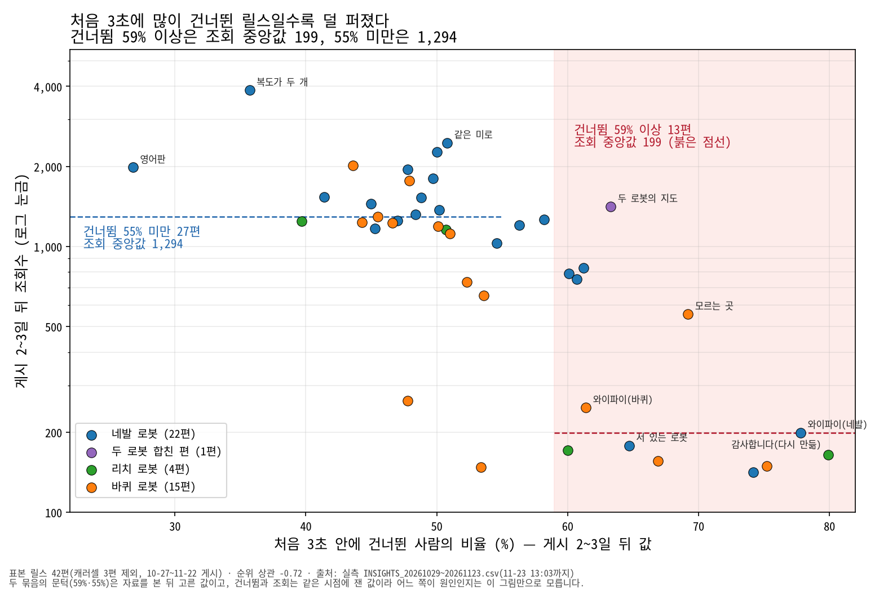
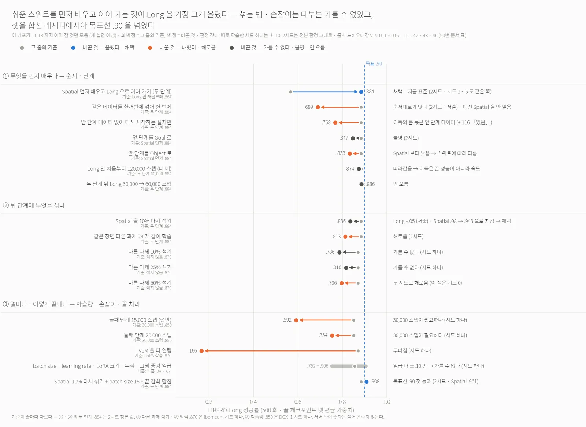
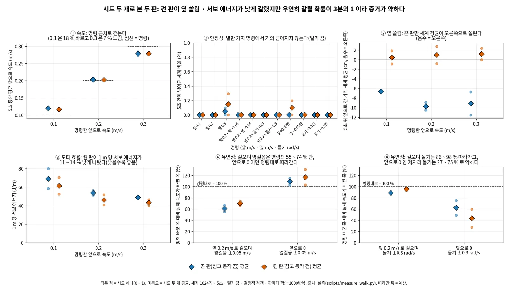
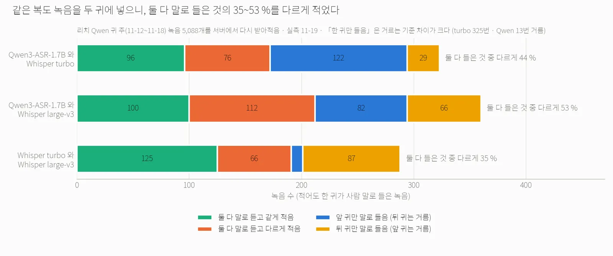
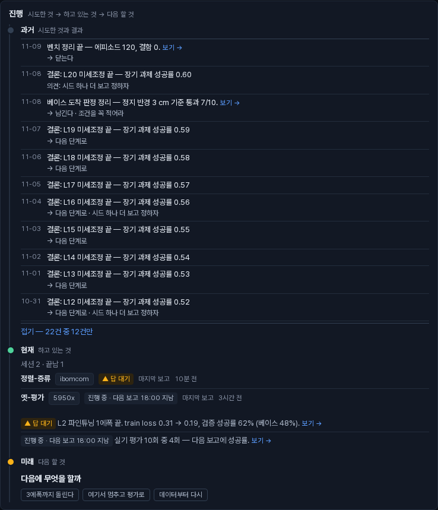
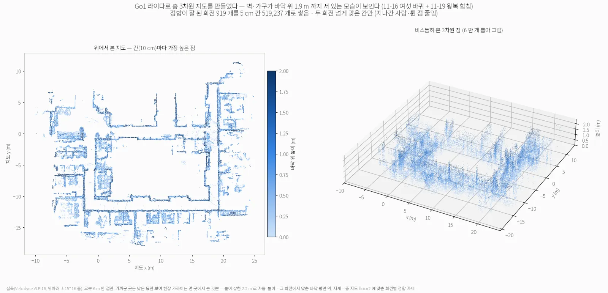
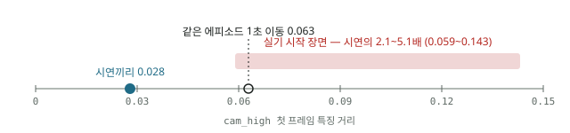
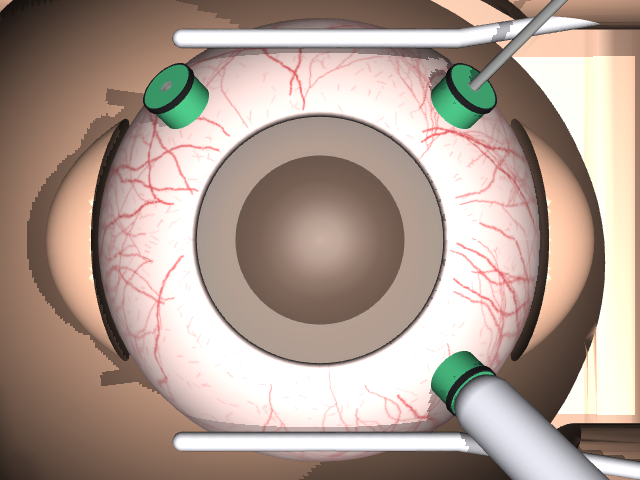

지금 할 일
세션 · 붙기
호스트별 GPU
이번 주 달력 →
비서 보고 비서의 아침 계획 ✎ 고치기 · 일괄 진행 →
밤사이 지난 12시간 · 끝낸 일 · 새 질문
프로젝트
프로젝트 누르면 보고·사진·사례로

처음 3초에 많이 건너뛴 릴스일수록 덜 퍼졌다 — 건너뜀 59% 이상 13편은 3일 조회 중앙 199, 55% 미만 27편은 1,294 (릴스 42편, 실측 INSIGHTS 10-29~11-23, 순위 상관 −0.72, 원인·결과 방향은 미확인)
지금까지 쌓인 레시피 한 장 — 쉬운 스위트를 먼저 배우고 이어 가는 것이 Long 을 가장 크게 올렸고, 섞는 법 · 손잡이는 대부분 가를 수 없었으며, 셋을 합친 레시피에서야 목표선 .90 을 넘었다(이미 잰 것만)
참고 동작 끈 판 · 켠 판을 시드 0 · 1 로 견주면 속도 · 안정성 · 에너지 · 유연성 모두 구별할 근거가 없음(2 대 2 우연 갈림 33 %) — 공통 약점은 제자리 돌기 27–75 % [DGX_2 시뮬 실측, 세계 1024]
같은 복도 녹음을 두 음성 인식 모델에 넣으니, 둘 다 말로 들은 것의 35~53 %를 다르게 적었다 — 리치 녹음 5,088개, 실측 11-19. 어느 쪽이 맞는지는 소유자 판정 15개로 본다
작업 연표 — 프로젝트 장 「과거」 칸이 끝난 보고 한 줄씩(날짜 · 무엇을 했나 · 고른 답), 보관함까지 새 것이 위로 선다. 「전부 보기」는 카드 안에서 펼쳐진다 (가짜 데이터로 찍은 화면, 2026-11-10)
Go1 라이다로 만든 층 3차원 지도 첫 판 — 11-16 여섯 바퀴와 11-19 서버실 왕복의 회전 919 개를 5 cm 칸 52 만 개로 쌓았다(바닥 위 높이 색, 실측 VLP-16)
시연 첫 프레임 최근접 거리 vs 실기 시작 장면 거리 — OOD 판정의 근거
현미경 시점 — 3포트 안구와 로봇이 쥔 광원(light pipe)이 ST 포트에 들어간 순간 (MuJoCo 시뮬, scene v1.4)일정 비서의 아침 계획 · 달력 — 날짜를 누르면 일정 더하기, 일정을 누르면 고치기
다가오는 일정 오늘부터 2주 · 누르면 고치기
★ 별표
실험 결과
확인할 것 세션이 올린 계획 카드 · 결과 빈 일정 — 누르면 카드를 펴 칸별로 고쳐 답합니다
⚙ 관리 토큰·테마는 이 브라우저에만, 나머지는 기기 간 공유(mailbox 의 settings.json)
점검 연결이 끊기거나 기록이 멈추기 전에 — 열 때마다 새로 읽는다
| GitHub 를 연결하면 섭니다 |
서버 상수 읽기 전용 — 값은 코드(tools/src/vaultgraph/inbox.py)에 있다
| 끝남 | 7일 | 마지막 보고가 이보다 오래면 그 세션은 끝남 |
|---|---|---|
| sid 보류 | 2시간 | 답이 적힌 지 이 동안은 올린 세션만 받는다 |
| 만료 | 7일 | 답이 적힌 지 이만큼 아무 세션도 안 받아 가면 expired |
| 색인 캐시 | 60초 | 사이트가 index.json 을 다시 읽는 간격 (`inbox_page.INDEX_TTL`) |
5950x
현황 상세 · 레포별 세션 · 이 머신으로 온 보고손볼 것 8건 · 규칙으로만 뽑는다
- ◆ 위험 / 여유 122.7G (기준 150G)→ 재생성 가능한 산출물부터 정리
- ▲ 주의 DINObotPose3 — 미커밋 1개, 마지막 커밋 148일 전→ 커밋하거나 .gitignore
- ▲ 주의 DIP_ROBOTPOSE — 미커밋 1개, 마지막 커밋 126일 전→ 커밋하거나 .gitignore
- ▲ 주의 VLA-Adapter — 미커밋 8개, 마지막 커밋 246일 전→ 커밋하거나 .gitignore
- ▲ 주의 VLANeXt — 원격보다 3커밋 앞섬 (lerobot)→ push
- ▲ 주의 VLANeXt — 미커밋 2개, 마지막 커밋 31일 전→ 커밋하거나 .gitignore
- ▲ 주의 VLA_research — 미커밋 28개, 마지막 커밋 11일 전→ 커밋하거나 .gitignore
- ▲ 주의 najy-asset-history — 브랜치 feat/toss-history 가 원격을 추적하지 않는다 (push 안 됐을 수 있다)→ git push -u origin <브랜치>
5950x
✔ ——· 코어 32 · 부하 2.12 · 메모리 여유 76.7/131.8G8GPU 표 — UUID · util · 온도 · 프로세스
| smi | 카드 · UUID | 남은 메모리 | util | 온도 | 프로세스 |
|---|---|---|---|---|---|
| 2 | RTX 3090 GPU-ab38c04c-0adf-17eb-fc9f-fab2e28559f5 | 4.9 / 24G | 0% | 26° | 278474 19G (다른 사용자) |
| 0 | RTX 3090 GPU-dcc3144a-62e5-dc63-0913-d4f15c7eb4e4 | 4.9 / 24G | 0% | 43° | 278466 19G (다른 사용자) |
| 1 | RTX 3090 GPU-05f84104-40d4-c675-91bf-5427bc0fd5e9 | 4.9 / 24G | 0% | 51° | 278442 19G (다른 사용자) |
디스크
학습·평가 프로세스
| 경과 | 작업 폴더 | 명령 |
|---|---|---|
| 2.2h | (작업 루트 밖) | python run_policy.py |
| 2.2h | (작업 루트 밖) | python run_policy.py |
| 2.2h | (작업 루트 밖) | python run_policy.py |
| 2.2h | (작업 루트 밖) | python run_policy.py |
| 2.2h | (작업 루트 밖) | python run_policy.py |
| 2.2h | (작업 루트 밖) | python run_policy.py |
| 2.2h | (작업 루트 밖) | python run_policy.py |
| 2.2h | (작업 루트 밖) | python run_policy.py |
레포 동기화 23개 · 원격 기준은 마지막으로 받은 시점
| 레포 | 브랜치 | 마지막 커밋 | 상태 |
|---|---|---|---|
| DINObotPose3 | main | 2026-07-03 | 미커밋 1 |
| DINObotPose3/CtRNet-X | main | 2025-03-20 | 미커밋 13 |
| DINObotPose3/DREAM | master | 2023-10-17 | 미커밋 4 |
| DINObotPose3/Holistic-Robot-Pose-Estimation | main | 2025-01-06 | ✔ 동기 |
| DINObotPose3/RoboPEPP | main | 2025-07-31 | 미커밋 7 |
| DINObotPose3/robopose | master | 2021-08-23 | 미커밋 2 |
| DINObotPose3/sam3 | main | 2026-05-23 | ✔ 동기 |
| DIP_ROBOTPOSE | docs/2026-07-24-eval-experiments | 2026-07-25 | 미커밋 1 |
| DIP_ROBOTPOSE/GISR-robot | master | 2025-10-16 | ✔ 동기 |
| Insertion_VLA_Sim2 | main | 2026-03-15 | ✔ 동기 |
| OnLab/Kiosk_pose_OnLab | main | 2026-07-02 | ✔ 동기 |
| Project | main | 2026-09-23 | ✔ 동기 |
| VLA-Adapter | main | 2026-03-27 | 미커밋 8 |
| VLA-Adapter/LIBERO | master | 2025-03-15 | 미커밋 1 |
| VLANeXt | lerobot | 2026-10-28 | ▲ 3 앞섬미커밋 2 |
| VLA_research | main | 2026-11-17 | 725 뒤짐미커밋 28 |
| VLA_research-recipe-settings | docs/vla-recipe-settings-20261128 | 2026-11-28 | 13 뒤짐 |
| VLA_research-requests-20261028 | request-l2c-hangang-20261028 | 2026-10-31 | 1537 뒤짐 |
| claude-dotfiles | main | 2026-11-28 | ✔ 동기 |
| najy-asset | main | 2026-10-08 | ✔ 동기 |
| najy-asset-history | feat/toss-history | 2026-10-08 | ▲ 원격 추적 없음 |
| research_vault | main | 2026-11-28 | 미커밋 1 |
| research_vault-work | (detached) | 2026-11-07 | ▲ 원격 추적 없음 |
세션 레포별 · 마지막 보고 · 24시간 넘은 것은 접힌다
DGX_1
현황 상세 · 레포별 세션 · 이 머신으로 온 보고손볼 것 8건 · 규칙으로만 뽑는다
- ◆ 위험 /home/kiro-ai/NAJY 여유 52.5G (기준 150G)→ 재생성 가능한 산출물부터 정리
- ▲ 주의 base_arrival — 원격보다 5커밋 앞섬 (main)→ push
- ▲ 주의 base_arrival — 미커밋 1개, 마지막 커밋 30일 전→ 커밋하거나 .gitignore
- ▲ 주의 lerobot_trossen — 원격보다 318커밋 앞섬 (main)→ push
- ▲ 주의 reachy-2019 — 원격보다 1커밋 앞섬 (main)→ push
- ▲ 주의 robot_insta — 원격보다 6커밋 앞섬 (main)→ push
- ▲ 주의 trossen-ai-simulation — 원격보다 497커밋 앞섬 (feature/foundation-training-pipeline)→ push
- ▲ 주의 trossen-ai-simulation — 미커밋 1개, 마지막 커밋 18일 전→ 커밋하거나 .gitignore
DGX_1
✔ ——· 코어 80 · 부하 9.46 · 메모리 여유 389.8/528.2G8GPU 표 — UUID · util · 온도 · 프로세스
| smi | 카드 · UUID | 남은 메모리 | util | 온도 | 프로세스 |
|---|---|---|---|---|---|
| 6 | Tesla V100-SXM2-32GB GPU-b427b26c-f159-20e1-d4f3-ea9b9a3c51f2 | 32.0 / 32G | 0% | 34° | 비어 있음 |
| 7 | Tesla V100-SXM2-32GB GPU-6908d0d7-3b3e-1c20-4fc4-ef03458209fe | 32.0 / 32G | 0% | 31° | 비어 있음 |
| 0 | Tesla V100-SXM2-32GB GPU-3878af6f-5468-7888-1e35-3649eeffcbf8 | 29.7 / 32G | 0% | 35° | 2015916 2G python3 stt_server.py |
| 1 | Tesla V100-SXM2-32GB GPU-dca1ea06-db90-d2df-3db5-40e5dd8f4a91 | 21.2 / 32G | 0% | 38° | 2015228 10G llama-server -m gguf |
| 5 | Tesla V100-SXM2-32GB GPU-38e04266-131d-44fa-ce68-dfedf8275211 | 12.7 / 32G | 100% | 67° | 1548307 19G python scripts_dgx1_nofa2.py |
| 3 | Tesla V100-SXM2-32GB GPU-ae8bd9a1-2d13-43ad-c51a-1551b823efb6 | 12.6 / 32G | 100% | 55° | 1521239 19G python scripts_dgx1_nofa2.py |
| 4 | Tesla V100-SXM2-32GB GPU-abfacb29-09e7-bc78-9161-ab2165e3c22c | 11.2 / 32G | 95% | 56° | 1531507 20G python scripts_dgx1_nofa2.py |
| 2 | Tesla V100-SXM2-32GB GPU-d967908d-8c2e-f7eb-01f7-cc4e587eace8 | 11.2 / 32G | 63% | 64° | 1511938 20G python scripts_dgx1_nofa2.py |
디스크
학습·평가 프로세스
| 경과 | 작업 폴더 | 명령 |
|---|---|---|
| 8.1h | VLA_research/exp_vla | python scripts_dgx1_nofa2.py |
| 8.0h | VLA_research/exp_vla | python scripts_dgx1_nofa2.py |
| 8.0h | VLA_research/exp_vla | python scripts_dgx1_nofa2.py |
| 7.9h | VLA_research/exp_vla | python scripts_dgx1_nofa2.py |
레포 동기화 19개 · 원격 기준은 마지막으로 받은 시점
| 레포 | 브랜치 | 마지막 커밋 | 상태 |
|---|---|---|---|
| Albabot | main | 2026-11-28 | 미커밋 1 |
| Go1 | main | 2026-11-28 | 미커밋 17 |
| Go1/unitree_go1 | main | 2025-06-12 | ✔ 동기 |
| Internet_of_Robot | main | 2026-11-28 | ✔ 동기 |
| Make_kirotoo | main | 2026-11-28 | 미커밋 6 |
| Reservation_Room | feature/room-reservation | 2026-11-27 | ✔ 동기 |
| VLA_research | main | 2026-11-28 | 미커밋 736 |
| VLAb | main | 2025-11-19 | ✔ 동기 |
| base_arrival | main | 2026-10-29 | ▲ 5 앞섬미커밋 1 |
| claude-dotfiles | main | 2026-11-27 | 1 뒤짐미커밋 34 |
| kiro-lab-manuals | main | 2026-11-27 | 미커밋 1 |
| kitoru-rl | main | 2026-11-28 | ✔ 동기 |
| lerobot_trossen | main | 2026-11-23 | ▲ 318 앞섬 |
| reachy-2019 | main | 2026-11-28 | ▲ 1 앞섬미커밋 6 |
| research_vault | main | 2026-11-28 | 미커밋 1 |
| robot_insta | main | 2026-11-28 | ▲ 6 앞섬 |
| secretary | main | 2026-11-28 | ✔ 동기 |
| server-admin | main | 2026-11-27 | ✔ 동기 |
| trossen-ai-simulation | feature/foundation-training-pipeline | 2026-11-10 | ▲ 497 앞섬미커밋 1 |
세션 레포별 · 마지막 보고 · 24시간 넘은 것은 접힌다
DGX_2
현황 상세 · 레포별 세션 · 이 머신으로 온 보고DGX_2
▲ ——· 코어 96 · 부하 0.62 · 메모리 여유 513.5/526.9G0GPU 표 — UUID · util · 온도 · 프로세스
| smi | 카드 · UUID | 남은 메모리 | util | 온도 | 프로세스 |
|---|---|---|---|---|---|
| 0 | Tesla V100-PCIE-32GB GPU-4998229a-1072-f79b-e6c2-860ca841398b | 32.0 / 32G | 0% | 28° | 비어 있음 |
| 1 | Tesla V100-PCIE-32GB GPU-dbee9013-122f-430a-e229-908a3017302f | 32.0 / 32G | 0% | 28° | 비어 있음 |
| 2 | Tesla V100-PCIE-32GB GPU-5fe38015-b57a-9181-788d-94bf0d842dbe | 32.0 / 32G | 0% | 29° | 비어 있음 |
| 3 | Tesla V100-PCIE-32GB GPU-aa5d2a43-a889-e598-073c-84b73f403bcb | 31.9 / 32G | 0% | 26° | 비어 있음 |
디스크
학습·평가 프로세스
| 경과 | 작업 폴더 | 명령 |
|---|---|---|
| 260.4h | (작업 루트 밖) | tail |
레포 동기화 6개 · 원격 기준은 마지막으로 받은 시점
| 레포 | 브랜치 | 마지막 커밋 | 상태 |
|---|---|---|---|
| VLA-Adapter/LIBERO | master | 2025-03-15 | ✔ 동기 |
| VLA_research | main | 2026-11-26 | 미커밋 23 |
| claude-dotfiles | main | 2026-11-24 | 7 뒤짐 |
| kitoru-rl | main | 2026-11-27 | ✔ 동기 |
| research_vault | main | 2026-11-27 | ✔ 동기 |
| server-admin | main | 2026-11-24 | ✔ 동기 |
세션 레포별 · 마지막 보고 · 24시간 넘은 것은 접힌다
Trossen_PC1
현황 상세 · 레포별 세션 · 이 머신으로 온 보고손볼 것 2건 · 규칙으로만 뽑는다
- ▲ 주의 현황이 30.0일째 안 올라왔다→ Trossen_PC1 에서 vaultgraph status collect --save
- ▲ 주의 lerobot_trossen — 미커밋 1개, 마지막 커밋 31일 전→ 커밋하거나 .gitignore
Trossen_PC1
✖ ——· 코어 24 · 부하 0.56 · 메모리 여유 59.0/65.2G2GPU 표 — UUID · util · 온도 · 프로세스
| smi | 카드 · UUID | 남은 메모리 | util | 온도 | 프로세스 |
|---|---|---|---|---|---|
| 0 | RTX 5090 Laptop GPU GPU-067cc7de-c1e0-9285-85aa-63138adad75c | 23.9 / 24G | 4% | 41° | 비어 있음 |
디스크
학습·평가 프로세스
없음
레포 동기화 5개 · 원격 기준은 마지막으로 받은 시점
| 레포 | 브랜치 | 마지막 커밋 | 상태 |
|---|---|---|---|
| base_arrival | main | 2026-10-29 | ✔ 동기 |
| claude-dotfiles | main | 2026-10-29 | ✔ 동기 |
| lerobot_trossen | main | 2026-10-28 | 미커밋 1 |
| research_vault | main | 2026-10-27 | ✔ 동기 |
| trossen-ai-simulation | main | 2026-10-20 | ✔ 동기 |
세션 레포별 · 마지막 보고 · 24시간 넘은 것은 접힌다
hangang
현황 상세 · 레포별 세션 · 이 머신으로 온 보고손볼 것 5건 · 규칙으로만 뽑는다
- ▲ 주의 TrocarBench — 미커밋 1개, 마지막 커밋 20일 전→ 커밋하거나 .gitignore
- ▲ 주의 TrocarBench-train — 브랜치 train-v1 가 원격을 추적하지 않는다 (push 안 됐을 수 있다)→ git push -u origin <브랜치>
- ▲ 주의 VLA_research — 미커밋 10개, 마지막 커밋 9일 전→ 커밋하거나 .gitignore
- ▲ 주의 research_vault — 미커밋 1개, 마지막 커밋 12일 전→ 커밋하거나 .gitignore
- ▲ 주의 research_vault-work — 브랜치 session/hangang-20261102-2010-trocarbench-c12-resolution-floor 가 원격을 추적하지 않는다 (push 안 됐을 수 있다)→ git push -u origin <브랜치>
hangang
✔ ——· 코어 144 · 부하 0.07 · 메모리 여유 1265.1/1285.5G5GPU 표 — UUID · util · 온도 · 프로세스
| smi | 카드 · UUID | 남은 메모리 | util | 온도 | 프로세스 |
|---|---|---|---|---|---|
| 0 | GH200 144G HBM3e GPU-e34dad40-a2a3-1462-5af6-41f59f944819 | 143.4 / 143G | 0% | 32° | 비어 있음 |
| 1 | GH200 144G HBM3e GPU-fa38396b-635d-ebea-9747-47183e747014 | 143.4 / 143G | 0% | 31° | 비어 있음 |
디스크
학습·평가 프로세스
없음
레포 동기화 8개 · 원격 기준은 마지막으로 받은 시점
| 레포 | 브랜치 | 마지막 커밋 | 상태 |
|---|---|---|---|
| TrocarBench | master | 2026-11-08 | 미커밋 1 |
| TrocarBench-train | train-v1 | 2026-11-14 | ▲ 원격 추적 없음 |
| VLANeXt2 | main | 2026-10-30 | ✔ 동기 |
| VLA_research | main | 2026-11-19 | 미커밋 10 |
| claude-dotfiles | main | 2026-11-16 | ✔ 동기 |
| lerobot_trossen | main | 2026-10-28 | ✔ 동기 |
| research_vault | main | 2026-11-16 | 89 뒤짐미커밋 1 |
| research_vault-work | session/hangang-20261102-2010-trocarbench-c12-resolution-floor | 2026-11-02 | ▲ 원격 추적 없음 |
세션 레포별 · 마지막 보고 · 24시간 넘은 것은 접힌다
ibomcom
현황 상세 · 레포별 세션 · 이 머신으로 온 보고손볼 것 8건 · 규칙으로만 뽑는다
- ◆ 위험 /home/najo/NAS 여유 77.3G (기준 150G)→ 재생성 가능한 산출물부터 정리
- ▲ 주의 DIP — 미커밋 2개, 마지막 커밋 65일 전→ 커밋하거나 .gitignore
- ▲ 주의 VLA-Adapter — 미커밋 218개, 마지막 커밋 254일 전→ 커밋하거나 .gitignore
- ▲ 주의 LIBERO-PRO — 미커밋 4개, 마지막 커밋 250일 전→ 커밋하거나 .gitignore
- ▲ 주의 VLA_research — 미커밋 3047개, 마지막 커밋 8일 전→ 커밋하거나 .gitignore
- ▲ 주의 VLA_research-ja3rp — 브랜치 ja3-rp-prep 가 원격을 추적하지 않는다 (push 안 됐을 수 있다)→ git push -u origin <브랜치>
- ▲ 주의 claude-dotfiles — 미커밋 1개, 마지막 커밋 9일 전→ 커밋하거나 .gitignore
- ▲ 주의 knowledge-vault — 원격보다 3커밋 앞섬 (main)→ push
ibomcom
▲ ——· 코어 48 · 부하 0.44 · 메모리 여유 252.2/263.8G8GPU 표 — UUID · util · 온도 · 프로세스
| smi | 카드 · UUID | 남은 메모리 | util | 온도 | 프로세스 |
|---|---|---|---|---|---|
| 2 | RTX A6000 GPU-05b804ff-3b02-39f4-cf62-b848e189ebdd | 48.0 / 48G | 0% | 30° | 비어 있음 |
| 0 | RTX 3090 GPU-c3d180c2-f92c-fe13-b7b8-337247e36a33 | 24.0 / 24G | 0% | 28° | 비어 있음 |
| 1 | RTX 3090 GPU-70a2a406-5d77-3533-e8ba-0c9d338f4a11 | 24.0 / 24G | 0% | 28° | 비어 있음 |
| 3 | RTX 3090 GPU-1cdd7bc8-7c5a-dc09-d4fc-5dcfe92e104d | 24.0 / 24G | 0% | 29° | 비어 있음 |
디스크
학습·평가 프로세스
없음
레포 동기화 28개 · 원격 기준은 마지막으로 받은 시점
| 레포 | 브랜치 | 마지막 커밋 | 상태 |
|---|---|---|---|
| DIP | main | 2026-09-24 | 65 뒤짐미커밋 2 |
| DIP/CtRNet-X | main | 2025-03-20 | ✔ 동기 |
| DIP/DREAM | master | 2023-10-17 | 미커밋 4 |
| DIP/Holistic-Robot-Pose-Estimation | main | 2025-01-06 | 미커밋 2 |
| DIP/RoboPEPP | main | 2026-06-11 | 미커밋 8 |
| DIP/robopose | master | 2021-08-23 | 미커밋 1 |
| GC | main | 2026-09-15 | ✔ 동기 |
| GC/FPI_puncture_detection | main | 2026-09-15 | ✔ 동기 |
| GC/PunctureCurve | main | 2026-09-15 | ✔ 동기 |
| Internet_of_Robot | main | 2026-10-16 | ✔ 동기 |
| Kiosk_pose_OnLab | main | 2026-11-11 | ✔ 동기 |
| Lab_studies | main | 2026-09-15 | ✔ 동기 |
| TrocarBench | master | 2026-11-18 | ✔ 동기 |
| VLA | main | 2026-09-15 | ✔ 동기 |
| VLA-Adapter | main | 2026-03-19 | 미커밋 218 |
| VLA-Adapter/LIBERO | (detached) | 2025-03-15 | ✔ 동기 |
| VLANeXt | lerobot | 2026-07-03 | ✔ 동기 |
| VLANeXt2 | main | 2026-10-30 | ✔ 동기 |
| VLA_ext/LIBERO-PRO | master | 2026-03-23 | 미커밋 4 |
| VLA_ext/LIBERO-plus | main | 2026-01-21 | ✔ 동기 |
| VLA_research | main | 2026-11-20 | 미커밋 3047 |
| VLA_research-ja3rp | ja3-rp-prep | 2026-11-08 | ▲ 원격 추적 없음 |
| claude-dotfiles | main | 2026-11-19 | 19 뒤짐미커밋 1 |
| kitoru-rl | main | 2026-11-27 | ✔ 동기 |
| knowledge-vault | main | 2026-10-31 | ▲ 3 앞섬2 뒤짐 |
| research_vault | main | 2026-11-27 | ✔ 동기 |
| research_vault-graphify | (detached) | 2026-10-30 | ▲ 원격 추적 없음 |
| research_vault-work | (detached) | 2026-11-18 | ▲ 원격 추적 없음 |
세션 레포별 · 마지막 보고 · 24시간 넘은 것은 접힌다
sandia
현황 상세 · 레포별 세션 · 이 머신으로 온 보고손볼 것 3건 · 규칙으로만 뽑는다
- ◆ 위험 / 여유 50.6G (기준 150G)→ 재생성 가능한 산출물부터 정리
- ▲ 주의 VLA-Adapter — 미커밋 89개, 마지막 커밋 254일 전→ 커밋하거나 .gitignore
- ▲ 주의 LIBERO-PRO — 미커밋 4개, 마지막 커밋 250일 전→ 커밋하거나 .gitignore
sandia
✔ ——· 코어 64 · 부하 2.5 · 메모리 여유 197.8/263.7G3GPU 표 — UUID · util · 온도 · 프로세스
| smi | 카드 · UUID | 남은 메모리 | util | 온도 | 프로세스 |
|---|---|---|---|---|---|
| 2 | RTX 3090 GPU-06ea9f33-2cad-4a90-81fd-d4cd94faa1fa | 24.0 / 24G | 0% | 26° | 비어 있음 |
| 3 | RTX 3090 GPU-9894e672-8a21-90f0-14c6-ebab088266ab | 24.0 / 24G | 0% | 26° | 비어 있음 |
| 0 | RTX 3090 GPU-ee4df9f8-5a33-e0a8-bf90-a9def79b3a7e | 5.0 / 24G | 23% | 60° | 1115280 19G python register.py |
| 1 | RTX 3090 GPU-de4ff36f-be17-9d4a-436c-fe9e51ab34a5 | 5.0 / 24G | 22% | 64° | 1125480 19G python register.py |
디스크
학습·평가 프로세스
| 경과 | 작업 폴더 | 명령 |
|---|---|---|
| 2.2h | VLA_research/exp_vla | python register.py |
| 2.0h | VLA_research/exp_vla | python register.py |
레포 동기화 7개 · 원격 기준은 마지막으로 받은 시점
| 레포 | 브랜치 | 마지막 커밋 | 상태 |
|---|---|---|---|
| VLA-Adapter | (detached) | 2026-03-19 | ▲ 원격 추적 없음미커밋 89 |
| VLA-Adapter/LIBERO | (detached) | 2025-03-15 | 미커밋 1 |
| VLA_ext/LIBERO-PRO | master | 2026-03-23 | 미커밋 4 |
| VLA_research | main | 2026-11-28 | 미커밋 114 |
| claude-dotfiles | main | 2026-11-28 | 미커밋 2 |
| research_vault | main | 2026-11-28 | 미커밋 2 |
| server-admin | main | 2026-11-25 | ✔ 동기 |
세션 레포별 · 마지막 보고 · 24시간 넘은 것은 접힌다
하루 두 번 자동 게시 중 — 새 편은 만들지 않고 지표를 지켜본다 (소유자 2026-11-10)
프로젝트 현황판
레포의 STATUS.md 그대로 — 지금 목표·할 일·다음 한 걸음프로젝트 현황판
레포의 STATUS.md 그대로 — 지금 목표·할 일·다음 한 걸음현재 지점이 아직 안 적혔다
프로젝트 현황판
레포의 STATUS.md 그대로 — 지금 목표·할 일·다음 한 걸음아래 「현재 지점」 · 「핵심 결과」는 2026-09-23 기록이다 — 11월의 지금 지점은 위 요약 절과 레포 현황판(STATUS.md)에 있다.
프로젝트 현황판
레포의 STATUS.md 그대로 — 지금 목표·할 일·다음 한 걸음프로젝트 현황판
레포의 STATUS.md 그대로 — 지금 목표·할 일·다음 한 걸음현재 지점이 아직 안 적혔다
프로젝트 현황판
레포의 STATUS.md 그대로 — 지금 목표·할 일·다음 한 걸음복도 로봇이 잘못 알아들은 말에 마음대로 답한다 — Google 우선 귀와 귀 모델 고르기 — 최신 사례 C17
프로젝트 현황판
레포의 STATUS.md 그대로 — 지금 목표·할 일·다음 한 걸음오늘 계획 PLAN.md · 목표 시간표 ROADMAP.md(프로젝트마다 이번 주·이번 달·그 뒤) · 날마다 끝난 것 LOG.md · 현황판 STATUS.md.
프로젝트 현황판
레포의 STATUS.md 그대로 — 지금 목표·할 일·다음 한 걸음사이트는 한 파일 앱이다 — 왼쪽 프로젝트 목록 · 가운데 홈/관제실/사례/현황/그래프 · 오른쪽 볼트 규모. 사례집은 색인 한 장이고 사례를 누르면 그 사례만 열린다 (2026-10-31).
프로젝트 현황판
레포의 STATUS.md 그대로 — 지금 목표·할 일·다음 한 걸음순찰하는 Go1 이 지도에서 바뀐 것을 떼어 「무엇인지」를 알아보는 지식을 쌓을 수 있나 — 라이다 덩어리·사진·사람·움직이는 로봇 — 최신 사례 C19
프로젝트 현황판
레포의 STATUS.md 그대로 — 지금 목표·할 일·다음 한 걸음프로젝트 현황판
레포의 STATUS.md 그대로 — 지금 목표·할 일·다음 한 걸음프로젝트 현황판
레포의 STATUS.md 그대로 — 지금 목표·할 일·다음 한 걸음trossen-ai-simulation — Trossen 시뮬레이션 학습 (ACT·SmolVLA)
프로젝트 활성Najongs/trossen-ai-simulation[비공개]/trossen-ai-simulationDGX_1Trossen_PC1ibomcomTrossen마지막 활동 —학습은 돌 만큼 돌았고, 아무것도 평가되지 않았다. 다음 한 걸음은 새 런이 아니라 eval이다.
프로젝트 현황판
레포의 STATUS.md 그대로 — 지금 목표·할 일·다음 한 걸음현재 지점이 아직 안 적혔다
프로젝트 현황판
레포의 STATUS.md 그대로 — 지금 목표·할 일·다음 한 걸음현재 지점이 아직 안 적혔다
프로젝트 현황판
레포의 STATUS.md 그대로 — 지금 목표·할 일·다음 한 걸음데이터셋 v1(상태 마스터, render OFF) 2,000 에피소드 생성·계약 검사 완료. 비공개 HF 데이터셋에 같은 폴더 구조로 올라가 있다.
프로젝트 현황판
레포의 STATUS.md 그대로 — 지금 목표·할 일·다음 한 걸음프로젝트 현황판
레포의 STATUS.md 그대로 — 지금 목표·할 일·다음 한 걸음Trossen_Foundation_52DS — trossen-ai-simulation 안의 SmolVLA 파운데이션 학습 (데이터셋 52개)
프로젝트 활성DGX_1Trossen마지막 활동 —1단계(증강 없음) 190,000 step 에서 OOM 으로 멈췄고, 마지막 체크포인트 190,000 에서
프로젝트 현황판
레포의 STATUS.md 그대로 — 지금 목표·할 일·다음 한 걸음프로젝트 현황판
레포의 STATUS.md 그대로 — 지금 목표·할 일·다음 한 걸음프로젝트 현황판
레포의 STATUS.md 그대로 — 지금 목표·할 일·다음 한 걸음프로젝트 현황판
레포의 STATUS.md 그대로 — 지금 목표·할 일·다음 한 걸음프로젝트 현황판
레포의 STATUS.md 그대로 — 지금 목표·할 일·다음 한 걸음프로젝트 현황판
레포의 STATUS.md 그대로 — 지금 목표·할 일·다음 한 걸음현재 지점이 아직 안 적혔다
프로젝트 현황판
레포의 STATUS.md 그대로 — 지금 목표·할 일·다음 한 걸음프로젝트 현황판
레포의 STATUS.md 그대로 — 지금 목표·할 일·다음 한 걸음프로젝트 현황판
레포의 STATUS.md 그대로 — 지금 목표·할 일·다음 한 걸음프로젝트 현황판
레포의 STATUS.md 그대로 — 지금 목표·할 일·다음 한 걸음VLA 연구 지도
확정✖ 안 됨 1✔ 답 나옴 0실험 중● 진행 중 1● 현황판 · 실험 큐 0확정 전◆ 가설 3▲ 부분 답 24○ 모름 7◌ 기록 0 6VLA_research
잎을 못 찾은 그림 3 캡션 첫 줄 「잎: 큰 갈래 › 중간 › 작은 · 질문 앞부분」이 지도의 잎과 맞지 않습니다
- VLA_research과정 그림 — Long .908 레시피의 두 손잡이(실효 batch size 16 · 끝 감쇠)를 재생 없이 떼어 같은 시작점에서 5,000 스텝 더, 세 갈래 · 두 시드(DGX_1 카드 2 ~ 6 · 11-28 06:4x 발사)맞는 잎 없음
- VLA_research교사(Long .954)가 해낸 시도를 보태 5,000 스텝 이어 학습: .858 · .786 대 원래 데이터로만 .826 · .800 → 「두 시드로 가를 수 없다」(DGX_1 실측 · 시드마다 500 회 · 감사 뒤)맞는 잎 없음
- VLA_research과정 그림 — 같은 크기 공식 체크포인트(우리 평가 .954)가 해낸 시도를 보태 5,000 스텝 더 배운 쪽과, 원래 시연만 5,000 스텝 더 배운 쪽을 두 시드로 견준다(DGX_1 · 결과 11-19 낮).맞는 잎 없음
데이터
같은 모델 · 같은 학습 설정에서 학습에 넣는 에피소드를 바꾼다.
- 토이 검정 레포 후보(전부 등록 전): trossen-ai-simulation(DGX_1 · 시뮬 먼저) · lerobot_trossen(DGX_1 학습 · 로봇 PC 실기 · 1단계 보류) · VLA_research(섞는 몫 · 재생)
조작을 바로잡기
〔실패 요인 3〕 실패 상황을 바로잡는 데이터가 있어야 조작이 되는가?
▲ 부분 답 확정 전 질문 ①
데이터 › 바로잡는(리커버리) 시연 › 조작을 바로잡기
- 중요도
중 — 소유자 질문 ①이지만 VLM 계획 사슬 밖이다
- 난이도
상 — 바로잡는 시연을 새로 만들어야 하고(사람 대신 모델로 만드는 법 미정) 판정이 실기다
- 아는 것
팀원은 파이제로를 리커버리 데이터 병합본으로 더 학습해 텍스트 명령 하나로 조작이 된다고 한다.
추정더 보기
- 팀원은 파이제로(pi0)를 리커버리 데이터 병합본으로 더 학습해 텍스트 명령 하나로 조작이 된다고 한다. 성공률과 조건은 레포에 없고, 병합본 크기 2,094 에피소드는 데이터셋 이름에서 읽은 값이다 추정
- 우리 ACT 는 바로잡는 장면 없이 학습했다. 같은 모델이 로봇 자리만 어긋나면 빈손이었고, 시연 재생으로 자리를 맞추면 왼손으로 집었다 실측
근거
- 추정 — 소유자 말 11-11, lerobot_trossen docs/research_status_plan_1111.md 2절 「사」 · docs/najy_synthesis_1110.md 8절
- 실측 — 실기, research_vault cases/ ②-H1·H6
- 안 된 것
니들 삽입 시뮬에서 정렬 구간 교정 시연은 첫 판에서 성공 17/148 대 1/148 이었지만, 두 시드로 다시 한 판에서는 6.5·5.7% 대 깨끗한 시연 10.5·2.3% 로 대조군을 넘지 못했고 잔차 1.7 mm 도 그대로였다.
더 보기
- 니들 삽입 시뮬에서 정렬 구간 교정 시연(일부러 흔든 뒤 회복하는 DART 식)은 첫 판에서 성공 17/148 대 1/148 이었지만, 두 시드로 다시 한 판에서는 6.5·5.7% 대 깨끗한 시연 10.5·2.3% 로 대조군을 넘지 못했고 잔차 1.7 mm 도 그대로였다. 첫 판의 차이는 시드 분산으로 설명된다
- 같은 벤치에서 정책이 실제로 빠지는 「입구 옆 누름」 자세에서 시작한 회복 시연은 엄격 성공을 올리지 못했다. 다만 「누르며 정체」 를 「입구 위에서 머묾」 으로 바꾸는 데까지는 두 시드 모두 재현됐고, 머문 자세에서 회복 시연을 다시 모으는 2회차(DAgger 반복)는 시험하지 않았다. 플랫폼이 달라 Trossen 조작으로 옮겨 읽지 않는다
근거
- ②-H16 ❌ v2 두 시드
- ②-H21 ❌ 엄격 성공 기준
- 다음 실험
자리를 흩뜨린 시연으로 학습을 먼저 하고, 그 모델이 실패한 자리에서 사람 교정 10 에피소드를 더해 다시 잰다
근거
- ④-E4, 사람이 개입해 교정 라벨을 모으는 HG-DAgger 식
- ④-E1
시험할 레포 lerobot_trossen · TrocarBench · VLANeXt2
이동을 바로잡기(꼬리표 이동)
〔실패 요인 2·소유자 가설〕 이동(도착·정지) 문제도 바로잡는 데이터셋으로 해결되는가?
◆ 가설(검증 전) 확정 전 질문 ② 이동
데이터 › 바로잡는(리커버리) 시연 › 이동을 바로잡기(꼬리표 이동)
- 중요도
중 — 소유자 질문 ②
- 난이도
상 — 바로잡는 시연 약 60개를 새로 만들고 실기로 비교한다(만드는 법 미정 · 보류)
- 아는 것
지금까지 바꾼 것은 실행 설정·입력·모델 종류뿐이고 데이터는 같았다.
실측더 보기
- 지금까지 바꾼 것은 실행 설정·입력·모델 종류뿐이고 데이터는 같았다. 1단계 시연 100개가 같은 자리에서 76~89° 만 돌아 「더 돈 장면」 과 「도착해서 멈추는 장면」 이 없다. 그래서 「VLA 로 이동을 푼다」 는 반증되지 않았다 실측
- 처방인 바로잡는 시연 녹화(10-21 계획)는 하지 않았다. 볼트의 「녹화는 했다」 는 오기로 정정됐다 실측
근거
- 실측 — 녹화 데이터·실기, research_vault cases/ 3절 · lerobot_trossen docs/research_status_plan_1111.md 3.2절
- 실측 — 허브 확인 11-10, research_vault cases/ ②-H8
- 안 된 것
누적 헤딩 입력
더 보기
- 누적 헤딩 입력
- SmolVLA fp32 재학습 · VLM 언프리즈
- 천천히 도는 데이터 — 원인은 속도가 아니라 장면이었다
- 「학습한 정책이면 시작 위치가 달라도 된다」 를 검증 없이 전제로 두기
근거
- ②-H2 ❌
- ②-H5·H6 ❌
- lerobot_trossen docs/najy_synthesis_1110.md 9절 10-20 정정
- ②-H10 ❌
- 다음 실험
바로잡는 시연 약 60개로 학습해, 어긋남 0 · 5 cm·5° · 10 cm·10° 에서 정책 단독 10회씩 넣기 전 모델과 같은 날 비교한다.
더 보기
- 바로잡는 시연 약 60개(흔든 출발 30 · 회전 중간 출발 9 · 지나친 뒤 되돌리기 12 · 천천히 10~15, 끝마다 3 s 정지)로 학습해, 어긋남 0 · 5 cm·5° · 10 cm·10° 에서 정책 단독 10회씩 넣기 전 모델과 같은 날 비교한다. 판정은 어긋난 자리 10회 중 7회 이상 정지, 넣기 전 모델보다 2회 이상. 11-11 소유자가 사람 녹화 대신 모델로 데이터를 만들기로 해 만드는 법은 미정이고, 전체가 보류다
근거
- ④-E1 = lerobot_trossen docs/research_status_plan_1111.md 5절
시험할 레포 lerobot_trossen · trossen-ai-simulation
사람 대신 만들기
바로잡는 시연은 사람 대신 보정기나 특권 교사가 만들어 줄 수 있는가?
◆ 가설(검증 전) 확정 전
데이터 › 바로잡는(리커버리) 시연 › 사람 대신 만들기
그림 4 오래된 것부터 — 진행 순서 · 누르면 크게
- 중요도
중 — 질문 ① ②가 이 만드는 법에 기댄다(11-11 「사람 녹화 대신 모델로」)
- 난이도
상 — 녹화 루프부터 고쳐야 하고 보정기로 약 70회 실기 수집이 든다
- 아는 것
지금 코드로 보정기를 켜고 녹화하면 보정이 라벨에 남지 않는다.
실측더 보기
- 지금 코드로 보정기를 켜고 녹화하면 보정이 라벨에 남지 않는다. lerobot 0.4.4 녹화 루프는 정책 출력을 저장하고 실제로 보낸 명령은 버린다. 그래서 10-29 보정기 회차 데이터는 학습에 쓰지 않는다 실측
- 니들 삽입 시뮬의 교사 증류에서 학생에게 옮겨 간 것은 교사의 성공률이 아니라 궤적 모양이었다. 정렬과 전진을 동시에 하는 교사를 따라 하면 학생은 스치고 지나갔다 [개연] 실측
- LIBERO 긴 과제(11-17): 사람 대신 모델이 만든 데이터로 이어 배워 봤다. 다 만든 모델(.850)에게 5천 스텝을 더 가르쳤더니 원래 데이터로만 .826 · 원래 + 모델이 해낸 시도 .864 · 거기에 되감아 바로잡은 시도까지 .848. 미리 정한 ±4%p 로 셋 다 「가를 수 없다」 — 모델이 해낸 시도를 더한 몫(+.038)이 문턱 바로 아래로 가장 가깝다. 다시 배우기 자체가 성능을 깎는지도 따졌다 — 웜업 · 학습률 · 가중치 불러오기는 셋 다 정상이었고, 다시 배우기만의 몫(−.024)은 「깎는다」도 「안 깎는다」도 쓸 수 없다 실측
- 정해 둔 동작으로 바로잡기(11-17 밤): 둘째 물건 앞에서 막히던 자리를 시뮬에서 되살려, 정해 둔 동작으로 둘째 물건을 집어 옮기는 시연 228개(과제 넷 · 41,061 스텝)를 원래 Long 데이터 379개에 더해 5,000 스텝 이어 학습했다. Long 500번 중 412(.824) 대 원래 데이터로만 다시 학습한 모델 413(.826) — 차 −.002 로 ±.04 안 「가를 수 없다」. 과제별로는 바로잡기를 만든 과제 넷이 159 → 168(+9 · 거의 다 「수프와 토마토소스를 바구니에」 37 → 47), 나머지 여섯이 254 → 244(−10)였다 — 넷의 .840 은 스스로 해낸 시도만 더한 모델(.845)과 같은 자리다. 실패는 여전히 둘째 물건 앞에서 나고, 성공한 경우도 짝지어 보면 16~25 스텝 늦게 끝난다(까닭은 아직) 실측
- 우리보다 잘하는 로봇이 해낸 시도(11-19): 같은 크기 공식 체크포인트(우리 평가 Long .954)가 해낸 시도 525 개를 원래 데이터에 더해 5,000 스텝 이어 학습했다. 시드 0 .858 · 시드 1 .786 대 원래 데이터로만 .826 · .800(+.032 · −.014) — 결과 전에 정한 두 시드 규칙으로 「가를 수 없다」(±.05 를 넘는 차이는 안 보인다). 같은 시작점의 시드 0 에서 교사가 해낸 시도 .858 · 우리 로봇이 해낸 시도 .864 로 비슷했다(시드 하나 · 서술) — 두 시드 · 5,000 스텝 · 출발점 .80 ~ .85 에서 ±.05 를 넘게 움직이지 않았다는 뜻이지 「효과 없음」은 아니다 실측
- 우리 로봇이 간 자리마다 교사가 단 행동으로 배우기(11-20 · 두 시드 · 감사 뒤): 우리 로봇이 Long 을 돌며 간 자리마다 교사(공식 체크포인트 · Long .954)가 정답 행동을 단 자료 약 13만 스텝을 원래 시연에 보태 5,000 스텝 더 배웠다. Long 500 회 .870 대 .826 · .814 대 .800(평균 +.029) — 두 시드로 가를 수 없다. 첫 후보(교사가 해낸 시도 보태기 +.009)와 함께 이어 학습 형태의 증류는 멈춘다(데이터 · 학습량을 줄여 주는지는 재지 않음). 처음부터 교사와 섞는 판은 아래 줄에서 끝났다 — 이것도 가를 수 없다 실측
- 처음부터 교사 시도와 섞어 배우기(11-21 · DGX_1 · 시드 하나 · 감사 뒤): 원래 시연 379 개에 교사(공식 체크포인트 · Long .954)가 해낸 시도 938 개를 섞어(교사 스텝 몫 .70 — 사람 프레임당 본 횟수로는 약 .35 번 [추정]) 둘째 단계 30,000 스텝을 처음부터 배웠다. Long 500 회 .862 대 같은 시작점 원래 데이터만 .872(−.010) — 이 시드 하나로는 가를 수 없다(시드 하나 잣대 ±.10 안). 이어 학습 꼴 두 후보에 이어 처음부터 꼴도 가를 수 없어, 「교사 시도 보태기」로 Long .87 을 올리는 길은 이 판들로는 받치지 못한다. 개선 아님 · 채택 아님 실측
- 증류하면 데이터 · 학습량이 덜 드나 — 논문 조사(11-19 · 본문까지 읽은 8 편 · 초록만 3 편): 아니다. 증류는 데이터와 학습량을 없애 주지 않고 교사 쪽으로 옮긴다 — 사람 시연 하나로 높은 점수를 낸 논문들은 모두 시뮬 강화학습으로 교사를 미리 만들었다. 증류가 확실히 준 것은 작고 빠른 모델이다(70억 → 1억 5,800만 매개변수 · 3.28 배 빠름). 같은 데이터 · 같은 스텝에서 증류를 켜고 끈 비교는 +1.0 ~ +1.5 점으로 우리 시드 흔들림(표준편차 .050)보다 작았고, 크게 오른 숫자는 출발점이 약할 때만 나왔다(Long 17.3 → 78.9) 논문
근거
- 실측 — 코드 읽기, lerobot_trossen docs/teacher_data_t01_1111.md 0절
- 실측 — 시뮬, research_vault cases/ ②-H6·H8
- 실측 — 시뮬, DGX_1 · 시드 0 · 500번, VLA_research 41번 문서 8 · 10 · 11절
- 실측 — 시뮬, DGX_1 · 시드 0 · VLA_research 41번 문서 12.6절
- 실측 — VLA_research 53 §8 · 감사 뒤
- 실측 — 시뮬, DGX_1, VLA_research 53 §8 · §11
- 실측 — 시뮬, DGX_1 · VLA_research 53 §12 · 감사 뒤
- 논문 보고값 — VLA_research 1_Projects/VLA레시피/53_증류_논문조사.md
- 안 된 것
강화학습 교사에 「정렬 먼저」 를 보상 게이트로 걸었더니 교사 학습이 무너졌다
더 보기
- 강화학습(SAC) 교사에 「정렬 먼저」 를 보상 게이트로 걸었더니 교사 학습이 무너졌다
- 막힌 자리(과제의 ½ · ¾ 지점)로 되감아 흔들어 주면 모델이 스스로 거의 빠져나오지 못한다(.14 · .13). 더 크게 흔들어도 .19 → .14 → .11 로 오히려 낮다 — 흔들기로는 바로잡는 시도를 못 모은다 (LIBERO 긴 과제 · DGX_1 · 11-17)
- 정해 둔 동작으로 바로잡는 시연 228개를 더해도 Long 이 오르지 않았다(.824 대 .826 · 시드 하나 · 평가 스텝 한도 520 그대로) (LIBERO 긴 과제 · DGX_1 · 11-17)
근거
- ②-H7 ❌
- 다음 실험
LIBERO 쪽은 ~~처음부터 교사 데이터와 섞어 배우기~~ 끝 11-21 — 이어 학습 형태는 둘 다 가를 수 없어 멈췄다.
더 보기
- LIBERO 쪽은 ~~처음부터 교사 데이터와 섞어 배우기~~ 끝 11-21(.862 대 .872 「이 시드 하나로는 가를 수 없다」 · 위 줄) — 이어 학습 형태는 둘 다 가를 수 없어 멈췄다. 그 밖에 아직 모르는 것 둘 — 평가 스텝 한도를 늘리면 달라지는지 · 시드를 바꿔도 같은지(띄우지 않음 · 소유자가 고른다). 실제로 보낸 베이스 명령을 저장하도록 먼저 고치고, 보정기를 선생으로 약 70회 모은 뒤 넣기 전·후 모델을 같은 날 같은 자리에서 잰다. 이 선생은 도착 뒤 정지와 랙 근처 되돌리기만 가르치고, 옆 어긋남과 어긋난 출발은 못 가르친다고 코드에서 읽었다. 11-11 보류
근거
- 53 §10
- 53 §5 후보 1 · 2
- 같은 문서 1절
- Trossen 쪽은 lerobot_trossen docs/teacher_data_t01_1111.md 3절
시험할 레포 lerobot_trossen · VLANeXt2 · TrocarBench
양 · 자리 · 장면 다양성
〔회의〕 데이터셋은 어떻게 쌓아야 하는가 — 양인가, 자리·장면 다양성인가?
▲ 부분 답 확정 전 질문 ③
데이터 › 양과 다양성 › 양 · 자리 · 장면 다양성
그림 4 오래된 것부터 — 진행 순서 · 누르면 크게
- 중요도
중 — 소유자 질문 ③
- 난이도
상 — 자리를 흩뜨린 시연 30~50개를 새로 녹화하고 실기로 판정한다
- 아는 것
양은 있었다.
실측더 보기
- 양은 있었다(우리 녹화 1,392 + 외부 기관 18,223 에피소드). 빠진 것은 자리 편차다. 시연 첫 프레임끼리의 최근접 거리 중앙값 0.028 이 같은 에피소드가 1초 움직인 거리(0.063)보다 좁고, 실기 시작 장면은 그보다 2.1~5.1배 떨어져 있다. 정책은 분포 밖(OOD) 자리에서 시연 자세를 그대로 재현했다 [개연] 실측
- 주행 과제 홀드아웃(학습에 안 쓴 에피소드)에서 합본 데이터를 100.6K → 638.5K 프레임으로 6배 늘려도 오차가 줄지 않았고(22→25%, 30→31%), 관측을 쓰지 않는 기준선(29%)과 비슷했다 실측
근거
- 실측 — 오프라인 사후 측정, research_vault cases/ 3절 · lerobot_trossen docs/najy_synthesis_1110.md 0절
- 실측 — 오프라인 홀드아웃, trossen-ai-simulation docs/mobile_base_investigation.md §48
- 안 된 것
「상태 다양성 지표가 정책 성능과 상관이 있다」
더 보기
- 「상태 다양성 지표가 정책 성능과 상관이 있다」
- 팔 상태 입력을 가끔 지워 영상을 더 보게 하기 — 오프라인 영상 의존만 올랐고 실기는 빈손이었다
근거
- rules.md [비공개] ❌ 재실험금지
- ②-H2 ❌
- 다음 실험
소유자 물음: 「데이터가 많다고 무조건 좋을까?
더 보기
- 소유자 물음(11-17): 「데이터가 많다고 무조건 좋을까? 태스크가 달라도 말이야.」 — 답은 아직
- 소유자 물음(11-18): 「추가 질문으로 다 기종 로봇이 존재하는데 결국 데이터가 섞이고 데이터가 많으면 다 해결되려나? RFM 로봇 파운데이션 모델을 만드는 것에 있어서 말이야」 — 논문 조사 답은 아래 · 우리 시험은 아래(섞기 11-19 · 먼저 배우고 이어 배우기 11-21) - 본 판 결과(11-19 · sandia · 두 시드씩 · Panda 500 회): Panda 시연 200 개만 .400 · .550(평균 .475) 대 Panda 200 + 다른 로봇 셋 반반 .510 · .580(평균 .545) — 같은 시드끼리 +.110 · +.030, 평균 +.070 「오른다」(결과 전 잣대 · 감사 뒤). 다만 시드 1 은 +.030 이라 채택은 아직이다 - 다른 로봇 먼저 배우고 Panda 로 이어 배우기(11-21 · sandia · 두 시드 · Panda 500 회 · 감사 뒤): 같은 과제를 다른 로봇 셋이 한 시연 2,999 개를 VLM 에서 시작해 30,000 스텝 먼저 배우고(1단계 · Panda 는 한 번도 안 봄), 그 끝 넷 평균 가중치에서 Panda 시연 200 개로 30,000 스텝 이어 배웠다(합 60,000 스텝). .682 · .728 대 같은 60,000 스텝 Panda 시연만 .612 · .598(+.070 · +.130 · 평균 +.100) 「오른다」 — 「더 오래 배운 덕」은 같은 스텝 대조로 걸러졌고, 위 반반 섞기(.510 · .580)보다도 높다. 단서: ① 이어 배우기만 겪는 것 둘 — 1단계 끝 넷 평균 가중치에서 시작하고 옵티마이저를 새로 시작(학습률 워밍업 재시작 포함)해, 이 두 가지는 「다른 로봇 덕」과 갈리지 않는다 ② 평균 +.100 은 같은 조리법 시드 표준편차 약 .05 의 약 2배 — 규칙은 넘었지만 검정력이 낮다 ③ 다른 로봇 시연은 사람 시연 10 개를 몸마다 옮겨 만든 것 · MimicGen Square 한 과제 · Panda 시연 200 개 · sandia 한 서버라 LIBERO 로 옮겨 말하지 않는다. 개선 있음(대조 대비 +.100) · 채택 아님(LIBERO 레시피의 막는 고리 Long .90 과 다른 판). 레시피에는 위 단서를 붙여 「다른 로봇 먼저 · 대상 로봇 이어 배우기」로 적는다 - 다시 시작 절차만 겪게 한 대조(11-27 · sandia · 두 시드 · Panda 500 회 · 감사 뒤): Panda 시연 200 개로 먼저 30,000 스텝 배우고, 같은 다시 시작 절차(끝 넷 평균 가중치 · 새 옵티마이저 · 학습률 워밍업 재시작)로 Panda 200 개 30,000 스텝을 더 배운 판이 .588 · .538 이었다. 위 이어 배우기 .682 · .728 이 +.094 · +.190(평균 +.142) 높아 「오른다」 — 같은 500 회 짝 세기로 이어 배우기만 성공 대 새 판만 성공이 시드 0 124 대 77 · 시드 1 146 대 51 이었다. 다시 시작 절차만으로는 이득이 설명되지 않아 위 단서 ① 은 걷혔다. 단, 1단계에서 바뀐 것이 로봇 종류만이 아니라 시연 수(다른 로봇 2,999 개로 Panda 200 개의 열다섯 배) · 다양성이라 「다른 몸 덕」인지 「시연 수 · 다양성 덕」인지는 못 가린다. 절차만 다른 두 판(끊지 않은 Panda 60,000 스텝 .612 · .598 대 .588 · .538)은 −.024 · −.060 · 평균 −.042 「두 시드로 가를 수 없다」 — 절차가 이득을 낸다는 증거는 없고 ±.05 보다 작은 차이는 배제하지 못한다. 한계: MimicGen Square 한 과제 · Panda 200 개 · sandia 한 서버 · 시드 둘이라 LIBERO 로 옮겨 말하지 않는다. 개선 · 채택은 위 줄 그대로 - 논문 조사(11-18 · 본문 표의 연구 16 편): 「많이 섞으면 다 해결」은 아니다. 섞어서 오른 것은 주로 처음 보는 장면 · 물건 · 방해물에 대한 강건성이고, 대상 로봇이 이미 배운 일의 성공률은 그대로인 경우가 많았다(정책 89 개를 견준 연구). 섞어서 오르는 조건은 넷 — 모델이 크다 · 대상 로봇 데이터가 적다 · 섞는 몫을 맞춘다 · 다른 로봇 데이터는 첫 단계에 쓰고 끝은 대상 로봇만으로 배운다. 몸이 다르면 양만으로 안 메워진다 — 짝 없이 팔 · 집게 가짓수만 늘리면 42% → 44%, 같은 과제를 로봇마다 시연한 짝 데이터를 더하면 +19% 였다 실측
근거
- 실측 — 시뮬 한 과제 · 서버 한 곳, VLA_research 52 §7
- 실측 — 시뮬, sandia · VLA_research 52 §12.R · 감사 뒤
- 실측 — 시뮬 sandia · VLA_research 64 §9 · 감사 뒤
- 논문 보고값 — VLA_research 1_Projects/VLA레시피/48_여러기종_데이터섞기_논문조사.md
시험할 레포 lerobot_trossen · trossen-ai-simulation
– 합성으로 늘리기(MimicGen 식)
다른 현장·외부 데이터는 섞어야 하는가, 섞는다면 얼마나 섞는가?
▲ 부분 답 확정 전
데이터 › 다른 현장 데이터를 섞는 몫 › 몫 · 섞는 법
그림 4 오래된 것부터 — 진행 순서 · 누르면 크게
- 중요도
하 — 「몫을 고정하면 된다」는 부분 답이 있고 지금 목표와 거리가 있다
- 난이도
상 — 남은 판정이 요인별 실기 40회다
- 아는 것
몫을 정하지 않고 섞으면 우리 데이터 몫이 20% 로 묽어져 자기 과제가 단조롭게 나빠졌다.
실측더 보기
- 몫을 정하지 않고 섞으면 우리 데이터 몫이 20% 로 묽어져 자기 과제가 단조롭게 나빠졌다. 샘플러로 몫을 고정하면 자기 과제는 그대로였고 다른 현장 장면에서의 출발이 열렸다. 물체 자리 보정은 섞어도 생기지 않았다 실측
- 외부 데이터를 30% 고정 가중으로 섞으면 득이라는 판정은 오프라인 것이고, 실기는 보조 근거뿐이다 실측
- LIBERO Long 에서 같은 부엌 · 거실 장면의 다른 과제 시연 섞기(11-18): Long 시연을 보는 양은 그대로 두고 다른 과제 시연을 얹어 데이터의 수량만 늘렸다. Long 성공률은 섞지 않음 .870 · 10% .786 · 25% .816 · 50% .796. 50% 는 지난달 두 시드로 「해롭다」 판정이 났고, 새로 돌린 10% · 25% 는 시드 하나라 가를 수 없다(시드만 바꿔도 ±.10). 섞는 양이 늘수록 차례로 떨어지는 모양도 아니다(10% 가 25% 보다 낮다). 말할 수 있는 데까지: 우리 조리법에서 내 일과 다른 과제의 데이터를 더 얹는 것이 성공률을 올려 주지는 않았다 — 「조금만 섞으면 괜찮다」도 「조금만 섞어도 손해」도 아직 아니다 실측
- 가장 크게 내려간 과제는 「모카포트 둘을 스토브에」(50번 중 36 → 10% 20 · 25% 10 · 50% 24)다. 섞은 과제의 「모카포트 하나만 스토브에」에 끌렸을 수 있다는 짐작은 50% 에서 덜 내려가 맞지 않는다 — 확인 전 (같은 곳)
- 「모카포트 둘을 스토브에」에서 놓친 판을 하나씩 보면, 25% 섞은 모델은 놓친 40번 가운데 33번이 모카포트를 하나만 옮기고 멈췄다. 10% 섞은 모델은 놓친 30번 중 절반이 둘째 모카포트까지 옮겼지만 스토브 위에 놓지 못했다. 섞지 않은 모델의 같은 기록은 11-18 에 이 과제만 진단 기록과 함께 50 번씩 다시 평가해 채웠다(11-25 보탬 · 서술 · 판정 아님 · 감사 뒤): 성공은 섞지 않음 36/50 · 다른 과제 50% 섞음 23/50. 놓친 판에서 모카포트 하나만 옮긴 경우는 섞지 않은 모델 5/14(36%) · 50% 섞은 모델 19/27(70%) — 50 번 중으로는 5 대 19 다. 하나만 옮기는 꼴은 섞지 않은 모델에도 있지만 섞은 모델에서 더 많다. 다만 시드 하나 · 체크포인트 하나씩이고, 두 모델은 섞는 것 말고도 둘째 단계 스텝(30,000 대 60,000)과 합친 정규화 통계가 달라 「다른 과제를 섞어서 늘었다」는 까닭은 가르지 못한다 [추정]. 잰 것은 「처음 자리에서 5 cm 넘게 옮겨짐」이지 「스토브에 올림」 · 「멈춤」이 아니다 실측
근거
- 실측 — 오프라인 홀드아웃 + 실기 일부, research_vault cases/ ②-H1·H2·H3·H6
- 실측 — 오프라인, lerobot_trossen docs/najy_synthesis_1110.md 10절 인사이트 7
- 실측 — 시뮬, ibomcom · 시드 0 · 500 에피소드, VLA_research 43번 문서 물음 1 결과 절
- 실측 — 시뮬, ibomcom · VLA_research 43번 문서 6.4절 보탬 · 감사 뒤
- 안 된 것
몫 없이 붓기
더 보기
- 몫 없이 붓기
- 색상 증강으로 현장 차이 메우기 — 두 데이터셋의 차이는 색이 아니라 카메라 시점이었다
- 섞어서 물체 자리를 영상으로 읽게 하기
근거
- ②-H1 ❌ — 조건 탓
- ②-H5 ❌
- ②-H6 ❌
- 다음 실험
요인별 홀드아웃 넷에서 단독과 고정 몫 혼합을 실기 40회로 비교한다.
더 보기
- 요인별 홀드아웃 넷(우리 현장 · 다른 현장 · 자리 옮김 · 시점 바꿈)에서 단독과 고정 몫 혼합을 실기 40회로 비교한다. 몫 20 · 35 · 50%
근거
- ④-E1
- 그다음 볼트 ④-E3
시험할 레포 lerobot_trossen · trossen-ai-simulation
시연 기록이 정책에 답을 흘리거나 틀린 라벨을 남기지 않는가?
▲ 부분 답 확정 전
데이터 › 기록 품질 › 시점 · 새는 정보 · 틀린 라벨
- 중요도
중 — 데이터 잎 전부가 기록이 맞다는 데 기댄다
- 난이도
중 — 기존 녹화 재집계는 하루지만 영향을 재려면 실기 10회 비교가 든다
- 아는 것
기록 결함은 에러 없이 조용히 났다.
실측더 보기
- 기록 결함은 에러 없이 조용히 났다. 니들 삽입 벤치에서는 관측과 행동이 한 칸 어긋나 있었고(행동이 다음 관측과 맞음), 상태 입력에 목표 포트 좌표가 새어 있었다. 기록 계약을 고쳐 막았지만 점수를 얼마나 부풀렸는지는 재지 않았다 실측
- Trossen 녹화에는 영상에서는 로봇이 움직이는데 베이스 속도가 처음부터 끝까지 0 으로 기록된 에피소드가 180개 있었다. 베이스 행동 칸은 명령이 아니라 바퀴 실측 속도를 그대로 적은 것이다(48,781 프레임에서 행동 = 상태 100%) 실측
근거
- 실측 — 시뮬, research_vault cases/ ②-H1·H2·H10
- 실측 — 녹화 데이터, research_vault cases/ ②-H3 · trossen-ai-simulation docs/mobile_base_investigation.md 1절
- 안 된 것
「관측과 행동이 같은 시점으로 기록돼 있다」 · 「상태 입력에는 실기 로봇이 아는 값만 있다」 · 「같은 시드면 에피소드를 다시 만들 수 있다」 — 셋 다 가설이 틀렸다
더 보기
- 「관측과 행동이 같은 시점으로 기록돼 있다」 · 「상태 입력에는 실기 로봇이 아는 값만 있다」 · 「같은 시드면 에피소드를 다시 만들 수 있다」 — 셋 다 가설이 틀렸다(결함이 실재했다)
근거
- ②-H1·H2·H4 ❌
- 다음 실험
베이스 속도 0 에피소드를 뺀 모델과 넣은 모델의 도착 뒤 추가 회전량을 실기 10회로 비교한다.
더 보기
- 베이스 속도 0 에피소드를 뺀 모델과 넣은 모델의 도착 뒤 추가 회전량을 실기 10회로 비교한다. 특권 상태 입력이 점수를 부풀리는가
근거
- ④-E4
- ④-E3
시험할 레포 lerobot_trossen · trossen-ai-simulation · TrocarBench · VLANeXt2
기본 구성요소
모델의 뼈대와 출력, 그리고 나누는 방식을 바꾼다.
- 토이 검정 레포 후보(전부 등록 전): VLA_research(LIBERO · 백본 교체 줄 JA3) · VLANeXt2(ibomcom · 논문 원 코드 계보) · trossen-ai-simulation · lerobot_trossen(ACT 대 SmolVLA)
〔회의〕 모델 구조는 어떤 것이 좋은가 — ACT·SmolVLA·파이제로 중 무엇으로 가는가?
▲ 부분 답 확정 전 질문 ⑥ 지각 행동 모델링에 걸침
기본 구성요소 › 모델 종류(질문 ⑥ 자리) › ACT · SmolVLA · 파이제로
그림 1 오래된 것부터 — 진행 순서 · 누르면 크게
- 중요도
중 — 소유자 질문 ⑥
- 난이도
상 — 파이제로 전체 미세조정이 우리 카드에 안 올라가고 판정이 실기다
- 아는 것
이동에서는 모델 종류가 답을 바꾸지 않았다.
실측더 보기
- 이동(도착·정지)에서는 모델 종류가 답을 바꾸지 않았다. ACT 청크 100 은 실기 9/9 실패(끝 방향 +97~119°), SmolVLA 네 종류는 0/5 로 둘 다 목표 방향을 지나 계속 도는 같은 꼴이었다 실측
- 팀원 파이제로도 이동은 실패했다고 한다. 우리 쪽에서는 파이제로 전체 미세조정이 V100 32 GB·RTX 3090 24 GB 에 올라가지 않아 같은 조건으로 비교하지 못했다 추정
근거
- 실측 — 실기, research_vault cases/ 1절·3절 「모델 무관」
- 추정 — 소유자 말 11-11 기록 미확인, 자원 제약은 lerobot_trossen docs/najy_synthesis_1110.md 1절
- 안 된 것
SmolVLA 를 fp32 로 다시 학습
더 보기
- SmolVLA 를 fp32 로 다시 학습
- 시각·언어 모델(VLM) 언프리즈 · 쿼리 토큰 64 변형 — 둘 다 이동 실패 꼴이 그대로였다
근거
- ②-H5 ❌
- ②-H6 ❌
- 다음 실험
소유자 물음: 「요즘 다시 general vlm만으로 로봇을 제어하던데 그건 어떻게 생각해?
논문더 보기
- 소유자 물음(11-18): 「요즘 다시 general vlm만으로 로봇을 제어하던데 그건 어떻게 생각해? Gpt가 로봇제어하고 말이야」 — 답은 아래 두 줄 - 논문 조사(11-18 · 사례 18 개 · 논문 약 30 편): 배운 일에서는 학습한 VLA 가 크게 앞선다 — 같은 저자가 같은 규약으로 둘을 다 돌린 유일한 표에서 학습한 VLA 98.3% 대 학습 없는 범용 VLM 66.7%, 한 번 시도에 5.9 초 대 223.4 초였다. 같은 책상에서 할 일을 바꾸면 범용 VLM 이 앞섰다(58.3% 대 23.3%). 「GPT 가 로봇을 제어」의 실제는 범용 모델이 무엇을 · 어디로 · 끝났나를 정하고 움직임은 역기구학 · 짜 놓은 동작 · 학습한 정책이 맡는 꼴이고, 범용 VLM 이 가장 많이 막히는 자리는 위치 찍기와 너무 이른 끝 선언이다 - 그래서 맞는 꼴은 두 층이다 — 우리 작은 VLA 가 배운 일의 정확도 · 빠르기를 맡고, 바뀐 일의 판단은 범용 VLM 이 위에서 맡는다. 우리 쪽 시험에서 학습 없는 Qwen3-VL-2B 가 찍은 점으로 정책을 움직이면 .316 으로 학습한 점 찍기 .766 보다 못했다 논문
근거
- 논문 보고값 — VLA_research 1_Projects/VLA레시피/47_범용VLM_로봇제어_논문조사.md
- 실측 — 시뮬 DGX_1, VLA_research 52번 문서 §10.1 · 판단은 VLA_research 1_Projects/VLA레시피/51_새물음셋_답과_빈카드후보.md
시험할 레포 lerobot_trossen · trossen-ai-simulation · VLA_research
백본 종류 · 사전학습
사전학습된 시각·언어 백본이 일반화나 정밀도를 사 주는가?
▲ 부분 답 확정 전
기본 구성요소 › 뼈대 › 백본 종류 · 사전학습
- 중요도
중 — 「VLM의 앎이 행동에 쓰이나」와 이어진다
- 난이도
중 — 같은 데이터로 두 모델을 시뮬 학습 · 평가한다(며칠)
- 아는 것
니들 삽입 벤치에서 사전학습 VLM 인코더도 ACT 가 멈춘 약 2 mm 를 넘지 못했다 — 네 과제 전부 0
실측더 보기
- 니들 삽입 벤치에서 사전학습 VLM 인코더(SmolVLA)도 ACT 가 멈춘 약 2 mm 를 넘지 못했다 — 네 과제 전부 0 실측
- LIBERO 긴 과제의 .89대 평원은 모델 용량 문제가 아니었다. 같은 구조의 공식 체크포인트가 .954 를 냈고, 다른 것은 본 표본의 양이다 [개연] 실측
근거
- 실측 — 시뮬, research_vault cases/ ②-H15
- 실측 — 시뮬, research_vault cases/ 3절
- 안 된 것
더 나은 초기화로 풀기 — 0% 모델에서 가져온 사전 지식은 자산이 아니라 부채였다
더 보기
- 더 나은 초기화로 풀기 — 0% 모델에서 가져온 사전 지식은 자산이 아니라 부채였다
- 사전학습 VLM 인코더로 2 mm 바닥 넘기
근거
- ②-H1 ❌
- ②-H15 ❌
- 다음 실험
SmolVLA 와 ACT 를 같은 데이터·요인별 홀드아웃으로 재서, 사전학습 시각이 시점·조명 요인에서만 앞서는지
근거
- ④-E4
시험할 레포 VLA_research · TrocarBench · VLANeXt2 · lerobot_trossen
백본 크기 · 교체
백본을 바꾸거나 키우면 언제 듣는가 — 지금 기록은 Qwen3.5-0.8B 두 종
▲ 부분 답 확정 전 새
기본 구성요소 › 뼈대 › 백본 크기 · 교체
그림 7 오래된 것부터 — 진행 순서 · 누르면 크게
- 중요도
중 — 계획기 · 백본 크기가 로봇 예산(4B 미만) 안에서 갈리는 자리다
- 난이도
중 — 이식 코드는 있지만 env가 ibomcom 계보이고 학습이 며칠이다
- 아는 것
32번 JA3: Qwen3.5-0.8B 두 종 — Spatial은 천장, Long 누적 단계에서만 J가 앞섰다.
더 보기
- 32번 JA3: Qwen3.5-0.8B 두 종(OmniJev 어댑터 J · base B) — Spatial은 천장(B .982), Long 누적 단계에서만 J가 앞섰다.
- JA3-R(11-15 · ibomcom · 시드 둘 · 사전 등록 판정): 0.5B 에서 Long 단계의 Spatial 망각을 막은 처방(Long 학습에 Spatial 재생 1/11)이 0.8B base 에서도 들었다 — Long 학습 뒤 Spatial .966 · .974 대 재생 없이 .162 · .210(판정 「재생이 B의 Spatial 망각을 줄였다」). Long 은 .776 · .840 대 .728 · .782(판정 「Long 차를 가르지 못했다」 — 시드 0 차 +.048 이 시드마다 넘어야 하는 +.05 에 한 에피소드 모자람. 구간은 평가 잡음만 담고 과제별 시드 흔들림이 효과와 같은 크기라 이득으로도 읽지 않는다 · 「대가 없음」으로도 읽지 않는다). 「Spatial · Long 둘 다 ≥ .90」은 Long(평균 .808)에서 못 넘었다.
- 0.8B 로 바꾼 것만으로 Long 이 .90 에 닿지 않았다: 같은 처방에서 0.5B Long .814 · .858 · 0.8B .776 · .840 — env 가 달라(torch 2.2 · 2.8) 판정하지 않은 서술이다. 0.5B 대 0.8B를 판정한 비교는 아직 없다.
- VLM 사이즈 사다리(11-18 · 시드 둘): 같은 조리법에서 VLM 8억 .880 · 20억 .826(나쁘다 −.054) · 40억 .844(가려지지 않음 −.036) · 90억 .622(나쁘다 −.258 · 대부분 시드 0 하나 — 「모카포트 둘을 스토브에」 같은 과제 넷에서 50번 중 0) — 8억보다 큰 세 크기 어디에서도 Long 「낫다」 없음. Spatial 은 .96 ~ .98. 조건: 40억 · 90억은 32층인데 행동을 내는 망은 앞 24층만 읽고 그 망의 폭도 VLM 따라 커진다 — 「VLM 크기 하나의 효과」가 아니라 「이 조리법 그대로 크기를 키웠을 때」다. 40억부터는 로봇에 올리는 예산(4B 미만)을 넘는다 실측
- 같은 조리법(둘째 단계 33,000 스텝)에서 같은 배치끼리 견주면, 20억 · 40억 · 90억(시드 1)의 둘째 단계 학습 로스는 두 시드 모두 8억보다 .001 ~ .003 낮았다 — 큰 VLM 이 8억보다 학습 데이터를 덜 맞춘 것은 아니다. 여덟 런 모두 끝까지 로스가 아직 내려가는 중이었고, 빠르기는 8억과 같았다. 90억 시드 0 은 둘째 단계 웜업 중 366 스텝에 로스가 2.30 까지 튄 뒤 끝까지 위에 남았다(Long .392 · 까닭은 확인 안 함) 실측
- 스텝을 더 주면 8억을 따라잡나(11-18 · 새로 학습하지 않고 이미 있는 저장점을 중간 넷(13,750 ~ 22,000) · 끝 넷(24,750 ~ 33,000)으로 평균해 Long 500): 중간 → 끝 사이에 40억은 8억보다 두 시드 모두 더 올랐다(평균 +.073 · 결과 전에 정한 규칙으로 「더 오른다」). 20억 +.006 · 90억 +.039 는 가를 수 없다. 단서 둘 — 끝에서도 40억은 8억보다 .036 낮고(차가 33,000 스텝 뒤에 닫힌다는 뜻이 아니다), 오름은 크기보다 시드가 더 크게 움직였다(8억 자신이 시드 0 +.002 · 시드 1 +.108) — 그래서 40억은 「늦게 오르는 쪽」이라는 첫 신호까지다. 90억 5,500 스텝 저장점은 두 시드 모두 바닥(.000 · .018)이라 시드 0 이 처음부터 낮았는지는 가르지 못했다 실측
- 크기 사다리는 이 조리법에서 닫음(11-20 한강 둘째 단계 52,800 스텝으로 늘림 · 같은 저장점 평균 · 두 시드 · Long 500 · 감사 뒤): 스텝을 1.6배로 늘려도 큰 VLM 이 8억을 따라잡는지(20억 평균 +.036 · 40억 +.015) · 끝에서 8억보다 나은지(끝 차 20억 −.018 · 40억 −.021) · 8억 자신이 오르는지(시드마다 +.082 · −.036) 세 판정 모두 「두 시드로 가를 수 없다」 → 이 조리법에서는 크기를 키우는 길을 닫고, 8억에 다른 손잡이(정책 망 키우기 · batch size)로 간다. 닫는 범위는 「이 조리법 그대로 크기를 키운 것」까지다 — 정책 망 너비를 고정한 크기 비교는 안 했다 실측
- 논문: Qwen3.5-0.8B 평균 96.7, 4B · 8B는 중간 크기보다 낮았다(비단조). 로봇에 올릴 총합은 4B 미만(소유자 10-05)
근거
- 32 §11.17 · 닫힘 §11.19
- 32 §11.24
- 실측 — 시뮬, hangang · VLA_research 32번 문서 사이즈 결과 절
- 실측 — 한강 · VLA_research 32번 문서 11.33절
- 실측 — 시뮬, 한강 GH200 · 크기마다 시드 둘 · 500 에피소드, VLA_research 32번 문서 11.35절
- 실측 — 시뮬, 한강 GH200 · 크기마다 시드 둘 · 500 에피소드, VLA_research 32번 문서 11.36절
- 논문 보고값 — VLANeXt Family, arXiv 2602.18532; 「논문:」 앞은 우리 기록
- 안 된 것
백본을 0.8B 로 바꾸는 것만으로 Long ≥ .90 에 닿지 않았다 — 단서: 시드 둘 · 같은 env 안의 0.5B 기준이 없다
더 보기
- 백본을 0.8B 로 바꾸는 것만으로 Long ≥ .90 에 닿지 않았다(JA3-1 B .728 · .782 · JA3-R .776 · .840) — 단서: 시드 둘 · 같은 env 안의 0.5B 기준이 없다
- 사다리로 읽기(20억 < 40억 · 같은 8억 기준) · VLM 크기만의 효과(정책 망 너비가 VLM 폭을 따라 커짐 · 40억 · 90억은 앞 24층만 읽음) · 90억 시드 0 붕괴 원인 — 셋 다 이 판으로는 못 가른다
- 학습 로스로 「학습량 탓」을 가르기 — 로스는 학습 데이터를 맞춘 정도만 말한다
- 다음 실험
~~남은 중간 저장점으로 네 크기 Long 500 — 스텝을 더 주면 8억과의 차가 줄어드나 · 90억 두 시드 5,500 스텝 저장점 평가~~ 끝 11-18 · 정책 망 너비를 고정하고 VLM 만 바꾸는 비교 · 90억 시드 0 처음 50 스텝 손실 읽기 · DGX_1 에서 「VLM 은 0.5B 그대로 · 정책 망만 1.7배」 판 준비 중.
더 보기
- ~~남은 중간 저장점(13,750 ~ 22,000 넷 평균)으로 네 크기 Long 500 — 스텝을 더 주면 8억과의 차가 줄어드나(한강 11-23 10시 전) · 90억 두 시드 5,500 스텝 저장점 평가(튐 확인)~~ 끝 11-18(위 줄) · 정책 망 너비를 고정하고 VLM 만 바꾸는 비교 · 90억 시드 0 처음 50 스텝 손실 읽기 · DGX_1 에서 「VLM 은 0.5B 그대로 · 정책 망만 1.7배」 판 준비 중(결과 11-20 아침). 앞서 적은 후보: Long 쪽 지렛대를 0.8B 에 얹어 Long ≥ .90 에 닿는지 · 또는 같은 env 에서 0.5B 와 0.8B 를 나란히 재는 판정 비교(소유자가 고를 때)
근거
- 유효 배치 16 · 끝 감쇠 — 볼트 H10
덧말 더 보기
- 그림: 미디어 「Long 학습에 Spatial 재생을 1/11 섞자 0.8B 백본도 Spatial 을 지켰다」(미디어 20261115-long-spatial-1-11-0-8b-spatial-d0rk)
시험할 레포 VLA_research
- 볼트 C08 H11
- C10 H14
- H15
정책 모듈
행동 헤드(정책 모듈)를 키우면 오르나 — 따로 둔 작은 헤드 대 큰 정책 모듈
▲ 부분 답 확정 전 소유자 지시(11-18 「정책 망 키우기로 가자」)
기본 구성요소 › 뼈대 › 정책 모듈
그림 4 오래된 것부터 — 진행 순서 · 누르면 크게
- 중요도
하 — 논문이 이미 큰 차를 보고했고 이 답에 기대는 잎이 없다
- 난이도
중 — 모델 코드를 고치고 시뮬 학습을 한다
- 아는 것
논문: 토큰 16개 · 12층으로 키우자 LIBERO 30.2 → 64.4 — 표 I에서 가장 큰 뜀 중 하나
더 보기
- 논문: 토큰 16개 · 12층으로 키우자 LIBERO 30.2 → 64.4(LIBERO-plus 합계 16.6 → 34.0) — 표 I에서 가장 큰 뜀 중 하나
- 정책 망 블록 24 개마다 곁가지를 달아 1.7 배(2억 1,786만 → 3억 7,216만)로 키우고 같은 시작점에서 Long 30,000 스텝을 다시 배우니(11-19): .882 · .884 대 같은 서버 기준 .840 · .814(+.042 · +.070 · 평균 +.056 · 결과 전에 정한 두 시드 규칙으로 「오른다」). 단서 둘 — 문턱 +.05 를 성공 6 번 차로 넘었고, 오른 몫 +56 가운데 +36 이 「흰 머그를 접시에 놓고 초콜릿 푸딩을 접시 오른쪽에」 한 과제다. 이 과제는 표준 조리법이 이 서버에서 약한 과제(기준 두 시드 28 · 23)이고, 다른 처치 여럿(과거 상태 · 쉬운 과제부터 · 상태 상수 · 모아서 갱신)도 10 ~ 20 번 올린다 — 그래서 「정책 망이 커서」인지 가르지 못한다. 곁가지는 학습 내내 약 .1 을 보탰다(쓰였다) 실측
- 같은 판 DGX_1 시드 0(11-19 · V100): .854 대 같은 서버 · 같은 시작점의 원래 크기 .872(−.018) — 결과 전에 정한 시드 하나 문턱 ±.10 안이라 「이 시드 하나로는 가를 수 없다」. 「검은 그릇을 서랍 아래 칸에 넣고 서랍 닫기」가 48 → 28 로 무너지고 흰 머그 · 전자레인지 과제가 올라 서로 상쇄했다. 곁가지는 학습 끝까지 약 .10 을 보탰다(쓰지 않은 것이 아니다) 실측
근거
- 논문 보고값 — VLANeXt Family, arXiv 2602.18532
- 실측 — 시뮬, sandia · 시드 둘 · 500 에피소드, VLA_research 46번 문서 3.3절 · 감사 뒤
- 실측 — VLA_research 46 §3.4 · 감사 뒤
- 안 된 것
없음
- 다음 실험
DGX_1 시드 0 은 끝났다.
더 보기
- DGX_1 시드 0 은 끝났다(가를 수 없다 · 서버마다 따로 판정 — 두 서버 판정을 합치지 않는다). 레시피에는 「정책 망을 키우면 오른다」로 올리지 않는다(같은 기준에 견준 처치 둘 — 이것과 쉬운 과제부터 — 이 모두 같은 과제로 문턱에 걸쳤다)
시험할 레포 VLA_research
VLM과 정책의 연결
VLM의 표현을 정책에 어떻게 넘기나 — 느슨 · 촘촘 · 부드러운(학습되는 질의 완충) 연결
○ 모름 확정 전 새
기본 구성요소 › 뼈대 › VLM과 정책의 연결
- 중요도
중 — 「이해를 정책으로 넘기는 통로」의 VLA 안쪽 판이다 · 논문 차는 작다(53.7 · 55.4 · 56.2)
- 난이도
중 — 모델 코드를 고치고 시뮬 학습을 한다
- 아는 것
기록 없음.
더 보기
- 기록 없음(같은 범위를 찾음). 논문: 부드러운 연결이 조금 낫다(LIBERO-plus 합계 53.7 · 55.4 · 56.2)
근거
- 논문 보고값 — VLANeXt Family, arXiv 2602.18532; 「논문:」 앞은 우리 기록
- 37 §10 한 줄 그대로 — 잎 본문 없음
- 안 된 것
본문 없음
- 다음 실험
비워 둔다 — 고르는 것은 소유자 검토 뒤
근거
- 37 §10 읽는 법
시험할 레포 갈래 머리의 토이 후보
행동은 어떻게 표현하는가 — 청크 길이·관절 대 상대 행동·회귀 대 생성 헤드?
▲ 부분 답 확정 전
기본 구성요소 › 행동 출력 › 청크 길이 · 학습 목적 · 관절 대 상대 행동 · 행동 어휘
- 중요도
중 — 실행 설정 · 출발 실패 잎이 여기에 기댄다
- 난이도
중 — 시뮬 학습으로 되고 Trossen 출발 확인만 실기다
- 아는 것
청크가 시연의 시작 기다림보다 짧으면 정지 자세에서 출발하지 못한다.
실측더 보기
- 청크(chunk, 한 번에 예측하는 틱 수)가 시연의 시작 기다림보다 짧으면 정지 자세에서 출발하지 못한다. 청크 30(1.43 s)이 기다림 2~2.7 s 보다 짧았고, 청크 100 으로 대부분 풀렸다(오프라인 10단계 중 9, 실기는 일부). 1단계 기다림 108틱은 청크 100 으로도 못 담는다 실측
- 상대 행동은 재예측 오차만 크게 줄였다. 니들 삽입에서 학습 프레임 재예측 0.10 mm(절대 행동 2.76 mm)인데 폐루프 성공 0/148 이었고, Trossen 에서는 오프라인 설명력(R²) 0.71 → 0.92 이지만 옮긴 자리 실기는 하지 않았다 실측
근거
- 실측 — 오프라인 두 시드 + 실기 일부, research_vault cases/ ②-H5·3절
- 실측 — 시뮬·오프라인, research_vault cases/ ②-H13 · ②-H3
- 안 된 것
행동 헤드를 L1 회귀에서 흐름 맞춤으로 바꾸기 — 이 구현에서 −.500. 새 층이 거의 갱신되지 않아 헤드 종류의 판정은 아니다
더 보기
- 행동 헤드를 L1 회귀에서 흐름 맞춤(flow matching)으로 바꾸기 — 이 구현에서 −.500. 새 층이 거의 갱신되지 않아 헤드 종류의 판정은 아니다
- L1 손실을 Student-t 로 바꾸기
- 행동을 축별 조그 어휘로 바꾸기
- 시연 앞의 정지 구간 잘라 내기
근거
- ②-H20 ❌
- ②-H12 ❌, rules.md VLA_research 재실험금지
- ②-H13 ❌
- ②-H2 ❌
- 다음 실험
상대 행동 + 랙 상대 자세 입력이 편차 범위 밖까지 가는가.
더 보기
- 상대 행동 + 랙 상대 자세 입력이 편차 범위 밖까지 가는가. 청크 100 11단계 모델이 실기에서도 출발하는가
근거
- ④-E3
- ④-E1
시험할 레포 lerobot_trossen · VLA_research · TrocarBench
묶음 대 단계 전용
여러 단계를 한 모델로 묶는가, 단계마다 전용 모델을 두는가?
▲ 부분 답 확정 전
기본 구성요소 › 부품 나누기(논문 밖) › 묶음 대 단계 전용
- 중요도
중 — 계층형과 같은 「부품 나누기」 줄기다
- 난이도
상 — 노출량을 맞춘 재학습과 실기 20회가 든다
- 아는 것
오프라인에서는 묶음의 이득이 자기 데이터가 적은 단계에만 있었고, 자기 에피소드가 약 140 을 넘으면 사라졌다
실측더 보기
- 오프라인에서는 묶음의 이득이 자기 데이터가 적은 단계에만 있었고, 자기 에피소드가 약 140 을 넘으면 사라졌다(회귀 대략치) 실측
- 실기 집기에서는 반대로 단계 전용 모델만 양손 3/4·1/1 을 했고 11단계 묶음은 0회였다. 다만 전용 모델이 그 단계를 약 11배 더 봤다(노출량 교락) 실측
근거
- 실측 — 오프라인 홀드아웃, research_vault cases/ ②-H1·3절
- 실측 — 실기, research_vault cases/ ②-H5·H6
- 안 된 것
「묶으면 이동이 손해」 — 60K 에서 멈춰 내린 오판이었다
더 보기
- 「묶으면 이동이 손해」 — 60K 에서 멈춰 내린 오판이었다
- 몫 없이 외부 데이터를 더 붓기
- 단계 번호(원핫) 입력으로 성능 올리기
근거
- ②-H2 ❌
- ②-H4 ❌
- rules.md ACT_Trossen 재실험금지
- 다음 실험
묶음 모델이 1~4 cm 높게 겨냥하는 것을 재예측으로 보기, 오프라인 → 묶음에서 집기 단계 몫을 11배로 올려 전용 모델과 실기 20회 비교
근거
- ④-E4
- ④-E1
시험할 레포 lerobot_trossen · trossen-ai-simulation
정책 밖 보정기
도착은 정책 안에서 닫아야 하는가, 정책 밖의 측정 기반 보정기로 닫아도 되는가?
▲ 부분 답 확정 전
기본 구성요소 › 부품 나누기(논문 밖) › 정책 밖 보정기
- 중요도
하 — 소유자가 보정기를 대조군으로만 둔다
- 난이도
상 — 실기와 독립 측정(바닥 표시 · 줄자)이 든다
- 아는 것
정책 루프 안에서 베이스 두 칸만 목표물 기준 보정기로 바꾸자 재학습 없이 끝 방향 오차가 5.80° → 0.55°가 됐다.
실측더 보기
- 정책 루프 안에서 베이스 두 칸만 목표물 기준 보정기로 바꾸자 재학습 없이 끝 방향 오차가 5.80° → 0.55°(1° 안 20/21)가 됐다. 전진은 정책이 0~22 cm 모자란 채 남았고, 방향 오차는 보정에 쓴 센서 자신의 값이다 실측
- 이동 조작 실패를 진단하고 베이스 조정 등으로 개입해 줄인 선행 연구가 있다 — 시뮬 19 → 47%, 실기 5/20 → 13/20 논문
근거
- 실측 — 실기, research_vault cases/ ②-H9 · lerobot_trossen docs/research_status_plan_1111.md 4절
- 논문 보고값 — 초록 기준, arXiv:2610.19600, lerobot_trossen docs/paper_plan_1111.md 후보 나
- 안 된 것
(아직 없음)
- 다음 실험
보정기 전진 축 코드를 넣고 흔든 자리 10회씩, 정책 단독과 보정기 포함을 따로 세며 보정 센서가 아닌 독립 측정으로 잰다.
더 보기
- 보정기 전진 축 코드를 넣고 흔든 자리 10회씩, 정책 단독과 보정기 포함을 따로 세며 보정 센서가 아닌 독립 측정(바닥 표시·줄자)으로 잰다. 목표물 상대 자세(랙 방향·거리)를 입력으로 주면 도착 장면 없이도 멈추는가. 소유자는 보정기를 「VLA 하는 입장에서 치팅」 으로 봐서 지금은 대조군으로만 둔다
근거
- lerobot_trossen docs/goal_direction_1111.md 방향 3
- ④-E3
시험할 레포 lerobot_trossen
감시자 · 구성요소 진단
긴 과제가 실패했을 때 어느 단계·구성요소 탓인지 가를 수 있는가?
▲ 부분 답 확정 전
기본 구성요소 › 부품 나누기(논문 밖) › 감시자 · 구성요소 진단
- 중요도
상 — 첫 가지 사슬의 끝(성공률)을 고리별로 나누는 자다(오라클 사다리)
- 난이도
중 — 시뮬 평가로 되지만 몫을 성공률로 환산하려면 새 런이 든다
- 아는 것
LIBERO 긴 과제에서 남은 실패의 과반이 저수준 조작 묶음이었고, 완료를 정답으로 알려 줘도 성공이 안 바뀌었다 — 정책이 지시문 통로를 안 쓰기 때문이다.
실측더 보기
- LIBERO 긴 과제에서 남은 실패의 과반(.63~.77)이 저수준 조작 묶음이었고, 완료를 정답으로 알려 줘도 성공이 안 바뀌었다(17 · 16 · 15 /200) — 정책이 지시문 통로를 안 쓰기 때문이다. 칸마다 집합·머신이 달라 몫을 성공률 차이로 환산한 것은 아직 하나도 없다 실측
- 정책과 따로 완료를 판정하는 감시자는 자기가 본 과제 안에서만 선다. 같은 과제·정책 하나의 자기 궤적에서는 하위 목표(잡기·놓기) 완료를 프레임 단위 판별 면적(AUC) .992 로 갈랐다. 그러나 새 초기 상태의 실패 에피소드에서 끝내 완료되지 않는 하위 목표를 완료로 잘못 감지한 비율이 .36 · .28(헤드 시드 둘, 분모 50)이었다 실측
근거
- 실측 — 시뮬, research_vault cases/ ②-H2·H3·H9
- 실측 — 시뮬, research_vault cases/ ②-V7·V8
- 안 된 것
지시문 통로로 완료 정답 주입
더 보기
- 지시문 통로로 완료 정답 주입
- 작은 범용 VLM 을 완료 감시자로 쓰기 · 모델 라벨러에 실패 원인 분류 맡기기
- Trossen 에서 단계 번호 입력으로 단계를 붙잡아 두기 — 도착 직후에만 영향이 있었다
근거
- ②-H2 ❌
- ②-V1 ❌
- ②-V3 ❌
- rules.md ACT_Trossen 함정
- 다음 실험
완료 판정 고리가 가장 비싼가 · 감시자의 문턱·거짓 경보율·감지 지연을 개입 전에 고정할 수 있는가
근거
- ④-E1
- ④-E1
시험할 레포 VLA_research · TrocarBench · lerobot_trossen
계층형(계획기 → 점 → 정책)
목표를 지시문 대신 점으로 주면 정책이 그 목표로 가는가 — 계층형의 아랫단
▲ 부분 답 확정 전 새
기본 구성요소 › 부품 나누기(논문 밖) › 계층형(계획기 → 점 → 정책)
그림 6 오래된 것부터 — 진행 순서 · 누르면 크게
- 중요도
상 — 계층형 사슬(이해 → 행동 → 성공률)의 정책 고리다
- 난이도
중 — 레포 코드로 DGX_1에서 재현한다 · 라벨 재생과 시뮬 학습 2~3일
- 아는 것
번 문서.
더 보기
- 번 문서(hangang · 학습한 5과제 안 점 따르기 .960 · 새 조합 0/300). 10-25 한 달 방향(계층형 · 구성요소 진단)의 줄기. 11-14 갱신: 계층형 첫 걸음 — 예산 안 계획기 VLM(0.8 ~ 2B)은 첫 화면만으로 계획 · 기준점 관문 미달. 둘째 걸음(점 오차 → 성공률)은 멈춤 11-14 한강 점 따르기: 배운 자리에는 마커대로 놓지만(.92 ~ .98) 학습에 없던 탁자 자리를 놓을 점으로 주면 0/600 — 움직이면 배운 과제를 하고(326) 아니면 아무 목표도 못 채운다(274). 판정 「기억 재생」(감사 조건부 지지 · 평가 쪽 사정 배제). 단서: 가장 가까운 배운 자리(스토브)로 쏠린 것 · 탁상에 내려놓는 동작이 학습에 없는 것과 가르지 못함 · 시드 하나 파일럿 11-15 한강 점 찍기 미세조정: 점을 만드는 쪽 — Florence-2-large 를 LIBERO 시험과 겹치지 않는 장면의 첫 화면 상자로 미세조정(시험은 동률 규칙이 고른 1 에폭 가중치)하자 본 물체 점 적중 .495 → .870 · .881, 처음 보는 물체 .889 → .978 · .933(변화 불명). 판정 「관문 미달 · 본 물체 개선」(관문 .90 · 점추정 · 9 · 6행 모자람 · 시드 2). 남은 오답은 이웃 포장 식품끼리 헷갈림(토마토소스 → 케첩 · 크림치즈 → 버터)
근거
- 38 §9 · 11-12
- 대리 지표 · 볼트 H16
- 소유자 방향 바꿈 11-13 · 38 §10
- 37 §10 한 줄 그대로 — 잎 본문 없음
- 30 §12.11
- 36 §19 · 감사 뒤
- ④-E4 · 30
- 안 된 것
계층형 첫 걸음 — 예산 안 계획기 VLM은 첫 화면만으로 계획 · 기준점 관문을 못 넘었다 · 처음 보는 놓을 자리로 점 따르기 0/600 · 점 찍기 소량 미세조정 관문 미달
더 보기
- 계층형 첫 걸음 — 예산 안 계획기 VLM(Qwen3.5-0.8B · 2B · Qwen3-VL-2B)은 첫 화면만으로 계획 · 기준점 관문(.95 · .90)을 못 넘었다 · 처음 보는 놓을 자리로 점 따르기 0/600 · 점 찍기 소량 미세조정 관문(.90) 미달
근거
- 38 §9 · 11-12
- 계획 .50 ~ .78 · 점 .16 ~ .70 · 대리 지표 — 성공률 아님 · 볼트 H16
- 30 §12.11 · 시드 하나 · 레시피 수준 음성 아님
- 36 §19 · 시드 2 · 점추정 — 구간은 .90 을 덮음 · 레시피 수준 음성 아님
- 다음 실험
11-18 학습 없는 범용 VLM이 찍은 점을 같은 점 따르기 로봇에 주면 .316 — 학습한 점 찍기 .766 보다 못하다.
더 보기
- 11-18 학습 없는 범용 VLM(Qwen3-VL-2B · 38번 프롬프트)이 찍은 점을 같은 점 따르기 로봇에 주면 .316 — 학습한 점 찍기 .766 보다 못하다(같은 가중치 · 차 −.450 · 점이 없을 때 .186 보다는 높다). 다섯 과제 중 셋에서 잡을 곳과 놓을 곳을 같은 자리에 찍었다(759/1,250 · 그때 성공 1) — 물건을 못 찾은 것보다 「어디에 놓을지」를 따로 내지 못한 출력 꼴의 문제가 크다. 그래서 점 찍기 자리에는 학습한 점 찍기 모델을 그대로 둔다 · 11-17 결합 확인(새로 학습하지 않고 다 만든 점 찍기 모델과 점 따르기 로봇을 이어 붙여 시험만) — 점 찍기 모델이 찍은 점을 주면 .71 · .82, 정답 위치 점은 .96, 점이 없으면 .19 · 떨어진 몫은 처음 보는 물건(와인 선반 · 크림치즈)의 점 오차 → 다음에 손볼 곳은 로봇이 아니라 점 찍기 모델. 정책이 처음 보는 자리를 따르게 하려면 놓을 자리를 다양화한 학습이 따로 필요하다(설계 전). 둘째 걸음(점 오차 단계별 성공률)은 멈춤
근거
- VLA_research 52번 문서 10.1절
- 소유자 방향 바꿈 11-13 · 38 §10
덧말 더 보기
소유자 관심(11-11 20시) — 「VLM이 현황을 파악하고 동작 계획·기준점을 세우는가」의 자리가 이 작은 갈래다. 세부는 VLA_research 27번 문서 §2(구성요소별 진단 배터리: 비전 V · 언어·계획 L · 행동 A)와 37 §10.9 표(고리마다 결과 · 전부 LIBERO 시뮬, Trossen 실기 0)에 있다 — 잎 이름을 새로 만들지 않는다.
아직 한 번도 안 잰 것: VLM 하나가 첫 화면을 보고 하위 목표 열과 기준점을 함께 내는 것(37 §10.9).
시험할 레포 갈래 머리의 토이 후보
이어 하기
이동과 조작 11단계를 한 번에 이어 하려면 무엇이 필요한가?
○ 모름 확정 전
기본 구성요소 › 부품 나누기(논문 밖) › 이어 하기
- 중요도
중 — 소유자 로봇의 최종 과제다
- 난이도
상 — 실기이고 4~11단계는 0회, 끝 조건부터 없다
- 아는 것
청크 100 세대로 4~11단계 실기는 0회이고, 1→11단계 이어 하기는 시도한 적이 없다
실측더 보기
- 청크 100 세대로 4~11단계 실기는 0회이고, 1→11단계 이어 하기는 시도한 적이 없다 실측
- 팀원 체인은 이동을 시연 재생 + 카메라 정렬로, 조작을 파이제로로 잇는다. 정렬도 정확한 자리에는 못 선다고 하고, 성공률은 레포에 없다 추정
근거
- 실측 — 실기 기록, lerobot_trossen docs/najy_synthesis_1110.md 8절
- 추정 — 소유자 말 11-11, lerobot_trossen docs/research_status_plan_1111.md 4절 · configs/chain_all11_recovery_20261030.yaml
- 안 된 것
(아직 없음)
- 다음 실험
1단계 바로잡는 시연 → 2단계 손 자리 → 1~3단계 이어서 → 11단계. 이어 하기의 끝 조건은 기록에 없다
더 보기
- 1단계 바로잡는 시연 → 2단계 손 자리 → 1~3단계 이어서 → 11단계. 이어 하기의 끝 조건은 기록에 없다(소유자 확인 필요)
근거
- lerobot_trossen docs/goal_direction_1111.md 방향 1 의 순서
시험할 레포 lerobot_trossen
지각
모델이 무엇을 보고 무엇을 입력으로 받는지를 바꾼다.
- 토이 검정 레포 후보(전부 등록 전): VLA_research(LIBERO — 손목 카메라 · 관절 상태 자리) · VLANeXt2(ibomcom)
카메라·센서가 과제에 필요한 정보를 주는가?
▲ 부분 답 확정 전 센서 달기는 로봇 실행
지각 › 카메라 흐름 › 어느 카메라 · 해상도
- 중요도
중 — VLM이 「현황을 파악」하는 입력이다
- 난이도
중 — 카메라별 오프라인 재예측은 하루지만 결론은 시뮬 학습이 든다
- 아는 것
Trossen 머리 카메라에는 도착 방향 정보가 있다.
실측더 보기
- Trossen 머리 카메라에는 도착 방향 정보가 있다. 정책은 시연 프레임에서 남은 회전을 0.2~2.2° 차이로 맞혔고, 같은 카메라를 쓰는 보정기가 방향을 닫았다. 거리(전진 5 cm)를 읽는지는 근거가 없다 실측
- 니들 삽입에서는 관측 해상도가 바닥을 정했다. 시각 토큰 폭을 반으로 줄이자 정렬 바닥이 1.6~2.9 mm 에서 중앙 1.098 mm 로 내려갔고(단일 런, 크롭과 증강 끔이 함께 바뀜), 0.4 mm 아래는 툴 카메라에서 0.23 픽셀이라 감지 문제다 [개연] 실측
근거
- 실측 — 오프라인 재예측·실기, research_vault cases/ 3절
- 실측 — 시뮬, research_vault cases/ ②-H7·3절
- 안 된 것
실기에서 살 수 있는 센서 3종을 더하기 — 효과 없음.
더 보기
- 실기에서 살 수 있는 센서 3종(끝 축방향 거리 · 둘레 4방향 거리 · 기구 힘)을 더하기 — 효과 없음(시드 1, 같은 방식의 영상만 대조와도 차 −0.3%p). 사례는 「센서가 쓸모없다」 가 아니라 「그 신호에 반응하는 시연이 없다」 일 수 있다고 적었다
근거
- ②-H20 ❌
- 다음 실험
상단·손목 카메라 중 어느 것이 자리 정보를 주는지 카메라별로 본다.
더 보기
- 상단·손목 카메라 중 어느 것이 자리 정보를 주는지 카메라별로 본다. 바닥이 내려간 것이 크롭 때문인가 증강 끔 때문인가
근거
- 4절 「추가로 검증할 가설」
- ④-E2
시험할 레포 lerobot_trossen · VLANeXt2 · TrocarBench
과거 프레임을 함께 넣으면 오르나
● 진행 중 실험 중 새
지각 › 과거 프레임 › 현재만 대 과거 여럿
그림 7 오래된 것부터 — 진행 순서 · 누르면 크게
- 중요도
하 — 논문은 오히려 낮았고 이 답에 기대는 잎이 없다
- 난이도
중 — 입력 코드를 고치고 시뮬 학습을 한다
- 아는 것
로봇 상태의 과거: 지금 모델은 지금 그림 두 장과 지금 로봇 상태만 본다.
실측더 보기
- 로봇 상태의 과거(11-18): 지금 모델은 지금 그림 두 장과 지금 로봇 상태만 본다. 여기에 20 스텝 전 · 50 스텝 전의 로봇 상태(손끝 위치 · 손목 각도 · 그리퍼)를 더해 Long 을 30k 스텝 학습하니 .914 — 같은 서버 기준 .840. 하지만 따로 학습한 모델은 시드만 바꿔도 ±.10 흔들려서, 이 한 번으로는 과거 상태 덕이라고 말할 수 없다(시드 하나) 실측
- 다 배운 그 모델의 과거 칸에 지금 상태를 넣어 시험만 다시 봤다: 20 스텝 전 칸만 덮으면 .894 · 50 스텝 전 칸만 .888 · 둘 다 .892(−.02) — 「과거를 실제로 쓴다」도 「안 쓴다」도 말할 수 없고, 20 과 50 중 어느 쪽이 중요한지도 갈리지 않는다 (같은 곳)
- 같은 것을 시드 하나 더 학습했다(11-18 · 결과 전에 「시드 둘로 판정」을 정해 둠): 시드 1 은 .800 으로 같은 시작점의 기준 .814 보다 오히려 .014 낮았다. 두 시드 평균 +.030 · 두 시드가 반대쪽이라 「두 시드로 가를 수 없다」 — 로봇 상태의 과거를 넣어 ±.05 넘게 오르는 것은 보이지 않았다(그보다 작은 효과는 배제하지 못한다). 과거 칸을 지금 상태로 덮는 시험도 시드 1 에서는 덮으니 조금 올라(+.014 ~ +.034) 시드 0 과 방향이 뒤집혔다 — 여섯 모두 ±.04 안이라 「모델이 과거 칸을 쓴다」도 「과거를 베낀다」도 말하지 않는다 실측
- 물건 둘을 차례로 옮기는 과제 넷만 보면, 기준 모델은 200번 중 32번 놓쳤고 그중 31번이 첫 물건은 놓은 뒤 둘째 물건에서 막힌 것이었다. 과거 상태를 넣은 모델은 17번 놓쳤고, 줄어든 15번이 모두 이 「둘째 물건」 단계에서 나왔다 — 결과 전에 「과거가 돕는다면 여기서 나와야 한다」고 적어 둔 자리와 같다. 다만 시드 하나라 과거 상태 덕이라고 단정하지 않는다 — 그 15번 중 12번이 한 과제에서 나왔다 실측
- 그림의 과거(11-19): 지금 앞 · 손목 그림에 20 스텝 전 앞 카메라 그림을 셋째로 넣고 Long 을 30,000 스텝 다시 배우니 .862 — 같은 서버 · 같은 시작점의 그림 두 장 기준 .872(−.010 · 500번 중 −5번). 결과 전에 정해 둔 평가 사본 항등 시험을 뒤늦게 돌려 통과해(276 걸음 최대 차 0) 판정은 「이 시드 하나로는 가를 수 없다」 — 시드 하나 문턱 ±.10 안이다. 같은 모델의 과거 칸에 지금 그림을 넣고 시험만 다시 보면 .482 로 무너진다(짝지은 차 +.380) — 모델은 그 칸에 크게 기댄다. 다만 그 입력은 학습 때 본 적 없는 꼴이라 「과거 그림이 돕는다」의 근거는 아니다. 학습은 약 1.3 배 느렸다 실측
- 논문: 오히려 낮아졌다(LIBERO-plus 합계 56.2 → 50.2)
근거
- 실측 — 시뮬, sandia · 시드 0 · 500 에피소드, VLA_research 43번 문서 과거 상태 결과 절
- 실측 — 시뮬, sandia · 시드 둘 · 500 에피소드, VLA_research 52번 문서 10.3절
- 실측 — 시뮬, sandia 진단 파일로 셈 · VLA_research 43번 문서 6.3절
- 실측 — 시뮬, DGX_1 · 시드 0 · 500 에피소드 · VLA_research 43 §6.7
- 논문 보고값 — VLANeXt Family, arXiv 2602.18532; 「논문:」 앞은 우리 기록
- 37 §10 한 줄 그대로 — 잎 본문 없음
- 안 된 것
본문 없음
- 다음 실험
소유자 물음 「과거 프레임 정보가 중요한가?
더 보기
- 소유자 물음(11-17) 「과거 프레임 정보가 중요한가? 20t 전 또는 50t 전 정보가 포함되면 도움이 되나?」 — 로봇 상태의 과거는 두 시드로 가를 수 없음(11-18 · 위 줄) · 그림의 과거 한 장도 기준과 −.010(판정 보류 · 11-19 · 위 줄). 남은 것: 판정을 닫는 평가 사본 항등 시험(카드 하나 · 약 30분 · 띄우지 않음)
시험할 레포 갈래 머리의 토이 후보
상태 입력에 무엇을, 어디(VLM 쪽 · 정책 쪽)에 넣나
▲ 부분 답 확정 전 새
지각 › 고유수용(관절 상태) › 넣는 내용 · 넣는 자리
그림 4 오래된 것부터 — 진행 순서 · 누르면 크게
- 중요도
하 — 넣는 내용은 기록이 섰고 넣는 자리는 사슬과 거리가 있다
- 난이도
중 — 시뮬 학습이 든다
- 아는 것
넣는 내용은 기록이 있다 — 바퀴 속도를 넣으면 그 칸을 베꼈고, 누적 헤딩 ❌ · 팔 상태 드롭아웃 ❌. 넣는 자리는 비교한 적이 없다.
더 보기
- 넣는 내용은 기록이 있다 — 바퀴 속도를 넣으면 그 칸을 베꼈고, 누적 헤딩 ❌ · 팔 상태 드롭아웃 ❌. 넣는 자리는 비교한 적이 없다. 우리 LIBERO 레시피는
--use_proprio True. 논문: VLM 쪽에 넣는 것이 가장 좋았다(87.7) - Long 학습(둘째 단계)부터 상태 8칸을 평균 상수로 넣어도 Long .866 — 진짜 상태 .840 과 시드 하나로는 가를 수 없고 −.10 넘게 떨어지지 않음. 평가 때만 평균으로 바꾼 시험(+.002 · −.006)과 함께 상태에 크게 기댄다는 신호 없음 · 첫 단계는 상태를 넣고 배움 실측
- 관절 각 더하기(11-18): 로봇 상태(손끝 위치 · 자세 6칸 + 그리퍼 2칸)에 팔 관절 7개의 각도를 더해 15칸으로 학습하니 Long .774 · 기준(8칸) .840 — 시드 하나라 ±.10 안 「가를 수 없다」. 다 배운 모델에서 관절 7칸 자리에 평균값을 넣어 다시 시험해도 .770 이라 관절 칸을 거의 쓰지 않는다(관절 각이 손끝 자세와 거의 같은 정보라서일 수 있다 [추정]). 줄어든 몫은 대부분 두 과제에서 나왔다 — 「흰 머그는 접시에, 푸딩은 접시 오른쪽에」 28 → 11 · 「검은 그릇을 서랍에 넣고 닫아라」 35 → 24(각 50번 중) 실측
- 세 판을 모으면(평가 때 평균으로 지움 그대로 · 상태 상수로 학습 .866 대 .840 · 관절 각 더함 .774 대 .840): 다 배운 모델은 몸 상태 칸에 크게 기대지 않는다. 다만 시드 하나씩이라 .03~.07 크기의 차가 있는지는 못 가르고, 「효과 없음」도 아니다. 무게 · 길이 · 생김새 같은 몸 설명은 로봇이 한 대뿐이라 이 시험으로는 답하지 못한다 (같은 곳)
근거
- rules ACT_Trossen 재실험금지
- ②-H2
- ②-H2
- 논문 보고값 — VLANeXt Family, arXiv 2602.18532; 「논문:」 앞은 우리 기록
- 37 §10 한 줄 그대로 — 잎 본문 없음
- 실측 — 시뮬, sandia · 시드 0 · 500 에피소드, VLA_research 43번 문서 6.2절
- 실측 — 시뮬, sandia · 시드 0 · 500 에피소드, VLA_research 43번 문서 관절 각 결과 절
- 넣는 내용은 기록이 있다 — 바퀴 속도를 넣으면 그 칸을 베꼈고, 누적 헤딩 ❌ · 팔 상태 드롭아웃 ❌. 넣는 자리는 비교한 적이 없다. 우리 LIBERO 레시피는
- 안 된 것
본문 없음
- 다음 실험
소유자 물음 「로봇 정보 즉 로봇의 무게 길이 자유도 가동범위 특징 생김새 관절위치 그리퍼 특징 등등 다양한 로봇 정보가 도움이 될까?」 — 답은 아직 · 실험은 소유자 검토 뒤에 고른다.
더 보기
- 소유자 물음(11-17) 「로봇 정보 즉 로봇의 무게 길이 자유도 가동범위 특징 생김새 관절위치 그리퍼 특징 등등 다양한 로봇 정보가 도움이 될까?」 — 답은 아직 · 실험은 소유자 검토 뒤에 고른다. 아직 모르는 것: 처음부터(첫 단계부터) 상태 없이 배우면 어떤지 · 그림이 몸 상태를 대신 담아서인지 · 시드 하나라 논문이 보고한 1~5점 크기의 효과는 이 시험으로 가를 수 없다.
근거
- 37 §10 읽는 법
시험할 레포 갈래 머리의 토이 후보
지시문을 바꾸면 정책이 다른 목표로 가는가 (언어 접지)?
▲ 부분 답 확정 전
지각 › 지시문(언어 접지) › 학습한 지시문 · 처음 보는 지시문
그림 3 오래된 것부터 — 진행 순서 · 누르면 크게
- 중요도
상 — 「언어 통로로는 이해가 안 넘어간다」는 판단이 여기에 기대고, 계획 카드가 점 통로를 고른 근거다
- 난이도
중 — 시뮬 학습 · 평가가 들지만 기존 축이 많아 재료가 있다
- 아는 것
학습한 지시문 쌍은 학습률 문제였다.
실측더 보기
- 학습한 지시문 쌍은 학습률 문제였다. 학습률을 2e-4 → 5e-5 로 내리자 지시문을 따르는 런이 1/8 → 8/8 이 됐다 실측
- 처음 보는 지시문은 성공 0 이다. 바뀐 단어는 표현에 실리지만(복호 1.000), 정책은 학습한 이웃 목표로 간다(.924/.938) 실측
- VLM 을 바꾸면 나아지나(11-18): 다 만든 모델 둘에게 시험만 하나 더 봤다 — 「수프와 토마토소스를 바구니에」를 배운 책상에서 「크림치즈와 토마토소스를 바구니에」를 시킨다. 500번 중 원래 VLM .144 · 장면+로봇 지식으로 파인튜닝한 VLM .120(위 예시 과제는 50번 중 28 대 11) — 시드 하나라 어느 쪽이 낫다고 가를 수 없다. 배운 일을 다른 말로 시키면 둘 다 표준 지시문만큼 한다(.890 · .910). 세 서버(sandia · ibomcom · DGX_1) 모두 「VLM 을 다듬으면 바뀐 지시를 따른다」는 가설을 받치는 신호가 없다. 다만 바뀐 지시를 따랐는지 볼 수 있는 과제가 사실상 예시 하나뿐이라 VLM 끼리를 가를 힘이 모자란다 실측
- 바뀐 지시를 못 알아듣나, 알아듣는데 손이 안 따르나(11-18): 로봇은 움직이지 않고, 같은 첫 화면에 지시만 바꿔 넣어 정책 안의 값을 쟀다 — 새로 학습한 것이 아니라 다 만든 정책(원래 VLM 시드 0)에게 시험만 하나 더 봤다. 할 일을 바꾼 지시(「수프와 토마토소스를 바구니에」 → 「크림치즈와 토마토소스를 바구니에」 꼴)를 우리 정책은 안에서 원래 지시와 거의 같게 읽는다 — 「말만 바꾼 지시 0 · 같은 장면의 학습한 다른 과제 1」 잣대로 정책 망 입력값 −.085 · 행동 −.006 → 「VLM 단계에서 이미 같은 일로 본다」. 크게 달라진 것은 바구니 장면 두 과제뿐이라(바꾼 물건이 같은 장면의 다른 학습 과제 물건) 「학습한 다른 과제로 옮겨 갈 때만 다르게 읽는다」는 가설 후보로만 둔다. 학습 없는 범용 VLM(Qwen3-VL-2B)은 바뀐 지시에서 목표 물건을 덜 찍었다(.706 → .624) — 다만 두 지시에 같이 나오는 물건(바구니 · 접시 등)을 빼면 원래 물건 .318 · 새 물건 .365 라, 차는 공유 물건 쪽에서 나왔다 실측
- 같은 뜻 다섯 줄로 배우기(11-21 · DGX_1 · 두 시드 · 감사 뒤): Long 열 과제의 지시문 한 줄을 같은 뜻의 다섯 줄로 바꿔 5,000 스텝 더 배웠다(시연 · 스텝은 같고 지시문 꼴만 바꿈). 원래 지시문으로 평가한 Long 500 회 .828 · .842 대 같은 시작점 원래 지시문 .826 · .800(+.002 · +.042 · 평균 +.022) — 두 시드로 가를 수 없고 원래 Long 을 깎지도 않았다. 학습에 안 쓴 새 말투 383 칸(LIBERO-plus 지시문 축)은 .632 · .666 대 .640 · .535(−.008 · +.131 · 평균 +.061 · 부호 다름) 「두 시드로 가를 수 없다」 — 기준 두 시드 차가 .105 라 시드 1 의 +.131 은 기준이 낮은 몫이 크다. 단서: 다섯 줄 표를 쓴 쪽이 평가 지시문 일부를 미리 읽었다(결과가 가를 수 없음이라 판정 방향은 안 바뀐다) · 다섯 줄이 실제로 쓰였다는 것은 경로 · 묶음 해시로 미루어 본 것이다. 개선 아님 · 채택 아님 실측
근거
- 실측 — 시뮬, research_vault cases/ ②-H4
- 실측 — 시뮬, research_vault cases/ ②-H5·H7
- 실측 — 시뮬, DGX_1 · 시드 0 · VLA_research 39번 문서 DGX_1 원래 VLM 결과 절
- 실측 — 시뮬, DGX_1 · 첫 화면 한 장 · VLA_research 52번 문서 10.2절
- 실측 — 시뮬, DGX_1 · VLA_research 60 §11 · 감사 뒤
- 안 된 것
학습량 늘리기
더 보기
- 학습량 늘리기
- 같은 장면의 다른 과제 더 배우기
- 지시문 민감도 키우기 · 옵티마이저 평탄화(SAM) · 추론 때 지시문 방향 증폭(CFG)
- 외부 접지 모듈(Florence-2, 물체 이름 → 점)로 우회 — 본 물체부터 막혔다 → 소량 미세조정으로 본 물체 .87 · .88 까지 올랐으나 관문 .90 미달
근거
- ②-H3 ❌ 재실험금지
- ②-H6 ❌ 재실험금지
- ②-H8 ❌
- ②-H9 ❌
- ②-H10 ❌
- ②-H11 ❌
- ②-H13 · 36 §19
- 다음 실험
굴리지 않는 시험이 다음에 손볼 곳을 정책이 아니라 VLM 쪽으로 가리켰다 · 아직 모르는 것 둘 — 바뀐 지시를 따라야만 하는 과제를 늘리면 VLM 끼리 차이가 보일지 · 원래 VLM 의 다른 시드에서도 같은지 · 지시문 대신 점으로 목표를 주는 정책 · 끝 · 어댑터가 아니라 언어 모델 자체를 미세조정
더 보기
- 굴리지 않는 시험(11-18)이 다음에 손볼 곳을 정책이 아니라 VLM 쪽(지시를 물건 이름까지 읽게 하는 학습)으로 가리켰다 · 아직 모르는 것 둘 — 바뀐 지시를 따라야만 하는 과제를 늘리면 VLM 끼리 차이가 보일지 · 원래 VLM 의 다른 시드에서도 같은지 · 지시문 대신 점으로 목표를 주는 정책(진행 중, 10-31 승인) · 끝 · 어댑터가 아니라 언어 모델 자체를 미세조정
근거
- 11-15 · 관문 미달 · 본 물체 개선 · 36 §19
- ④-E4
- ④-E5
- ④-E3
시험할 레포 VLA_research · TrocarBench
행동 모델링
행동 말고 더 배우게 하는 목적과, 밖에서 가져오는 사전 지식을 바꾼다.
- 토이 검정 레포 후보(전부 등록 전): VLA_research(LIBERO — 주파수 영역 보조 손실이 가장 싸다 [추정]) · VLANeXt2(ibomcom)
- 경계는 37 §8.3 그대로다 — 보조 목적은 학습 설정으로도, 잠재 행동 사전학습은 데이터 · 학습 설정으로도 볼 수 있다.
미래 프레임 예측(세계 모델링)
미래 프레임을 함께 예측하게 하면 오르나
○ 모름 확정 전 새
행동 모델링 › 보조 목적 › 미래 프레임 예측(세계 모델링)
- 중요도
하 — 첫 가지 사슬 밖이고 기대는 잎이 없다
- 난이도
중 — 시뮬 학습이고 학습 비용이 약 3배다(논문)
- 아는 것
LIBERO-plus 합계 87.7 → 90.3, 학습 비용 약 3배
논문근거
- 논문 보고값 — VLANeXt Family, arXiv 2602.18532
- 37 §10 한 줄 그대로 — 잎 본문 없음
- 안 된 것
본문 없음
- 다음 실험
비워 둔다 — 고르는 것은 소유자 검토 뒤
근거
- 37 §10 읽는 법
시험할 레포 갈래 머리의 토이 후보
주파수 영역 손실
행동열에 주파수 영역 손실을 더하면 오르나
○ 모름 확정 전 새
행동 모델링 › 보조 목적 › 주파수 영역 손실
- 중요도
하 — 첫 가지 사슬 밖이다
- 난이도
중 — 코드는 작지만 시뮬 학습이 든다(V100 30k 약 19시간)
- 아는 것
87.7 → 93.1, 비용이 거의 없다.
논문더 보기
- 87.7 → 93.1, 비용이 거의 없다. VLA_research 토이가 가장 싸다고 본 곳 [추정 · 등록 전] 논문
근거
- 논문 보고값 — VLANeXt Family, arXiv 2602.18532
- 37 §10 한 줄 그대로 — 잎 본문 없음
- §9.2에서
- 안 된 것
본문 없음
- 다음 실험
비워 둔다 — 고르는 것은 소유자 검토 뒤
근거
- 37 §10 읽는 법
시험할 레포 갈래 머리의 토이 후보
잠재 행동 사전학습
라벨 없는 영상에서 잠재 행동을 먼저 배우면 오르나
○ 모름 확정 전 새
행동 모델링 › 사전 지식 가져오기 › 잠재 행동 사전학습
- 중요도
하 — 논문 차가 천장 근처라 작다(+0.2 ~ +0.8)
- 난이도
상 — 영상 데이터와 두 단계 학습이 드는 큰 공사다
- 아는 것
떠오르는 패러다임 셋 모두 평균 97.4 대비 +0.2 ~ +0.8 · 같은 시간 더 학습한 기준선은 97.0
논문더 보기
- 떠오르는 패러다임 셋 모두 평균 97.4 대비 +0.2 ~ +0.8(천장 근처) · 같은 시간 더 학습한 기준선(10k → 30k)은 97.0 논문
근거
- 논문 보고값 — VLANeXt Family, arXiv 2602.18532
- 37 §10 한 줄 그대로 — 잎 본문 없음
- 안 된 것
본문 없음
- 다음 실험
비워 둔다 — 고르는 것은 소유자 검토 뒤
근거
- 37 §10 읽는 법
시험할 레포 갈래 머리의 토이 후보
예측 표현(JEPA)
예측 표현(JEPA)식 학습을 더하면 오르나
○ 모름 확정 전 새
행동 모델링 › 사전 지식 가져오기 › 예측 표현(JEPA)
- 중요도
하 — 논문 차가 천장 근처라 작다
- 난이도
상 — 새 학습 목적과 사전학습이 드는 큰 공사다
- 아는 것
위와 같은 줄
논문근거
- 논문 보고값 — VLANeXt Family, arXiv 2602.18532
- 37 §10 한 줄 그대로 — 잎 본문 없음
- 안 된 것
본문 없음
- 다음 실험
비워 둔다 — 고르는 것은 소유자 검토 뒤
근거
- 37 §10 읽는 법
시험할 레포 갈래 머리의 토이 후보
세계-행동 모델
비디오 생성 백본(세계-행동 모델)으로 바꾸면 오르나
○ 모름 확정 전 새
행동 모델링 › 사전 지식 가져오기 › 세계-행동 모델
- 중요도
하 — 논문 차가 천장 근처라 작다
- 난이도
상 — 백본을 바꾸고 로봇 예산(4B 미만)을 넘길 수 있다
- 아는 것
위와 같은 줄
논문근거
- 논문 보고값 — VLANeXt Family, arXiv 2602.18532
- 37 §10 한 줄 그대로 — 잎 본문 없음
- 안 된 것
본문 없음
- 다음 실험
비워 둔다 — 고르는 것은 소유자 검토 뒤
근거
- 37 §10 읽는 법
시험할 레포 갈래 머리의 토이 후보
임바디드 문답 미세조정
VLM을 장면 · 로봇 · 움직임 문답으로 먼저 다듬으면 VLA가 더 잘하나 — 사전 지식 VLM 대 그대로 VLM
▲ 부분 답 — 진짜 답 VLM 대 섞은 답 VLM 은 sandia · DGX_1 두 서버에서 재현(시드 2씩 · 11-16). 원래 VLM 대비 이득은 sandia +.059(과제 하나에 몰림) · ibomcom 불명 · DGX_1 시드 하나 서술에서 안 보임 — 가르지 못했다. 확정 전 새
행동 모델링 › 사전 지식 가져오기 › 임바디드 문답 미세조정
그림 12 오래된 것부터 — 진행 순서 · 누르면 크게
- 중요도
상 — 소유자의 지금 질문(11-13) 그 자체이고, 첫 가지(VLM이 알면 더 잘하나)의 VLA 안쪽 판이다
- 난이도
중 — 문답 생성은 학습 없이 하루, VLA 시뮬 학습 16런이 약 2.5일(DGX_1 · 실기 없음)
- 아는 것
사전 등록 판정 — 진짜 답 VLM 대 섞은 답 VLM: 장면+로봇 지식 대 대조는 「낫다」.
더 보기
- 사전 등록 판정 — 진짜 답 VLM 대 섞은 답 VLM: 장면+로봇 지식 대 대조는 「낫다」(.886 대 .701 · +.185 · 95% 구간 +.157 ~ +.213 · 두 시드 모두 · LIBERO-Long 성공률 · 500 에피소드 × 시드 2).
- 단서: 그중 약 3분의 2 는 대조가 원래 VLM 보다 깎인 몫입니다(원래 VLM .827 · 대조 −.126 · Long 학습 전 Spatial 에서도 −.085). 원래 VLM 보다 나은 정도는 +.06(+.059)이고, 그 대부분이 한 과제(흰 머그 · 푸딩을 접시 오른쪽에)에서 나왔습니다. 장면 지식 VLM 은 .904.
- 지식이 많을수록 더 오르나: 장면 지식과 장면+로봇 지식은 구분되지 않습니다(−.018 · 95% 구간 −.045 ~ +.008 · 두 시드 부호가 반대). 규칙상 출력은 「단조 아님」입니다.
- 예측: 「불명」이 가장 그럴듯하다고 봤는데 틀렸습니다.
- 왜 답을 섞은 대조를 두었나(소유자 물음 「데이터셋에서 답을 왜 섞은 거임?」): 문답으로 다듬은 VLM 은 LIBERO 화면을 더 많이 보고 학습도 더 받습니다. 그래서 원래 VLM 보다 나아져도 그것이 「맞는 답(지식)」 덕인지 「화면을 더 보고 더 학습한 것」 덕인지 가를 수 없습니다. 대조는 장면+로봇 지식과 화면 · 질문 · 문답 수 · 학습 걸음을 똑같이 두고, 답만 같은 꼴 질문끼리 바꿔 끼워 그 화면의 정보를 뺐습니다. 결과로 드러난 점: 이 대조는 중립이 아니었습니다. 틀린 답(특히 좌우 · 자리)을 배워 원래 VLM 보다 나빠졌습니다(손해가 좌우 · 접시 자리 과제에 몰림 — 원인은 [추정]). 그래서 이 비교는 「지식 대 같은 화면」이 아니라 「진짜 답 대 섞은 답」으로 읽어야 합니다.
- 해석 범위: LIBERO 시뮬 · 0.5B VLM · 이 문답 데이터 · 단계식 레시피 하나.
- 적은 자료(ibomcom · 11-15 · 11-16): VLA 학습 단계의 Long 시연을 과제마다 1/4(95 에피소드)로 줄이고 Spatial 없이 Long 만 학습한 조건에서 Long 성공률이 진짜 답으로 다듬은 VLM(장면+로봇 지식) .677 · 원래 VLM .607 · 답을 섞어 다듬은 VLM .473. 등록 판정: 진짜 답 대 섞은 답 「낫다」(+.204 · 두 시드 모두) · 진짜 답 대 원래 「불명」(+.070 · 95% 구간 +.031 ~ +.110 · 시드 0 은 같은 점수 319 대 319 · 시드 1 만 +.140 — 시드 둘로는 가를 수 없다). 그래서 「진짜 답 VLM 이 섞은 답 VLM 보다 낫지만 원래 VLM 과는 가를 수 없다」까지이고 「적은 자료에서 지식이 돕는다」는 말할 수 없다. 섞은 답 VLM 은 원래보다 −.134(서술). 진짜 답 VLM 과 원래 VLM 의 차에는 지식과 함께 LIBERO-90 화면을 미리 본 것이 섞여 있다(섞은 답 VLM 도 같은 화면을 봤고 원래 VLM 은 안 봤다 — sandia +.059 도 같다). ibomcom 한 서버 · 시드 2 · 0.5B · LIBERO 시뮬. 근거: VLA_research · -10 ~ 20.
- 앞선 기록: OmniJev(로봇 움직임 문답으로 다듬은 Qwen3.5-0.8B) 백본 VLA가 Long +.103(두 시드) — 학습 때 LIBERO 화면을 봐 「지식」과 「본 화면」이 교락
- DGX_1 재현(11-16 · 시드 둘 · 감사 뒤): 같은 화면 · 같은 질문으로 VLM 을 다듬은 뒤 같은 조리법으로 VLA 를 만들어 Long 500 회 × 시드 2. 장면+로봇 지식 VLM(진짜 답) .850 · .862 대 섞은 답 VLM .730 · .702(+.140 · 95% 구간 +.110 ~ +.170 · 시드마다 +.120 · +.160 으로 둘 다 같은 쪽) — 「낫다」. sandia(+.185)와 함께 두 서버에서 재현이다. 단서: 구간은 평가 에피소드만 다시 뽑은 것이라 학습 시드 흔들림이 안 들어 있고, 섞은 답 VLM 은 손해를 끼치는 대조라 「지식이 같은 화면을 더 본 것보다 낫다」로 읽지 않는다. 진짜 답을 4분의 1 만 섞은 VLM(지식 정답률 .626)은 .852 · .732 — 시드 0 은 진짜 답 VLM 과 같은 자리 · 시드 1 은 섞은 답 VLM 과 같은 자리라 곡선 모양은 시드마다 달라 가를 수 없다(판정기가 두 시드를 합쳐 낸 「점진」은 「중간 지식이 중간만큼 돕는다」로 쓰지 않는다). 채택 아님 — 원래 VLM 대비가 없고 막는 고리는 Long .90 실측
- DGX_1 원래 VLM 시드 0(11-17 · 서술 · 판정 없음 · 시드 하나): 원래 VLM Long .872 · 말만 바꾼 시험의 바뀐 일 성공 .144 대 장면+로봇 지식 VLM 시드 0 Long .850 · 바뀐 일 .120 — 원래 VLM 대비 이득은 이 서버 시드 하나에서 보이지 않는다(시드 1 은 소유자 지시로 멈춤 · 시드 흔들림을 모른다) 실측
- 개선 · 채택(11-16 · 규칙 파일): 원래 VLM 대비 개선은 sandia +.059(과제 하나에 몰림) · ibomcom 불명. 채택은 아니오 — 지금 약한 고리는 Long 이 .90 에 닿는 것이고 문답 미세조정이 그것을 넘긴다는 근거가 없다. 남길 노하우: VLM 을 다듬을 때 틀린 답을 넣지 않는다(섞은 답 VLM 이 원래보다 sandia −.126 · ibomcom −.134).
근거
- 39 §9
- §9
- 32 §11.17 · 볼트 H15
- 실측 — 시뮬, DGX_1 · VLA_research 39 §11 · 감사 뒤
- 실측 — 시뮬, DGX_1 · VLA_research 39 §16 · 감사 뒤
- 안 된 것
답을 섞은 대조가 중립이 아니어서 「본 화면 대 지식」 교락을 이 대조 하나로 가르지 못했다 · 지식 양에 따른 단조 증가는 보이지 않았다 · 원래 VLM 대비 이득은 적은 자료 조건에서도 가르지 못했다
더 보기
- 답을 섞은 대조가 중립이 아니어서(원래 VLM 대비 −.126) 「본 화면 대 지식」 교락을 이 대조 하나로 가르지 못했다 · 지식 양에 따른 단조 증가는 보이지 않았다(「단조 아님」) · 원래 VLM 대비 이득은 적은 자료 조건에서도 가르지 못했다
근거
- ibomcom 「불명」 · 시드 0 같은 점수 · 39 §9-10
- 다음 실험
~~DGX_1 에서 같은 비교 넷 + 진짜 답 25% 만 섞은 VLM 두 줄 — 진짜 답 VLM 대 섞은 답 VLM 으로만 읽는다 · 11-16 저녁쯤 끝 [추정] — 나오면 「두 서버에서 재현」인지 「서버에 따라 다름」인지 덧붙인다~~ 끝 11-16
더 보기
- ~~DGX_1 에서 같은 비교 넷(장면+로봇 지식 · 대조 × 시드 0 · 1) + 진짜 답 25% 만 섞은 VLM(지식 .626) 두 줄 — 진짜 답 VLM 대 섞은 답 VLM 으로만 읽는다 · 11-16 저녁쯤 끝 [추정] — 나오면 「두 서버에서 재현」인지 「서버에 따라 다름」인지 덧붙인다~~ 끝 11-16
근거
- 섞은 답 대조가 해로워 「지식이 돕는다」와 「틀린 답의 손해가 준다」를 가를 수 없음 — 39 §5.13 해석 주의
- 진짜 답 대 섞은 답 「낫다」 +.140 · 두 서버 재현 · 위 줄 · 39 §11
- 39 §5.10
덧말 더 보기
- 물음: VLA 안의 VLM 에 장면 · 로봇 · 움직임 문답으로 지식을 먼저 넣으면 VLA 가 더 잘하나.
- 다음 시험: 말만 바꾼 시험 — 소유자 가설 「장면 이해를 했다면 새로운 Text 인풋에서도 더 잘할 것」(11-16) · 지금 도는 것은 판 맨 위 「지금 도는 실험」 줄 · 섞은 답 갈래는 접음(소유자 11-16)
- 점 찍기 + 점 따르기 결합은 계층형 잎에
- 출처: VLA_research 39 §8 · §9 · §5.13 · main ce702829 · 53b7f74b · 0900735f · 6c2acfc4
- 그림: 미디어 「장면+로봇 지식 VLM 은 답을 섞은 대조 VLM 보다 Long 이 높았지만(.886 대 .701 · 등록 판정 「낫다」) 원래 VLM(.827) 대비 이득은 +.06」(미디어 20261115-vlm-vlm-long-886-701-vlm-827-0-07jx) · 시연 영상 「흰 머그 · 푸딩 — 대조 VLM 만 두 번 다 실패」(미디어 20261115-vlm-vlm-sandia-0-onx8) · 「수프 캔과 크림치즈 — 넷 모두 성공」(미디어 20261115-vlm-sandia-0-6puu) · 「Long 시연을 과제마다 1/4 로 줄인 조건에서 진짜 답 VLM 의 VLA .677 대 섞은 답 VLM 의 VLA .473」(미디어 20261115-vla-long-1-4-vlm-vla-long-677-e9go) · 「Long 시연 1/4 조건: 진짜 답 VLM .677 > 원래 VLM .607 > 섞은 답 VLM .473 — 원래 대비는 「불명」」(미디어 20261116-long-1-4-vlm-677-vlm-607-vlm-4-yqhq)
시험할 레포 VLA_research
- 볼트 C10 H15
- H17
- H18
학습 설정
- 토이 검정 레포 후보(전부 등록 전): VLA_research · trossen-ai-simulation
〔회의〕 학습률은 어떻게 잡는 것이 좋은가?
▲ 부분 답 확정 전 질문 ④
학습 설정 › 학습률 › 최고값 · warmup · 감쇠
그림 2 오래된 것부터 — 진행 순서 · 누르면 크게
- 중요도
중 — 소유자 질문 ④이고 모든 학습 잎의 기반이다
- 난이도
중 — LIBERO는 시뮬로 답이 섰고, Trossen 비교만 실기가 든다
- 아는 것
LIBERO 시뮬의 작은 VLA를 처음부터 학습할 때는 답이 서 있다.
실측더 보기
- LIBERO 시뮬의 작은 VLA(VLA-Adapter 0.5B)를 처음부터 학습할 때는 답이 서 있다. 같은 코드·같은 머신 기준선(학습률 2e-4·warmup 0, 이륙 3/8) 대비 warmup 500 이 이륙 8/8, 최고 학습률 5e-5 도 이륙 8/8 이었다. 학습률을 2e-4 → 5e-5 로 내리자 지시문을 따르는 런이 1/8 → 8/8, 끝 구간을 cosine 으로 0 까지 내리면 상수 대비 긴 과제 +0.110 이었다(범위 한정, 일부 2시드) 실측
- 소유자 로봇(Trossen ACT)에서는 실기 학습률 비교가 0회다. 지금 쓰는 3e-5(백본 1e-5)는 학습에 쓴 에피소드로 채점해 고른 값이다. 홀드아웃으로 다시 재니 회전 오차 43% 대 1e-5 49% 로 차이가 작았고 둘 다 홀드아웃 격차가 +34%p 였다. 「1e-4 실패」 판정은 뒤에 전면 철회된 절에 있고, cosine 감쇠도 오프라인 차이가 없었다 실측
- 이어 학습(다 만든 모델에서 5,000 스텝 더)에서 끝 구간 learning rate 를 0 까지 줄이면 Long .846 — 고정 learning rate .826 · 이어 학습 전 .850 과 모두 가를 수 없음, 차이는 거의 전부 과제 하나에서 나옴(「모카포트 둘을 스토브에」 50번 중 35 → 46 · 나머지 아홉 과제 합 −1). 처음 학습 때의 끝 감쇠 +.110(ibomcom)은 이어 학습에서는 다시 나오지 않았다. learning rate 가 실제로 0 까지 줄었는지는 학습 기록 501점으로 확인했다 실측
근거
- 실측 — 시뮬, research_vault cases/ ②-7·8 · ②-H4 · ②-H7
- 실측 — 오프라인, trossen-ai-simulation docs/mobile_base_investigation.md §19·§26·§37·§42 · docs/multi_server_setup.md 2호기 cosine 비교 절
- 실측 — 시뮬, DGX_1 · 시드 0 · 500 에피소드, VLA_research 46번 문서 1.6절
- 안 된 것
수렴한 정책을 학습률 2e-4 로 다시 데우기 — 약 10 step 만에 무너진다
더 보기
- 수렴한 정책을 학습률 2e-4 로 다시 데우기 — 약 10 step 만에 무너진다
- 감쇠 바닥을 최고값의 1/10 에서 멈추기
- 「손실 곡선으로 이륙을 감시한다」 — 같은 런 안에서는 손실이 이륙을 못 보인다
근거
- 3절 「다시 하지 마라」
- ②-H8 ❌
- ②-5 부분
- 다음 실험
학습률 5e-5 에도 같은 시드 안의 수치 잡음 추첨이 남는가 · 학습률 상단은 warmup 이 구하는가 · 이륙을 가르는 것은 초기 갱신의 크기인가 구간인가.
더 보기
- 학습률 5e-5 에도 같은 시드 안의 수치 잡음 추첨이 남는가 · 학습률 상단은 warmup 이 구하는가 · 이륙을 가르는 것은 초기 갱신의 크기인가 구간인가. Trossen 실기 쪽은 (아직 없음)
근거
- ④-E1
- ④-E2
- ④-E4
시험할 레포 VLA_research · lerobot_trossen · trossen-ai-simulation
학습량·배치·학습 순서는 언제 충분한가 — 긴 과제와 이어 학습의 망각까지?
▲ 부분 답 확정 전
학습 설정 › 학습량 · 배치 · 순서 › 학습량 · 유효 배치 · 단계식 · 재생
그림 24 오래된 것부터 — 진행 순서 · 누르면 크게
- 중요도
중 — 다른 학습 잎이 이 레시피 위에 선다
- 난이도
중 — 시뮬 학습 며칠이다
- 아는 것
LIBERO 긴 과제에서 30k 안의 「고원」은 착시였다.
실측더 보기
- LIBERO 긴 과제에서 30k 안의 「고원」은 착시였다(.567 → 60k .724 → 120k .874). 짧은 과제를 먼저 배우면 표본 효율이 약 4배였고, 이전 과제를 10% 섞어 다시 보여 주면(재생) 이전 과제를 잊지 않았다. 레버 하나로는 .89대에 머물렀고, 재생 10% · 유효 배치 16 · 끝 cosine 감쇠를 묶어야 두 과제 모두 .90 관문을 규칙상 넘었다(2시드) 실측
- Trossen ACT 오프라인에서는 120K 가 60K 보다 나았고, 가장 큰 레버는 그 단계 자신의 에피소드 수(30 → 93 에서 오차 −0.026)였다. 실기 확인은 없다 실측
- 같은 Long 안에서 쉬운 과제부터(11-18): 시연이 짧은 다섯 과제(책 · 검은 그릇 서랍 · 흰 머그와 푸딩 · 머그 둘 · 크림치즈와 버터)만 먼저 10,000 스텝 보여 준 뒤 열 과제를 30,000 스텝 배우니 두 시드 모두 올랐다 — .898 · .864 대 같은 서버 기준 .840 · .814(+.058 · +.050 · 결과 전에 정한 규칙으로 「오른다」). 단서 셋 — 평균 +.054 가 문턱 .05 에 딱 걸쳤고, 이 모델은 10,000 스텝을 더 배웠으며, 오른 몫이 모두 앞에서 더 본 짧은 다섯 과제에서 나왔다(긴 다섯은 −4 · −3 번). 그래서 「쉬운 것부터 보여 준 차례」 덕인지 「짧은 다섯을 1.7 배쯤 더 본」 덕인지 아직 못 가른다 실측
- 같은 Long 안에서 쉬운 과제부터, 차례 몫만 떼기(11-20 · ibomcom · 시드 둘 · Long 500 회 · 감사 뒤): 짧은 다섯 과제를 같은 양(40,000 스텝만큼)만 보여 주되, 한 판은 첫 10,000 스텝에 몰아서 · 다른 판은 40,000 스텝 내내 넷 중 하나꼴로 섞어서 배웠다. 앞에 몰기 .916 · .880 대 내내 섞기 .886 · .866(+.030 · +.014 · 평균 +.022) 「두 시드로 가를 수 없다」 — ±.05 를 넘는 차이는 보이지 않는다(그보다 작은 차이는 배제하지 못한다). 곁 판정으로 두 갈래 모두 같은 서버 기준 .870 · .898 과도 가를 수 없다(앞에 몰기 +.046 · −.018 · 내내 섞기 +.016 · −.032). 작은 우세가 놓인 곳도 시드마다 달랐다(시드 0 은 긴 과제 · 시드 1 은 짧은 과제 · 서술). 그래서 과제 차례는 레시피에 넣지 않는다 — 위 sandia 의 오름은 「짧은 다섯을 더 본 양」 설명이 남는다(이 판으로 배제하지 않음). 단서: 기준은 둘째 단계 30,000 스텝 · 두 갈래는 40,000 스텝이고 기준 파일 둘은 오류 검사 기록이 없다. 개선 없음 · 채택 아님 실측
- 같은 Long 안에서 쉬운 동작부터(11-19): 열 과제 시연의 앞 동작(처음부터 첫 물건을 놓을 때까지 — 집개가 처음 닫힌 뒤 처음 열리는 곳)만 잘라 먼저 10,000 스텝 보여 준 뒤 전체 Long 을 30,000 스텝 배우니 .782 · .884 대 같은 서버 기준 .870 · .898(−.088 · −.014 · 평균 −.051 · 결과 전에 정한 규칙으로 「내려간다」). 단서 셋 — 문턱 −.05 에 성공 1 번 차로 걸쳤고, 내려간 몫 대부분이 시드 0 의 두 과제(「흰 머그를 접시에 놓고 초콜릿 푸딩을 접시 오른쪽에」 39 → 7 · 「흰 머그를 왼쪽 접시 · 노랑 흰 머그를 오른쪽 접시에」 45 → 26)이며, 시드 1 은 다른 카드(RTX A6000)에서 돌았다. 「해롭다」로 적지 않는다 — 쉬운 과제부터(+.054)와 반대쪽이다 실측
- 순서 몫만 떼기(11-19): 둘째 단계를 Spatial · Long 반반 섞어 30,000 스텝 두 번(사이에 같은 다시 시작)으로 배우면, 스텝 수 · 데이터의 수량이 같은 「Spatial 만 → Long 만」보다 Long 이 두 시드 모두 낮았다 — .708 · .784 대 .870 · .898(−.162 · −.114 · 평균 −.138 · 「내려간다」 · 문턱에서 멀다: 뒤집히려면 시드 1 이 성공 57 번 더). 섞은 쪽은 Spatial .97 을 지켰지만 끝까지 Spatial 을 봤으니 예상된 차다. 순서를 바꾸면 앞 구간 · 끝 구간 · 끝 넷 평균이 담는 데이터가 함께 바뀌어, 「Spatial 을 먼저 배운 덕」 · 「Long 을 끝에 몰아 배운 덕」 · 「끝까지 섞여 배운 탓」을 가르지 않는다. 레시피에는 「Spatial 만 → Long 만 두 단계가 반반 섞기 두 단계보다 Long 에 낫다」로 적는다 실측
- batch size 4 → 16 · learning rate 5e-5 → 1e-4 · 데이터의 수량 같음(스텝 4분의 1)(11-18): Long .776 대 .852 — 시드 하나라 ±.10 안 「가를 수 없다」. Spatial 은 .942 → .974. 줄어든 몫의 절반 넘게가 「스토브를 켜고 모카포트를 올려라」 하나(29 → 8)에서 나왔다. 스텝이 4분의 1 이라 「스텝 × learning rate」 합이 기준의 절반이고 warmup 몫이 네 배다 — 「batch size 를 키워서」로 읽지 않는다(덜 학습된 것과도 맞는 꼴이다) 실측
- batch size 16 · learning rate 1e-4 로 기준과 같은 33,000 스텝을 다 돌면(데이터의 수량은 기준의 네 배)(11-18): Long .860 대 .852 — 시드 하나라 ±.10 안 「가를 수 없다」. Spatial .978(기준 .942). 과제별로는 「스토브를 켜고 모카포트를 올려라」가 29 → 50 으로 오르고 「모카포트 둘을 스토브에」가 47 → 20 으로 내려 서로 지웠다. batch size 와 learning rate 가 같이 바뀌어 batch size 만의 몫은 아니다. 같은 batch size 16 의 8,256 스텝 판(.776)보다 +.084 지만 서술일 뿐이다 실측
- 11-20 끝 구간 약한 과제 몫: 마지막 5,000 스텝에 약한 과제 셋(전자레인지 · 흰 머그와 푸딩 · 모카포트 둘)을 두 번씩 넣어도 .888 · .840 대 원래 데이터 .820 · .862(+.068 · −.022) 「두 시드로 가를 수 없다」 — ±.05 보다 작은 차이는 배제 못 함 · 「약한 과제 노출 부족」 설명은 우선순위에서 내림(배제 아님) · 채택 아님 실측
- 학습 없이 두 단계 가중치 섞기(11-21 · DGX_1 · 시드 하나 · 감사 뒤): Spatial 만 배운 단계와 Long 만 배운 단계의 가중치를 모든 텐서에서 선형으로 섞고(α = 1 이 Long 단계) 학습 없이 Spatial · Long 을 각각 500 회 쟀다. α 0.3 · 0.5 · 0.7 · 0.85 에서 Long .000 · .004 · .306 · .812 · Spatial .790 · .506 · .238 · .094(끝점 α = 1 의 Spatial 은 .080 · Long .872). 어느 비율에서도 둘 다 .50 을 넘지 않아 결과 전 규칙대로 「섞기로는 둘 다 못 지킨다」 — 한쪽이 오르면 다른 쪽이 내려가는 맞바꿈 꼴이다. 좁은 읽기: 이 격자(비율 넷) · 모든 텐서 선형 섞기 · 시드 하나에서다(α .85 의 Long .812 는 경계 칸이지만 그 점의 Spatial 이 .094 라 판정은 그대로). 개선 아님 · 채택 아님 — 재생(데이터) 쪽이 남는다 실측
- 부분마다 무게 섞기(11-25 · DGX_1 · 시드 하나 · 감사 뒤): 같은 두 단계 가중치를 본체(
model.safetensors전부 — 언어 모델 · 비전 · 투영기 · 행동 질의)와 헤드(행동 헤드 + 고유수용 투영기)로 나눠 한쪽만 섞었다(α 0 · 0.3 · 0.5 · 0.7 · 0.85 × 두 갈래 · 학습 0 스텝 · 점마다 500 회). 열 점 모두 Spatial 이 .50 미만(가장 높은 점 .436)이라 결과 전 규칙대로 「부분 섞기로도 둘 다 못 지킨다」 — 같은 Long 에서 Spatial 이 통째로 섞기(57)보다 낫지 않다. 「잊은 자리가 본체인가 헤드인가」는 α 0 두 점이 .436 대 .266 으로 본체 쪽이었으나, 같은 점을 헤드가 배운 Long 정규화 키로 다시 재니 .018 로 떨어져 「키와 갈리지 않음 — 가를 수 없다」. 개선 아님 · 채택 아님 · 무게 섞기 줄은 접고 망각은 하위 과제 지시문(56) 쪽으로. 열린 질문: 정규화 통계(행동을 어떤 크기로 풀어 내나)가 망각에서 무게만큼 큰 손잡이인가 실측 - 정규화 키 망각(11-27 · DGX_1 · 평가만 · 장면 지식 VLM 두 시드 · 감사 뒤): 무게는 그대로 두고 정규화 키(행동 되돌림 범위 · 상태 입력 범위)만 바꿔 Spatial 500 회를 쟀다. Spatial 을 잘하는 무게에 Long 키를 붙이면 .974 · .992 → .608 · .682 로 깎인다(「키 하나가 깬다」). Long 을 배운 뒤 Spatial 을 잊은 무게는 Spatial 키를 맞춰 줘도 .056 · .088 → .052 · .164(「키를 맞춰도 돌아오지 않는다」) → 망각은 무게에 있다. 예외: 과제 2(식탁 가운데 검은 그릇을 접시에)만 세 사슬 중 둘에서 40/50 회복. 행동 범위와 상태 입력 범위 중 어느 쪽인지는 못 가름. 근거 VLA_research
1_Projects/VLA레시피/66_정규화키_망각.md· 그림 관제실 20261127-spatial-31-37-vlm-004-076-2-40-g4mn - 어느 통계가 깎나(11-27 ~ 28 · DGX_1 · 평가만 · 감사 뒤): 키의 행동 되돌림 통계(행동 블록 통째)만 Long 것으로 바꾸고 상태 입력 통계는 Spatial 로 두면 Spatial 500 회가 .974 · .992 에서 .606 · .688 로 내려가 통째 Long 키(.608 · .682)와 같은 크기로 깎이고, 상태 입력 통계만 Long 으로 바꾸면 .980 · .988 로 집계상 그대로다(장면 지식 VLM Spatial 끝 무게 · 두 시드 · 결과 전 잣대로 「행동 범위 탓」 — 상태 쪽일 것이라던 결과 전 예측은 빗나갔다). 단 상태 통계는 개별 에피소드는 69 · 47 회 뒤집지만 집계는 안 바꾸므로 「상태 몫 없음」은 집계 성공률에 한한 말이다. 같은 갈림을 Long 을 배운 뒤 Spatial 을 잊은 무게(장면 지식 VLM 시드 1)의 과제 2 에서 보면, Spatial 키로 돌아오는 몫도 행동 범위였다: 행동 범위만 Spatial 이면 44 / 50 · 행동 범위가 Long 이면 3 / 50 이고 상태 범위는 어느 쪽이든 같았다. 이는 66 에서 눈에 띈 예외를 골라 잡은 과제 하나 · 시드 하나라 일반화하지 않으며 Spatial 500 회 전체는 두 칸 모두 .2 미만이라 「망각은 무게에 있다」는 그대로다. 행동 일곱 축 중 어느 축인지 가르려고 회전 z 한 축만 Long 범위로 바꾸면 .832 · .960 으로 결과 전 표의 읽기는 「가를 수 없다」(−.142 · −.032), 회전 z 만 Spatial 로 두고 나머지 다섯 축을 Long 범위로 바꾸면 .810 · .718 로 「깎는다」(−.164 · −.274). 표 밖 귀결로 「회전 z 한 축만이 손실을 낸다」는 성립하지 않는다(회전 z 단독 몫 기각 · 회전 z 가 일부 몫을 갖는지와 어느 축 · 넓음인지 좁음인지는 못 가름 · 장면 지식 VLM 두 시드 · Spatial 한 스위트). 처방은 「행동 통계 한 벌을 통째로 맞춘다」다 — 개선 · 채택 해당 없음 실측 - 하위 과제 지시문(11-27 · DGX_2 · 두 시드 · 감사 뒤): Long 시연을 하위 과제 토막으로 잘라 지시문을 붙여 더한 판 .824 · .822 대 원래 데이터 .880 · .826 — 차 −.056 · −.004 · 평균 −.030, 결과 전에 정한 두 시드 규칙으로 「두 시드로 가를 수 없다」. 토막을 더하면서 전체 시연을 보는 횟수가 47% 줄어 그 몫과 섞인 순결과다. 과제 4 는 두 시드 모두 깎이고 과제 8 은 두 시드 모두 올랐다(서술). 개선 아님 · 채택 아님 실측
- 끝 5,000 스텝만 Spatial 반반 다시 섞기(11-21 · DGX_1 · 시드 둘 · Long · Spatial 각 500 회 · 감사 뒤): Spatial 을 거의 잊은 Long 단계 모델(원래 데이터로만 5,000 스텝 더 배운 쪽 Spatial .028 · .098)에게 마지막 5,000 스텝만 Spatial · Long 시연을 반반 섞어 다시 배우게 했다. Spatial .934 · .890 — 둘 다 .90 이상이 아니라(시드 1 이 .90 에 성공 다섯 회 모자람) 결과 전 규칙대로 「일부만 되찾는다」. Long 은 .846 · .810 대 같은 시작점 원래 데이터 .826 · .800(+.020 · +.010) 「두 시드로 가를 수 없다」 — 깎였다는 근거는 없다. 두 시드 평균 Spatial .912 · Long .828 로 막는 고리는 다시 Long 하나다. 개선 아님 · 채택 아님(결과 전 규칙의 정의) 실측
근거
- 실측 — 시뮬, research_vault cases/ ②-H1·H2·H3·H10 · ②-H5
- 실측 — 오프라인, lerobot_trossen docs/najy_synthesis_1110.md 1절
- 실측 — 시뮬, sandia · 시드 둘 · 500 에피소드, VLA_research 52번 문서 10.4절
- 실측 — 시뮬, ibomcom · VLA_research 52 §11.R · 감사 뒤
- 실측 — 시뮬, ibomcom · 시드 둘 · 500 에피소드, VLA_research 52번 문서 10.5절 · 감사 뒤
- 실측 — 시뮬, ibomcom · 시드 둘 · 500 에피소드, VLA_research 52번 문서 10.6절 · 감사 뒤
- 실측 — 시뮬, hangang · 시드 0 · VLA_research 46번 문서 2절
- 실측 — 시뮬, hangang · 시드 0 · VLA_research 46번 문서 2.2절
- VLA_research 55 §10 · DGX_1 · 감사 뒤 · 두 시드 · Long 500
- 실측 — 시뮬
- 실측 — 시뮬, DGX_1 · VLA_research 57 §7 · 감사 뒤
- 실측 — 시뮬, DGX_1 · VLA_research 63 §7 · §7.5 · §7.6 · 감사 뒤
- 실측 — 시뮬 DGX_1 · VLA_research 68 §10 · 감사 뒤
- 실측 — 시뮬 DGX_1 · VLA_research 68 §13 · 감사 뒤
- 실측 — 시뮬 DGX_1 · VLA_research 68 §14 · 감사 뒤
- §7
- 실측 — 시뮬, DGX_2 · VLA_research
1_Projects/VLA레시피/56_하위과제_지시문.md§12 · 그림 관제실 20261127-long-056-004-030-dgx-2-500-0vwb - 실측 — 시뮬, DGX_1 · VLA_research 61 §11 · 감사 뒤
- 안 된 것
예산 안의 추세로 학습량 판정하기
더 보기
- 예산 안의 추세로 학습량 판정하기
- 긴 과제 노출만 더 주거나 섞어서 처음부터 배우기
- 배치는 그대로 두고 꼬리 길이만 늘리기
- 잊은 과제를 되살린 뒤에도 새 과제가 남는다 — 양쪽이 다 잊혔다
- 작은 예산의 이어 학습으로 긴 과제를 빨리 태우기
근거
- ②-H1 ❌
- ②-H4 ❌
- ②-H11 ❌
- ②-H7 ❌
- rules.md VLA_research 재실험금지
- 다음 실험
소유자 물음: 「궁금증으로 llm도 학습할때 레시피가 중요하잖아 결국 나도 레시피를 쌓고 싶은데 모델을 태스크를 순서대로 학습하는게 좋은건지 아니면 더 쉬운 동작부터 학습하면 좋을지?
논문더 보기
- 소유자 물음(11-18): 「궁금증으로 llm도 학습할때 레시피가 중요하잖아 결국 나도 레시피를 쌓고 싶은데 모델을 태스크를 순서대로 학습하는게 좋은건지 아니면 더 쉬운 동작부터 학습하면 좋을지? 아니면 노하우가 또 있을까에 대한 연구도 필요해 보인다 기존에는 llm이 수학먼저 코드 먼저 학습하는 그런 레시피가 있다고 하더라 찾아보고 나도 레시피를 찾아내자」 — 결과 셋(위 줄): 쉬운 과제부터 「오른다」(sandia · 단서 셋 · 11-18) · 쉬운 동작부터 「내려간다」(ibomcom · 문턱에 성공 1 번 차 · 11-19) · 순서 몫 떼기 「내려간다」(ibomcom · 문턱에서 멀다 · 11-19) — 셋 다 서버마다 따로 판정한 것이라 한 줄로 묶지 않는다 - 논문 조사(11-18 · 표의 연구 22 편): 「LLM 은 수학 먼저 · 코드 먼저」는 반만 맞다. 큰 공개 보고서(Llama 3 · OLMo 2 · Qwen3)는 수학 · 코드를 처음부터 섞어 두고(Llama 3 수학 · 추론 25% · 코드 17%) learning rate 를 내리는 끝 구간에 좋은 수학 · 코드를 몰아준다. 글자 그대로 「코드 먼저 → 수학」은 DeepSeekMath 하나이고 이득은 작았으며(GSM8K 21.9 대 19.1) 코드 실력을 잊었다(HumanEval 25.0 → 12.2). 로봇에서 순서대로 · 쉬운 동작부터 · 한꺼번에를 같은 학습량으로 견준 연구는 못 찾았다 — 우리가 처음 재는 자리다 - 지금까지 쌓인 레시피(11-19 판 그림 「쌓인 레시피」): 쉬운 스위트를 먼저 배우고 Long 으로 잇는 두 단계가 가장 크게 올렸고(.567 → .884), 목표 「둘 다 .90 이상」은 끝 감쇠 · batch size 16 · 앞 스위트 재생을 합친 레시피만 넘었다(Long .908 · Spatial .961). 하나씩 따로는 모두 .89 근처에서 멈췄다 논문
- 소유자 물음(11-19 20:4x): 「레시피 논문에서 뽑은 후보 다섯가지라고 하는데 VLM에 해당하는 레시피 맞는거야? VLA 말고 그냥 모델이라는게 사실상 비슷하니까 말이야. 리베로 플러스는 결국 해야할 것 같고, 약한 과제에 데이터의 비율을 맞추거나 근데 어차피 일반화로 전부를 잘하는 모델을 굽고 싶은 거긴한데 인공지능에서 모델이 망각을 하는 부분과 이를 같이 같고 올라가는 방안이 있을 것 같은데 태스크가 길고 많을때 말이야.」
- 소유자 물음(11-19 20:5x): 「내가 볼때는 결국 모델이라는건 좋은 데이터셋과 레시피가 전부인것 같아. 모델은 거기서 거기고 말이지. 지금 최근 LLM 들 클로드나 페이블 오푸스 다 보면 그렇잖아 레시피가 뭔데. 데이터셋과 구조화 이런거 아냐?」 — 두 물음에 대한 논문 조사의 답은 아래 넷 - 논문 조사의 답(11-19): 레시피는 모델을 굽는 특징 전부다 — 데이터셋 구성 · 배우는 순서 · 얼리기 · 중간에 섞기 · 학습량. 공개 LLM · VLM 보고에서 같은 원자료를 짜는 꼴만 바꿔 큰 차가 난 칸은 데이터셋 구성이었다(예: MM1 은 그림 · 글 섞인 문서 몫 하나로 예시 여덟 개 시험 45% ↔ 61% · 논문 보고값). 다만 VLM 에서 나았던 비전 얼리기는 우리 VLA 에서 반대였다(.870 → .710 · ibomcom 시드 하나). - 논문 조사의 답(11-19): 우리 Long 데이터: 과제마다 지시문 한 줄 · 하위 과제 표시 없음 · 열 과제 중 아홉이 목표 둘 이상 · 시연 29 ~ 49 개. 시연 수와 과제별 성공률의 순위 상관 .79(DGX_1 · 시드 0 · 서술). - 논문 조사의 답(11-19): 데이터셋 구성 칸에서 우리가 한 것은 모두 「더 넣기」(리커버리 · 교사 시도 · 다른 로봇 · 장면 문답)였고 끝난 것은 모두 「가를 수 없다」. 같은 시연을 다른 꼴로 짜 본 판은 아직 없다. - 논문 조사의 답(11-19): 잊음: 앞 스위트를 10% 다시 섞는 재생이 가장 확실하고 우리 두 스위트에서는 이미 막혔다(Spatial .961 · Long .908). 다음 후보: 긴 과제 시연을 하위 과제 지시문으로도 보여 주기(같은 시연 · 같은 스텝 · 짜는 꼴만 바꿈 · 평가는 원래 지시문) · 학습 없이 두 단계 무게 섞기. 논문
근거
- 논문 보고값 — VLA_research 1_Projects/VLA레시피/49_학습레시피_커리큘럼_논문조사.md
- 실측 — 시뮬 두 시드, VLA_research 1_Projects/VLA레시피/50_지금까지_쌓인_레시피.md
- 논문 보고값 · 우리 실측 — VLA_research 1_Projects/VLA레시피/54_망각_여러과제_VLM레시피_논문조사.md §0 · §2
- 실측 — 시뮬, 같은 문서 §3
- 실측 — 시뮬, 같은 문서 §2
- 실측 — 시뮬 ibomcom 두 시드 · 후보는 같은 문서 §4
시험할 레포 VLA_research · lerobot_trossen
학습 조리법의 손잡이 하나를 바꾸면 성공률이 얼마나 움직이나?
▲ 부분 답 확정 전 소유자 지시
학습 설정 › 민감도 › 둘째 단계 인자 하나씩
그림 13 오래된 것부터 — 진행 순서 · 누르면 크게
- 중요도
중 — 소유자 지시(11-17) 「batch 사이즈 차이, 학습량 차이 및 다른 파라미터 차이에 어떻게 반응하는지 정도만 … VLM을 freeze 한거 비교 등」. 새 조리법을 고르는 판정이 아니라 시드 하나로 반응을 적는다
- 난이도
하 — 지금 표준 조리법에서 값 하나만 바꿔 둘째 단계(긴 과제)만 다시 학습한다
- 아는 것
학습량 — 둘째 단계를 두 배로 늘려도 긴 과제 .884 → .886, 오르지 않는다.
실측더 보기
- 학습량 — 둘째 단계를 두 배로 늘려도 긴 과제 .884 → .886, 오르지 않는다. 처음부터 긴 과제만 배우면 120k 가 돼야(.567 → .724 → .874) 짧은 과제 먼저 배운 30k(.884)를 따라잡는다 실측
- 학습률 — 처음부터 배울 때 5e-5 는 여덟 번 다 학습이 떴고 2e-4 는 셋만 떴다(5e-4 는 숫자가 터짐). 마지막 구간에서 학습률을 0 까지 줄이면 긴 과제 +.11 로 올랐고, 전 구간을 줄이는 것은 +.04 로 가를 수 없었다 실측
- 배치 — 한 번에 보는 표본을 네 배로 늘리고 앞 과제를 10% 섞자 .836 → .894 였지만, 섞기와 표본 수가 같이 바뀌어 배치만의 몫은 모른다 실측
- 11-17 첫 판(시드 하나 · 둘째 단계만 다시 배워 긴 과제 500번 · 기준과 차가 ±.10 안이면 「이 시드 하나로는 가를 수 없다」): - VLM 을 통째로 얼리고 행동 쪽만 배우게 하면 .870 → .166 — 실험은 맞게 돌았다: 얼린 부분(그림을 읽는 부분 · 말을 읽는 부분 · 둘을 잇는 층)은 학습 전후 하나도 안 바뀌었고, 배우라고 한 부분(행동을 내는 부분 · 로봇 상태를 읽는 층 · 행동 질의)만 바뀌었다. 그래서 고장이 아니라 실제 결과로 둔다. 시드 하나라 「민감할 수 있다 — 시드를 더해 확인할 값」 — 「긴 과제를 배울 때 VLM 도 같이 바뀌어야 한다」 쪽 근거지만 확정은 아니다. 논문(VLA-Adapter — VLM 을 얼려도 86.4)과 다른 까닭은 가르지 못했다. 후보 둘: 논문은 원래 VLM 을 얼리고 처음부터 배웠고 우리는 Spatial 로 바뀐 VLM 을 얼렸다 · 논문은 약 384만 표본, 우리는 12만 표본 - 눈(비전 인코더)만 얼리고 말 쪽과 그림 정보를 말 쪽으로 넘기는 층은 고치게 하면 .870 → .710 — ±.10 밖이라 「민감할 수 있다 — 시드를 더해 확인할 값」. 줄어든 80번 가운데 38번이 한 과제(「흰 머그를 접시에 놓고, 초콜릿 푸딩을 접시 오른쪽에」 39 → 1)에서 나왔다 — 이 과제를 빼면 아홉 과제 .880 → .787. 이 과제는 LoRA 32 칸에서도 39 → 12 로 흔들렸다. 말할 수 있는 것: 눈을 얼려도 통째 얼림(.166)처럼 무너지지는 않는다. 아직 말하지 않는 것: 「눈이 바뀌어야 한다」 · 「말이 바뀌면 된다」 — 이 칸은 말 쪽과 넘기는 층도 고쳤고 시드가 하나다 - 둘째 단계에서 언어 모델 · 사영층 · 출력층 LoRA 를 얼리고 비전 인코더 LoRA 만 학습하면 Long .804(기준 .870 · −.066 · ±.10 안 「가를 수 없다」 · ibomcom · 시드 0). 얼림 네 칸: 둘 다 학습 .870 · 말만 얼림 .804 · 눈만 얼림 .710 · 둘 다 얼림 .166 — 둘 다 얼린 칸만 크게 낮다 (VLA_research 42번 문서 얼림 결과 절) - 둘째 단계를 일찍 멈추면: 1만 스텝 .324 · 1만 5천 .592 · 2만 .754 · 3만(기준) .850 — 1만 · 1만 5천은 「30k 가 필요하다」, 2만은 −.096 으로 「이 시드 하나로는 가를 수 없다」(문턱 바로 안) (DGX_1 · 같은 런의 중간 저장점으로 평가만) - LoRA 대신 VLM 의 모든 가중치를 학습하게 하면(learning rate 5e-5 는 그대로) Long .872 → .450(−.422 · DGX_1 · 시드 0) — ±.10 밖이라 「민감할 수 있다 — 시드를 더해 확인할 값」이고, learning rate 가 맞지 않았을 수 있다(전부 학습은 보통 더 낮게 잡는다). 무너진 곳은 머그 과제 둘(「흰 머그를 왼쪽 접시 · 노랑 흰 머그를 오른쪽 접시에」 39 → 0 · 「흰 머그를 접시에 놓고 초콜릿 푸딩을 접시 오른쪽에」 37 → 0)과 전자레인지 과제(35 → 5)다. 학습 손실은 기준처럼 내려가고 끝까지 조금 높았다(끝 2,000 스텝 평균 0.1234 대 0.1112 · 깨진 흔적 없음). 「어댑터가 작나」에는 이 칸이 답하지 않는다 — learning rate 가 섞여 있어서다. 그 물음에는 LoRA 32 · 128(둘 다 ±.10 안)이 답한다 - batch size 4 → 16(모아서 갱신 4 · learning rate 5e-5 그대로 · 데이터의 수량 같게 스텝 4분의 1 = 7,500)이면 Long .872 → .814(−.058 · DGX_1 · 시드 0) — ±.10 안이라 「이 시드 하나로는 가를 수 없다」. 순감 29번이 모두 모카포트 과제 둘(「스토브를 켜고 모카포트를 올려라」 · 「모카포트 둘을 스토브에」 −18 · −11)이고 나머지 여덟 과제는 339 대 339 다. 스텝 × learning rate 합이 4분의 1 이라 batch size 의 몫인지 고치는 횟수의 몫인지 가르지 않는다. 이것으로 민감도 표 열다섯 칸이 다 찼다 — ±.10 밖은 15,000 스텝 이하에서 멈춤 · VLM 얼림 · 비전 인코더 LoRA 만 얼림 · LoRA 대신 전부 학습 다섯뿐이다 - 「이 시드 하나로는 가를 수 없다」 칸: 배치 사이즈 2 .752 · 학습률 두 배 .800 · 절반 .766 · 모아서 갱신(실효 배치 사이즈 8) .906 · 그림 흔들기 끔 .766 — 기준 .840 (sandia) · LoRA 크기 32 .830 · 128 .856 — 기준 .870 (ibomcom). 「학습률을 바꾸면 떨어진다」처럼 쓰지 않는다 — sandia 칸이 대부분 기준 아래인 것은 기준이 시드 범위의 높은 쪽이어서일 수 있다[추정] 실측
- weight decay(11-27 · DGX_1 · 두 시드 · 감사 뒤): 같은 시작점에서 Long 5,000 스텝을 weight decay 0 · 0.1(기준 0.01)로 이어 학습했더니 세 값의 학습 무게가 같은 시드끼리 sha256 까지 같았다 — 학습 무게가 bf16 이라 스텝마다 곱하는 0.999995 가 반올림에 묻힌다 → 이 레시피에서 weight decay 는 꺼진 것과 같다. Long .826 · .806 / .826 · .816 대 .826 · .800 의 차는 같은 무게 다시 평가 흔들림(500 회 중 4 ~ 20 회 뒤집힘). 근거 VLA_research
1_Projects/VLA레시피/65_weight_decay_민감도.md· 그림 관제실 20261127-weight-decay-0-0-01-0-1-bf16-l-1mnm - 그래서 지금 값인 까닭: 학습률 5e-5 는 잘 뜨는 값이고, 둘째 단계 30k 는 60k 와 차이가 없어 싼 쪽이다. 배치 4 는 3090 한 장에 맞춘 값이고, LoRA 크기 64 · 워밍업 500 은 원 논문 값 그대로라 잰 근거가 없다
근거
- 실측 — 시뮬, VLA_research 42번 문서 1절 · ibomcom · 시드 2
- 실측 — 시뮬, 같은 문서 · 5950x · ibomcom · 시드 2
- 실측 — 시뮬, 같은 문서 · ibomcom · 시드 2
- 실측 — 시뮬, VLA_research 42번 문서 4절 · 42_결과_ibomcom
- ibomcom · VLA_research 42번 문서 4.3절 결과 뒤 정정
- ibomcom · VLA_research 42번 문서 4.3 · 4.4절
- DGX_1 · VLA_research 42번 문서 4.5절
- DGX_1 · VLA_research 42번 문서 4.6절 · 감사 뒤
- §9
- 안 된 것
둘째 단계 학습량 두 배 — 오르지 않았다 (위 첫 줄)
더 보기
- 둘째 단계 학습량 두 배 — 오르지 않았다 (위 첫 줄)
- 둘째 단계를 1만 5천 스텝으로 줄여 실험을 빨리 돌리기 — 긴 과제가 .26 낮아진다
- 둘째 단계에서 VLM 을 통째로 얼리기 — .166(기준 .870) · 실험은 맞게 돌았다 · 시드 하나라 시드를 더해 확인할 값
- 둘째 단계에서 눈만 얼리기 — .710(기준 .870) · 줄어든 몫의 절반이 한 과제에서 나왔다 · 시드 하나
- 눈 대 말 중 어느 쪽이 중요한지는 못 가름(차 .094 < 시드 여섯 폭 .11 · 과제 6 하나에 크게 기댐)
- 둘째 단계에서 LoRA 대신 VLM 전부를 같은 learning rate 로 학습하기 — .450(기준 .872) · 시드 하나 · learning rate 가 섞여 있다
- 다음 실험
한쪽 얼림 두 칸의 둘째 시드 · 말 쪽 안에서 언어 모델과 사영층 · 출력층을 가르는 칸 · VLM 전부 학습을 learning rate 를 낮춰 다시.
더 보기
- 한쪽 얼림 두 칸의 둘째 시드(소유자가 고를 때만) · 말 쪽 안에서 언어 모델과 사영층 · 출력층을 가르는 칸 · VLM 전부 학습을 learning rate 를 낮춰 다시(소유자가 고를 때만). 손잡이 하나를 가르려면 같은 시드 둘 이상이 필요하다 — 다음 판은 소유자가 짠다(「다른거 실험 계획은 내가 짜줄테니」)
시험할 레포 VLA_research
– 마지막 넷 평균(W4)
로봇·실행
모델은 그대로 두고 로봇 몸과 돌리는 방법을 바꾼다.
- 토이 검정 레포 후보(전부 등록 전): lerobot_trossen · trossen-ai-simulation
보조바퀴
〔소유자 가설〕 보조바퀴(캐스터)가 이동 실패에 얼마나 몫이 있는가?
◆ 가설(검증 전) 확정 전 질문 ⑤
로봇·실행 › 로봇 몸 › 보조바퀴
- 중요도
중 — 소유자 질문 ⑤
- 난이도
상 — 몫을 가르는 실험이 아직 없고 실기가 든다(기존 녹화로 바퀴 몫만 따로 보는 첫 걸음은 하루 [추정])
- 아는 것
바퀴 쪽 오차는 실재한다.
실측더 보기
- 바퀴 쪽 오차는 실재한다. 회전 실측/명령이 0.84~0.93 이고, 직진 직후 첫 회전은 명령의 10~70% 만 나오며, 2° 미만 회전은 자주 0 이었다(캐스터 정렬·유격) 실측
- 그런데 과회전의 원인 진단은 장면 쪽이었다. 모델 없이 시연 명령을 재생한 회차의 영상만 넣어 재예측해도 +8~14° 를 더 돌라고 했다 [개연]. 보조바퀴가 도착 뒤 과회전에 얼마나 몫이 있는지, 출발 때 바퀴 방향이 시연과 다른지는 잰 적이 없다 실측
근거
- 실측 — 실기, lerobot_trossen STATUS.md 「지금 가설」 · docs/najy_synthesis_1110.md 6절, 볼트
0a7y - 실측 — 오프라인 재예측, research_vault cases/ ②-H7 · lerobot_trossen STATUS.md 「모르는 것」
- 안 된 것
베이스 상태 입력으로 얼마나 돌았는지 알려 주기 — 예측 회전이 1~7° 만 변했다
더 보기
- 베이스 상태 입력(누적 헤딩)으로 얼마나 돌았는지 알려 주기 — 예측 회전이 1~7° 만 변했다
- 베이스 바퀴 속도를 상태 입력에 넣기 — 그 칸을 베껴 처음 보는 에피소드에서 나빠졌다
- 명령을 적분한 회전 예산(105°)으로 막기 — 실측/명령 비 때문에 못 멈췄고, 실측 기준(84°)으로 바꾸자 2회 멈췄다
근거
- ②-H2 ❌
- rules.md ACT_Trossen 재실험금지 「베이스는 상태 칸을 0 으로」
- ②-H4 부분 우회
- 다음 실험
(아직 없음) — 재료에 보조바퀴 몫을 가르는 실험이 없다.
더 보기
- (아직 없음) — 재료에 보조바퀴 몫을 가르는 실험이 없다. 문서 끝 「갈래에 대한 제안」에 추정으로만 적었다
시험할 레포 lerobot_trossen · trossen-ai-simulation
– 센서 달기
실행 설정(재질의 주기·앙상블·블렌딩)으로 얼마나 고칠 수 있는가?
▲ 부분 답 확정 전
로봇·실행 › 돌리는 방법 › 다시 예측하는 주기(exec) · 블렌딩 · 앙상블
- 중요도
하 — 「줄일 뿐 못 고친다」는 답이 있다
- 난이도
상 — 판정이 실기 10회씩이다
- 아는 것
줄일 뿐 못 고친다.
실측더 보기
- 줄일 뿐 못 고친다. 다시 예측하는 주기(exec)를 30 → 60 → 100 으로 늘리자 초과 회전이 +15~19° → +5~9° 로 줄었지만 남았고, exec 100 도 1단계 9/9 가 도착 뒤 더 돌았다 실측
- 청크 경계 블렌딩은 튐을 18배 → 0.8배로 줄였고, 짧은 exec 는 이동·조작 모두 나빴다(회차 적음) 실측
근거
- 실측 — 실기, research_vault cases/ ②-H1 · lerobot_trossen docs/research_status_plan_1111.md 2절 「라」
- 실측 — 실기, lerobot_trossen docs/research_status_plan_1111.md 4절 · docs/najy_synthesis_1110.md 10절 인사이트 6
- 안 된 것
시간 앙상블 — 루프가 20% 느려지고 과회전이 1.29배였다
더 보기
- 시간 앙상블 — 루프가 20% 느려지고 과회전이 1.29배였다
- LIBERO 에서도 청크를 짧게 끊어 더 자주 묻자 나빠졌다(한 시드 −0.076)
근거
- lerobot_trossen docs/najy_synthesis_1110.md 1·9절, 철회
- ②-H5 ❌
- 다음 실험
DGX1 에서 오프라인 재예측 뒤 실기 10회씩. 바로잡는 데이터가 되면 이 문제 자체가 작아진다고 적혀 있다
근거
- lerobot_trossen docs/najy_synthesis_1110.md 11절 후보 4
시험할 레포 lerobot_trossen · VLA_research
평가
결론을 받치는 자를 바꾼다.
- 토이 검정 레포 후보(전부 등록 전): VLA_research · lerobot_trossen · TrocarBench(ibomcom)
〔실패 요인 1〕 오프라인 평가로 실기 후보와 실행 설정을 고를 수 있는가?
✖ 안 됨(❌) 확정 질문 ⑦
평가 › 오프라인 대 실기 › 녹화 재생 채점 · 홀드아웃
- 중요도
중 — 소유자 질문 ⑦이고 규칙은 이미 섰다
- 난이도
상 — 남은 확인(오프라인 출발 지표가 실기 출발을 대변하나)이 실기다
- 아는 것
홀드아웃이 정상인 모델이 실기 1~5단계 9회 전부 실패했다.
실측더 보기
- 홀드아웃이 정상인 모델이 실기 1~5단계 9회 전부 실패했다. 오프라인 녹화 재생 채점이 고른 실행 틱 수(exec — 다시 예측하기 전까지 실행하는 틱 수) 5 는 실기에서 팔이 거의 안 움직였다(0/2). 「외부 데이터를 섞으면 나빠진다」 도 오프라인 결론이었다가 뒤집혔다 실측
- 다른 플랫폼에서도 같았다. 니들 삽입에서 재예측 오차 0.10 mm 인 모델이 폐루프 0/148 이었고, Trossen 주행 과제에서 학습에 쓴 에피소드로 잰 오차는 홀드아웃에서 +34%p 나빠졌다 실측
근거
- 실측 — 실기, lerobot_trossen docs/research_status_plan_1111.md 2절 「가」 · docs/najy_synthesis_1110.md 1·2·9절
- 실측 — 시뮬·오프라인, research_vault cases/ ②-H13 · trossen-ai-simulation docs/mobile_base_investigation.md §42
- 안 된 것
오프라인 지표로 실기 후보 고르기
더 보기
- 오프라인 지표로 실기 후보 고르기
- 팔 상태 드롭아웃으로 오른 오프라인 영상 의존
- 「짧게 자주 재질의」 배포 규칙 — 청크 30 녹화 재생 채점에서 나왔고 실기에서 뒤집혔다
근거
- lerobot_trossen docs/research_status_plan_1111.md 2절 가정 「가」 — 틀림
- ②-H2 ❌
- rules.md ACT_Trossen 함정
- 다음 실험
규칙으로 정했다 — 판정은 실기만 하고, 오프라인은 원인 진단에만 쓴다.
더 보기
- 규칙으로 정했다 — 판정은 실기만 하고, 오프라인은 원인 진단(실기 프레임 재예측 등)에만 쓴다. 오프라인 출발 지표가 실기 출발을 대변하는가
근거
- lerobot_trossen docs/research_status_plan_1111.md 3.1절
- 남은 확인은 볼트 ④-E1
시험할 레포 lerobot_trossen · trossen-ai-simulation · TrocarBench
몇 런·몇 회·어떤 자리로 재야 결론이 나는가?
▲ 부분 답 확정 전
평가 › 몇 런 · 몇 회 · 어떤 자리 › 시드 복권 · 표본 크기 · 흔든 자리
- 중요도
상 — 계획 카드 둘째 걸음의 판정(곡선이 평평한가)이 시드 · 에피소드 수에 기댄다
- 난이도
중 — LIBERO 쪽은 기존 런 재집계 · 검정력 계산(학습 없음)이고 Trossen 흔든 자리는 실기다
- 아는 것
같은 레시피를 시드만 바꿔 8런 돌리면 성공률이 쌍봉으로 갈렸다.
실측더 보기
- 같은 레시피를 시드만 바꿔 8런 돌리면 성공률이 쌍봉으로 갈렸다(런 사이 표준편차 0.263). 런 평균 점수로는 가를 수 있는 최소 효과(MDE)가 8런 기준 43%p 라 레시피 비교가 설계 단계에서 불가능했고, 그래서 지표를 이륙률과 이륙 시점으로 바꿨다 실측
- Trossen 실기는 목표 조건인 흔든 자리(±15 cm·±15°)를 한 번도 돌리지 않았다. 비교 전에 시연 재생으로 자리를 맞추고 그날 재생의 도착값을 성공 기준으로 삼는 규칙만 섰다 실측
근거
- 실측 — 시뮬, research_vault cases/ 1절·②-1
- 실측 — 실기 기록, lerobot_trossen docs/najy_synthesis_1110.md 8절 · research_vault cases/ ②-H6
- 안 된 것
같은 시드 짝 설계로 분산 줄이기 — 시드되지 않은 셔플·증강 때문에 재현되지 않았다
더 보기
- 같은 시드 짝(대응) 설계로 분산 줄이기 — 시드되지 않은 셔플·증강 때문에 재현되지 않았다
- 결정적 레시피의 산출물이 머신이 달라도 비트 단위로 같다
- 마지막 체크포인트 넷의 가중치 평균(W4)이 이륙을 대신한다 — 평균은 요동만 평활화한다
근거
- ②-2 ❌
- ②-13 ❌
- ②-11 ❌
- 다음 실험
1단계 전문가 모델을 어긋남 0 · 5 cm·5° · 10 cm·10° 에서 정책 단독 10회씩.
더 보기
- 1단계 전문가 모델을 어긋남 0 · 5 cm·5° · 10 cm·10° 에서 정책 단독 10회씩(넣기 전 기준선 30회, 11-11 보류). 복권은 이 과제만의 성질인가
근거
- lerobot_trossen docs/eval_real_list.md 맨 위
- ④-E5
시험할 레포 VLA_research · lerobot_trossen
시뮬 평가의 숫자가 실제 실력을 재는가?
▲ 부분 답 확정 전
평가 › 시뮬 판정 장치 › 성공 게이트 · 진척 지표 · 렌더
- 중요도
중 — 시뮬 결론 전부(사슬의 성공 판정 포함)가 이 자에 기댄다
- 난이도
하 — 기존 산출을 다시 채점해 학습 없이 된다
- 아는 것
판정 장치가 결론을 만들었다.
실측더 보기
- 판정 장치가 결론을 만들었다. 니들 삽입에서 옛 성공 게이트는 기울인 채 삽입한 시연 39% 를 성공으로 셌고, 조기종료 평가는 모든 조건을 3.4 mm 로 뭉갰으며, 8라운드 동안 쓴 진척 지표(최소 측면 오차)는 막힌 축(전진)을 보지 못했다 실측
- LIBERO 섭동 포크의 「섭동 없는」 원래 과제도 성공 수는 같았지만 에피소드 성패가 42/500 달랐다. 부엌 장면의 어긋남은 렌더 다중 샘플링(MSAA)의 GPU 경합 때문이었다 (실측 — 시뮬, LIBERO-Plus 행·H18)
근거
- 실측 — 시뮬, research_vault cases/ ②-H1·H4·H10
- research_vault cases/ ②-H12 · ②-H17
- 안 된 것
조기종료 평가로 조건 비교
더 보기
- 조기종료 평가로 조건 비교
- 「최종 상태가 정렬이면 궤적도 정렬이다」
- 단일 3D 거리 성공 기준
- 한 숫자 진척 지표
근거
- ②-H1 ❌
- ②-H5 ❌
- ②-H9 ❌
- ②-H10 ❌
- 다음 실험
판정 문턱이 결론을 만들고 있지 않은가 · 한 숫자 진척 지표가 캠페인을 오도했는가
근거
- ④-E3
- ④-E2
시험할 레포 VLANeXt2 · TrocarBench · VLA_research
섭동 장면에서 우리 레시피가 얼마나 버티나 — 약한 고리는 어디인가
▲ 부분 답 확정 전 새
평가 › 섭동 장면(강건성) › 카메라 · 조명 · 배경 · 잡음 · 배치
- 중요도
하 — 소유자가 이 줄을 멈췄다
- 난이도
중 — 학습 없이 평가만이지만 V100 여러 장으로 차원당 반나절이 든다
- 아는 것
부엌 아닌 배경으로 다시 그린 시연 보태기: 원래 Long 시연에 부엌이 아닌 배경으로 다시 그린 시연을 더해 5,000 스텝 더 배우고, 같은 시작점에서 원래 데이터로만 5,000 스텝 더 배운 쪽과 견줬다.
실측더 보기
- 부엌 아닌 배경으로 다시 그린 시연 보태기(11-21 · DGX_1 · 두 시드 · 감사 뒤): 원래 Long 시연에 부엌이 아닌 배경으로 다시 그린 시연을 더해 5,000 스텝 더 배우고, 같은 시작점에서 원래 데이터로만 5,000 스텝 더 배운 쪽과 견줬다. Long 500 회 .786 · .916 대 .826 · .800(−.040 · +.116 · 평균 +.038) · LIBERO-plus 배경 칸 중 부엌을 뺀 456 칸 .500 · .673 대 .555 · .404(−.055 · +.270 · 평균 +.107) — 둘 다 시드마다 부호가 달라 「두 시드로 가를 수 없다」. 단서: 기준 시드 1 이 낮고(.404 대 .555) 갈래 시드 1 이 높아(.673 대 .500) 둘이 겹쳐 시드 1 의 +.270 이 커 보인다 [추정]. 개선 아님 · 채택 아님 — 「데이터를 더하는 판은 가를 수 없다」(54)에 한 줄 더한다 실측
근거
- 실측 — 시뮬, DGX_1 · VLA_research 59 §9 · 감사 뒤
- 안 된 것
본문 없음
- 다음 실험
비워 둔다 — 고르는 것은 소유자 검토 뒤
근거
- 37 §10 읽는 법
시험할 레포 갈래 머리의 토이 후보
관련 사례 — 이동 단계 끝에서 정책이 멈추지 못하고 더 돈다 ✖4 우회됨
문제 상황
- 증상: 정책이 목표 방향(시연 76~89°)을 지나 계속 돈다. ACT 청크 100 실기 9/9 실패(끝 θ +97~119°). SmolVLA 4종 0/5(끝 방향 203~339°).
- 어디서 보이나: 실기에서만. 시연 끝 프레임을 넣으면 회전 속도 ±0.001 로 멈추라고 낸다 — 오프라인 채점에는 안 잡힌다.
- 왜 막나: 체인(이동 → 집기)의 첫 단계라 이게 안 닫히면 뒤 단계를 실기에서 못 본다.
안 된 것 4 — 다시 하지 않는다
- 베이스 상태 입력(누적 헤딩)이 없어 얼마나 돌았는지 모른다 — 상태 입력으로 못 고침
- SmolVLA 는 bf16 갱신 소실로 덜 배웠다
- VLM 동결·쿼리 토큰 부족
- (회고 2026-11-11) 학습한 정책이면 시작 위치가 달라도 된다 — 검증 없는 전제
관련 사례 — 로봇이 몇 cm 어긋나 서 있으면 튜브를 못 잡는다 ✖2 미해결
문제 상황
같은 모델이 어떤 날은 빈손, 어떤 날은 잡는다. 시연 재생으로 맞춘 자리에서는 왼손으로 집었고, 어긋난 자리에서는 빈손. 모델 없이 시연 명령을 그대로 재생해도 어긋난 자리에서는 양손 빈손 → 실패의 큰 몫은 배치였다.
안 된 것 2 — 다시 하지 않는다
- 모델이 못 잡는다 — 가설 자체가 틀림
- 팔 상태 입력을 가끔 지우면 영상을 보게 된다 — 오프라인만 오름
관련 사례 — 정지한 시작 자세에서 첫 동작을 내지 못한다 ✖3 원인 판정
문제 상황
실기에서 정지한 시작 프레임을 주면 모델이 아무 동작도 내지 않는다(M1·4라운드, t01·t03·t04·t05). 이미 움직이는 장면에서는 시연대로 따라간다. 유일한 실기 출발 성공은 청크 100 전문가(t05, exec 100). 사용자 관찰: 「exec 이 작으면 자세를 못 벗어난다」.
안 된 것 3 — 다시 하지 않는다
- 원핫·진행도(progress)·장면 분포 같은 레시피 레버가 부족하다
- 앞 정지 구간이 「기다림」을 가르치니 잘라 학습한다 (trim_idle) — 레시피 성질 [개연]
- 시간 앙상블(temporal ensembling)이 깬다
관련 사례 — 여러 단계를 한 모델로 묶을 것인가, 단계 전용(stage expert) 모델을 둘 것인가 ✖3 미해결
문제 상황
배포 모델을 단계마다 둘지 하나로 묶을지 정해야 했다. 두 서버가 정반대 결론을 냈고(한쪽 「묶으면 이동이 손해」), 10월 중순 실기에서는 오프라인 판정(묶음 채택)과 반대로 단계 전용 모델만 튜브를 잡았다.
안 된 것 3 — 다시 하지 않는다
- 묶음이 이동에 손해다 — 60K 멈춤의 오판
- 외부·다른 현장 데이터를 더 부으면 더 좋다 — 조건 탓
- 실기 집기에서도 묶음이 낫다 — 실기 역전 [개연]
관련 사례 — 다른 현장 데이터를 섞으면 환경 변화에 강해지는가 ✖3 부분 답
문제 상황
ACT_Trossen 트랙의 뿌리 질문(th8r). 실험실 조작을 ACT 로 학습하는데 현장이 조금만 달라져도(조명·시점·자리) 실기가 무너진다. 다른 현장에서 모은 같은 과제 데이터가 있다 — 섞으면 강해지나, 아니면 우리 과제를 깎나.
안 된 것 3 — 다시 하지 않는다
- 외부·다른 현장 데이터를 사전학습(pretrained)에 부으면 좋다 — 조건 탓
- 색상 증강이 환경 차이를 메운다 — 닿지 않는 요인
- 혼합이 물체 자리를 영상으로 읽게 한다 — (→ C02)
관련 사례 — 같은 레시피로 8런을 돌리면 일부만 성공률을 올린다 ✖7 부분 답
문제 상황
레시피와 데이터를 맞추고 시드만 바꿔 8런을 돌리면 어떤 런은 성공률 0.7~0.8까지 이륙(takeoff) 하고 어떤 런은 30k step 끝까지 0 근처에 머문다. 1호기 8런 창평균이 .56 .52 .03 .05 .53 .57 .75 .28 — 런간 표준편차 0.263 의 쌍봉이다. 이것이 막은 것은 성능이 아니라 측정이었다: 창평균을 arm 점수로 쓰면 최소 가분 효과(MDE)가 8런/arm 기준 43%p 로, 어떤 레시피 비교도 설계 단계에서 불능이었다.
안 된 것 7 — 다시 하지 않는다
- 같은 레시피면 같은 성능이 나온다 — 가설 틀림
- 같은 시드·같은 데이터 순서면 재현된다 — 대응(paired) 설계 폐기
- peak lr 을 5e-5 로 낮추면 이륙이 늦어진다 — 사전 가설이 반대 방향으로 반증 · 이륙률은 ✓
- 수치 잡음만 다르면 이륙은 같다 — 가설 틀림
- 마지막 체크포인트 4개의 가중치 평균(W4)이 이륙을 대신한다 — 평균은 요동만 평활화한다
- 결정적 레시피의 산출물은 머신이 달라도 비트 동일하다(1·2호기 25000 step 실측) — 일반화 안 됨 — 원인 미확정(기울기 미세 수치 차로 추정). 같은 시드도 호기가 다르면 다른 궤적으로 보고 시드 짝지은 호기 간 대조를 하지 않는다
- CPU 스레드 수가 결정적 레시피의 결과를 바꾼다 — 결과는 안 바뀐다 · 코어 많은 머신은 스레드를 먼저 제한한다
관련 사례 — 긴 과제 스위트(LIBERO-Long) 성공률이 .89대 평원에 머문다 ✖14 부분 답
문제 상황
기준 레시피(학습률 5e-5 · warmup 500 · 상수 · 배치 4)로 Long을 처음부터 30k 배우면 창 평균(W4 — 마지막 체크포인트 4개의 가중치 균등 평균) × 500 에피소드가 .572 · .562다. 같은 평가기로 잰 공식 Long-Pro는 .954다. 지시문은 쓴다(언어 효과 +0.92~+0.98) — 남은 격차는 언어가 아니라 긴 조작이고, 실패가 다단계 과제에 몰린다(30k에서 t4 .20/.06 · t6 .04/.04 · t8 .06/.00). 사용자 관문은 「두 시드 평균 Long ≥ .90 그리고 Spatial ≥ .90 · 낮은 시드 각 ≥ .85」이고, 넘기 전에는 강건성·Plus 축으로 넘어가지 않는다. 아래 수치는 전부 2호기 · W4 × 500 ep · 시드 0·1 탐색이다(호기를 섞어 비교하지 않는다).
안 된 것 14 — 다시 하지 않는다
- 30k 안의 창 평균 추세가 「고원」이니 학습량은 충분하다 — 가설이 틀림
- 그 이득은 Long 성능의 상한을 올린다 — 상한 가설 기각
- Long 노출을 더 주거나 섞어 배우면 오른다
- 실패는 실행 쪽(재추론 주기·시간 상한) 탓이다 — 둘 다 근거 없음
- 끝까지 내리지 말고 최고의 1/10까지만 내리면 효율이 좋다 — 가설 기각 (창 평균 규약 아래)
- 배치를 키우지 않고 꼬리 길이만 늘려도 같은 데 닿는다 — 이 2시드 화면에서 미충족
- 행동 회귀 손실이 L1이라 큰 잔차에 둔하다 — 이 칸에서 레버 아님
- 평원의 원인이 행동 정규화 통계의 단계 간 드리프트다 — 원인 아님
- 분기 없이 이어서 계단 감쇠해도 분기 꼬리처럼 Long이 오른다(④ E1) — 이 칸(24k 계단 ×0.1)에서 레버 아님 · 관문 미달. 「감쇠가 Long을 낮춘다」로 읽지 않는다(등록에 하락 판정 없음 · 태스크 묶음 SE .05~.07) · 연속 감쇠 전반의 반증도 아니다 — H9 전 구간 cosine은 +.040. CD가 이긴 원인(분기 · 감쇠 모양 · 시작점 · 창 위치)은 못 가른다 — 무분기 cosine(H9)이 CD와 가까워 감쇠 모양 쪽을 가리킨다[추정]
- LIBERO-Plus 포크는 원래 과제를 실행마다 같게 돈다 — 그래서 새 판(R3 스위트를 더한 포크 · 사본)이 옛 판과 에피소드 단위로 같아야 한다(R3 관문 「옛 판과 성패 불일치 ≤ 2/500」) — 부엌 장면에서는 거짓 — 기제는 MSAA 렌더의 GPU 경합(같은 날 확인): 물리(750 step 상태)는 모든 실행에서 같고, EGL 렌더가 MSAA(offsamples)에서 렌더 호출마다 픽셀 몇 개를 밝기 1단계 다르게 그린다 — 같은 프로세스에서 같은 상태를 다시 그려도 다르다(부엌 과제 9: 120 상태 중 24). 원본 LIBERO도 같다(포크 · 새 판 탓 아님 · 앞의 「원본 0/100」은 성패만 본 우연). offsamples = 0이면 프로세스 안팎 모두 해시까지 같다 — 대신 첫 화면 픽셀 14~22%가 바뀐다(MAD .004~.008). 반사 · 텍스처 · 조명을 끄는 것으로는 안 된다(리셋마다 모델을 다시 만드는 hard_reset 때문에 토글이 풀린 채 잰 첫 시험은 무효였다). 사용자가 「MSAA 끈 판으로 고쳐 간다」를 골랐다(R3 · 결과 전). 포크 위 에피소드 단위 재현 문턱은 부엌 과제에 걸지 않는다 — 거실 · 서재만 완전 일치를 요구하고 부엌은 같은 코드 재실행의 흔들림을 바닥으로 쓴다. 같은 변형끼리 짝지은 셀 간 비교(H15)에는 치우침이 아니라 잡음으로 들어간다 [추정]. R3는 이 관문에서 멈췄고 R2′의 ep 0 관문(≤ 2)도 같은 이유로 넘친다 — 처리는 1호기 결정 대기 → 사용자 「fix」로 MSAA 끈 판을 만들었다(H18)
- 행동 헤드를 L1 회귀에서 flow matching으로 바꾸면 Long이 오른다 — 같은 관측에 갈래 행동(다봉성)을 모델링한다(A4 · Q1·Q2의 손실 꼬리와 다른 가설) — 이 구현에서 하락 (헤드 종류 판정 아님)
- 원래 LIBERO-Long RLDS(libero_10_no_noops) 시연을 평가 밖 텍스처로 다시 그리려면(bg_lever), 원래 hdf5 행동을 재생해 원래 궤적을 비트 수준으로 되살릴 수 있나 — 등록 문턱(실패 ≤ 2%)을 못 넘어 렌더 보류 · 재등록 대기. 함정 둘: ① 재생 재현은 mujoco 판과 env 이력 둘 다 맞아야 한다 ② 한 프로세스에서 env를 이어 만들 때 앞 env의 렌더 문맥 참조를 변수에 쥐고 있으면 둘째 env부터 첫 관측이 달라진다(손목 MAD 20~70/255) — env.close(); del env로 바로 놓는다
- 원래 LIBERO-Long RLDS를 mujoco 3.1.6 · 원래 재생 순서 · 같은 env 텍스처 교체(H26 · H30)로 다시 그리면 원래 화면과 같은가 — 등록 관문 1′(에피소드 프레임 MAD 평균 ≤ 2.0 · 두 카메라) · 3 (가)(물리 맞은 대조 11개 최댓값 ≤ 2.0) · 5(통과 전이 몫 ≥ .50 · 과제마다 ≥ .25) — 관문 3 (가) · 5 과제 하한 실패 → 렌더 보류 2차(문턱 그대로 · 닫기 / 재등록은 소유자). 함정: 원래 RLDS의 특정 장면 손목 프레임에 렌더 결함으로 보이는 얼룩이 있다[추정 — 렌더러 둘에서 같은 과제가 튐 · 원래 생성 GPU 미확인] — 「재렌더가 원래와 같다」를 과제 무관하게 가정하는 관문은 그 과제에서 막힌다. 물리 재현과 화면 재현은 따로 본다
- H28의 「원래 평균색에서 멀어지는 쪽이 떨어뜨린다」[추정]이 탁자 밝기에서도 서나 — 공개 하락과 반대쪽으로 멀어져도 떨어지나, 같은 거리면 밝은 쪽 · 어두운 쪽이 같은가, 색상만 돌려도 떨어지나 — 「두 과제에 공통인 탁자 밝기 규칙 하나」는 서지 않는다(원인 문장 6줄 「반대쪽으로는 「원래 밝기에서 멀수록」을 확인하지 못했다」 · 판정 묶음 · 한 줄만 떼어 인용하지 않는다). 언제 통하나: E4b 두 체크포인트 · 과제 2 · 6 · 단색 회색 · 이 거리 · 초기 상태 재표본 구간(체크포인트 간 변동 미포함 — 거실은 두 체크포인트의 곡선 모양이 다르다). 부엌의 「같은 거리면 밝은 쪽이 높다」는 「밝을수록 낫다」와 비(로그) 척도 거리로 본 「멀수록」을 가르지 못한다(어두운 거울이 비 척도로 더 멀다). 이 설계는 「원래에서 멀수록」을 확증할 수 없었다 — 같은 거리 차 「작다」가 서려면 구간 폭이 ≤ .20이어야 하는데 같은 단위 두 칸 대비의 공개 반폭이 이미 .14 ~ .15였다. 함정: ① 반대쪽 칸 하나(홀드아웃)로 가설을 시험하면 「불명」이 흔하다 — 등록 전에 그 칸의 라벨별 확률을 모의로 따진다 ② 시드 부호가 반대인 두 값의 평균이 「작다」(±.10 안)가 될 수 있다(부엌 색상 −120°: +.11 · −.15) — 묶음 라벨로만 읽는다 ③ 실행 중 같은 체크아웃에 문서를 커밋해도 평가가 오염되지 않았음을 보이려면 잡마다 평가 경로 내용 해시를 발사 · 잠금 · 끝에 잰다. 닫힘(11-11 · 소유자 close · 재등록 없음 — 19 §19.12). 인용할 때 붙이는 단서(1호기 확인 §19.11): 부엌 밝은 쪽 「불명」은 「밝을수록 낫다」의 지지가 아니다 · 거실 어두운 쪽 「낮춘다」는 체크포인트에 따라 갈린다(s0만 보면 밝을수록 나쁜 모양) · 거실 「원래 밝기 근처가 가장 높다」는 두 시드 평균의 서술이다(L 60 ~ 73). 다시 물으려면: 거실의 「멀수록」은 어두운 쪽 칸이 이미 공개돼 홀드아웃으로 다시 열 수 없다 — 양쪽이 모두 공개되지 않은 다른 과제 · 기준 SR이 높은 과제를 고르고, 판정력을 먼저 계산하고, 거리 척도(선형 · 비)를 등록에 고정한다
관련 사례 — 이어 학습하면 이전 스위트를 잊는다 ✖3 부분 답
문제 상황
Spatial 을 다 배운 체크포인트에서 Long 을 이어 학습하면 Long 은 오른다(마지막 체크포인트 4개 균등 평균(W4) × 500 에피소드 .870/.898). 그런데 같은 모델을 Spatial 로 다시 재면 .096/.064 — s0 는 t2 .88·t3 .08 외 여덟 태스크가 0, s1 은 t2 .64 외 아홉이 0 이다. 출발은 .962/.976 이었다. 사용자 목표가 「Long·Spatial 둘 다 ≥ .90」이고 단계식(stagewise) 학습이 주 계통이라, 망각(catastrophic forgetting)이 남아 있으면 레시피를 채택할 수 없다.
안 된 것 3 — 다시 하지 않는다
- 점수가 낮은 것은 정규화 키가 어긋나서다 — 망각이 실체
- 되살려도 새 스위트는 남는다
- 10% 재생의 Long 손해는 재생이 Long 정규화 통계를 바꿔서다 — 원인 아님
관련 사례 — 정책이 지시문을 안 쓰고 장면만 보고 행동한다 ✖9 부분 답
문제 상황
LIBERO-Spatial 10과제 중 두 과제만 낮다 — 1호기 당시 레시피(lr 2e-4 · warmup 500) W4 × 500 ep 에서 스토브 위 그릇 .445 · 캐비닛 위 그릇 .590 인데 나머지 8과제 평균 .970 이다. 이 둘은 BDDL 배치가 같은 유일한 쌍이라 차이가 지시문뿐이고, 나머지 8과제는 화면만으로 목표가 정해진다. 지시문을 맞바꿔 넣는 교환 개입에서 8런 중 7런은 그릇 선택이 지시문에 불변이고 두 과제 성공 합이 약 1이다 — 지시문과 무관하게 둘 중 하나를 고른다는 신호다. 막는 것은 성공률이 이 실패를 가린다는 점이다(p729) — 지시문으로만 갈리는 과제가 스위트마다 한 쌍뿐이라 지시문을 안 쓰는 정책도 높은 점수를 받는다. 그리고 처음 보는 지시문은 전부 0 이어서 새 명령·새 조합으로 넓히는 길이 닫혀 있다.
안 된 것 9 — 다시 하지 않는다
- 데이터 결함이다(배치 이동 · 누수 · 라벨 오류 · 다봉 · 데모 수 불균형)
- 지시문을 아예 읽지 않는다 — 가설 정정
- 학습량이 부족하다 — 재실험금지
- 그 학습률이면 처음 보는 지시문도 따른다
- 같은 장면의 다른 과제를 더 배우면 생긴다 — 재실험금지
- 지시문 민감도를 키우면 성공이 생긴다 — 민감도는 충분조건 아님
- 옵티마이저 평탄화(SAM)로 고친다 — 잠정 (2시드)
- 추론 때 지시문 방향을 증폭(CFG)한다 — 잠정 (2시드)
- 외부 접지 모듈(물체 이름 → 점)로 우회한다 — 접지기 단계에서 막힘
관련 사례 — 긴 과제가 실패했을 때 어느 구성요소 탓인지 가르지 못한다 ✖5 부분 답
문제 상황
- 증상 · 왜 막나: 긴 과제(LIBERO-Long)가 .89~.90 평원에 멈춰 있는데, 실패가 하위 목표 계획기 · 비전 특징 · 행동 정책 · 완료 판정 중 어느 것 탓인지 모른다. 지금까지 쟀던 것은 끝-끝 성공률뿐이고, 레시피 레버(감쇠 모양 · 학습량 · 손실 형태)를 하나씩 바꿔도 안 올라 「구조를 바꿀 단계」라는 판단까지는 왔다. 어디를 보강할지 · 어느 모듈을 키울지가 근거 없이 정해진다. 구성요소를 따로 재지 않으면 「계획기를 키운다」와 「완료 헤드를 늘린다」 중 무엇이 싼지 말할 수 없다.
안 된 것 5 — 다시 하지 않는다
- 완료를 정답으로 알려 주면 긴 과제가 풀린다 — 지시문 통로의 오라클은 무효 — 정책이 지시문을 안 쓴다(C09) · 완료 고리의 비용은 못 쟀다
- 계획기가 텍스트만으로 하위 목표 열을 내려면 크기를 키우거나 출력 문법을 강제하면 된다 — 예산 안 전 칸 관문 미달(V-e → W-c2) · 문법은 정답률 효과 없음
- 섭동 스위트 포크(LIBERO-Plus)의 「섭동 없는」 원래 과제는 원본 LIBERO와 같은 평가다 — 섭동 효과를 원본 대비로 읽어도 된다 — 에피소드 단위 항등 — 총합 등가는 ✓(관문 실패 → 사용자 결정으로 결과 전에 관문을 「총합 등가」로 정정 · 하네스 정상 확인으로만 읽는다 → Camera 판정은 같은 포크 안 짝 비교라 영향 없음 = C07 H15)
- 행동을 이산 어휘(축별 조그 · step마다 주축 하나 × 크기 3단)로 바꿔도 시연을 재현할 수 있다 — 어휘형 행동 헤드의 천장 확인 — 조그 어휘로는 닫힘(등록 규칙상 우선순위 결정) — 조그로 학습한 닫힌 고리 정책이 실패한다는 측정은 아니다. 언제 통하나: 이 조작화(주축 1개 · 3단)에 한한다. 경로를 보존하는 차원별 양자화는 255단에서 재현된다
- 같은 VLM이 장면(첫 화면)을 보고 하위 목표 계획과 잡을 · 놓을 기준점을 함께 낼 수 있다 — 로봇 예산(총합 4B 미만) 안의 모델로 — 이 조건(첫 화면 한 장 · 프롬프트 하나 · 탐욕 1회)에서 예산 안 VLM은 계획 · 기준점 관문을 넘지 못한다. 계획 정확도 · 점 적중은 프록시다(성공률 아님). 계획 · 이름 줌 점은 정답 이름 목록을 준 조건이다. 좌표 규칙 문턱 .10과 「앞 n단계만 채점」은 탐침 · 형식 스모크 원출력을 본 뒤 정했다(적중은 계산하지 않음). 「Qwen3-VL-2B가 점을 못 찍는다」로 읽지 않는다 — 이름을 주면 잡을 42/60 · 놓을 28/60
관련 사례 — 풀태스크 정책이 트로카를 스치고 지나간다 ✖4 부분 답
문제 상황
보증 영역(100% 풀 수 있는 팬텀 배치) 32리셋 × 8회 = 256 rollout 벤치마크에서 풀태스크 기준 정책(corrected3k, 15k step)의 성공률이 pass@1 0.00%(0/256) · pass@8 0.00%(0/32) 다. 그런데 순간 측면오차 2mm 이내 도달은 9~25% 에서 나고 그 시점이 에피소드 8~18스텝 — 초반이다. 마지막 30스텝의 정착 측면오차는 63~77mm, 깊이 20mm 이상 도달은 68% 인데 그 시점 측면오차 중앙값이 58.9mm 다. 즉 정책은 트로카 근처를 스치고(fly-by) 지나가 축에서 수십 mm 벗어난 채 계속 전진한다. 접근·삽입의 모터 패턴은 있고 폐루프 정렬 교정만 없다. 보어 반경 여유는 41µm 이고 한 스텝 지시 상한이 350µm 다 (ndjo) — 스치는 것으로는 아무 의미가 없다. 막는 것: 모든 수치가 0 이라 레시피를 비교할 축 자체가 없었다.
안 된 것 4 — 다시 하지 않는다
- 더 나은 초기화로 푼다 — 0% 모델의 prior 는 자산이 아니라 부채
- 남은 벽은 툴 카메라 분해능이다 — 순증 아님 — r1 출발·이 데이터 조건 한정. 같은 확대가 뒤에 r13 에서 정밀도 바닥을 깼다 (C12)
- 교사에 정렬 게이트를 걸어 정렬 먼저로 재학습한다 (v4)
- 1세대 정렬 전용 세대의 레시피(보조 손실 강화·근접 과표집·증강)를 이식하면 정밀도가 오른다 (r5)
관련 사례 — 증류한 정책의 정렬 정밀도가 1.6~2.9mm 에서 더 안 내려간다 ✖12 부분 답
문제 상황
수정한 교사(oracle)로 물리적으로 깨끗한 시연을 3000 에피소드 다시 만들고(궤적 PHYSICAL 통과 0 → 95%) 그 위에 재학습했는데, 정직 게이트 48격자에서 PHYSICAL/TRAINABLE 통과가 r8~r15 여덟 라운드 전부 0/48 이다. 캠페인의 대표 수치로 쓴 에피소드 최소 측면오차(min lateral)는 r9~r12 내내 1.6~2.9mm 에 고정됐다 — 데이터 조성을 다섯 번 바꿨고 그때마다 교정·정착·각도 중 어디가 좋아지면 다른 데가 나빠졌다. 물리 한계는 보어 반경 여유 41µm, PHYSICAL 측면 기준 0.40mm 다 (ndjo). 막는 것: 조성 다이얼을 계속 돌릴지, 관측 쪽을 손댈지 결정할 근거가 없었다. 라운드는 서로 독립이 아니다 — r9~r11 은 r6 에서, r12·r13 은 r11@2500 에서, r14 는 r13@5000, r15 는 r14@5000 에서 이어 학습한 한 줄의 파인튠 사슬이고 라운드마다 단일 런(시드 1)이다.
안 된 것 12 — 다시 하지 않는다
- 깨끗한 시연으로 바꾸면 궤적이 교정된다 — 저학습률로는 나쁜 분지를 못 벗어난다
- 실패는 시작 분포 밖(OOD)에서 출발해서다 — 기각 (공변량 이동 자체는 실재 — 시작의 93.8%가 시연 최대 측면오차 3.57mm 밖)
- 프레임 균형 다이얼을 맞추면 정밀도 총량이 오른다 — 총량 가설 기각 · 배분 레버는 ✓ 5연속 실증
- 더 학습하면 삽입·각도도 돌아온다 — 단순 연장 기각
- 입구 배회는 입구-유지 시연이 만든 어트랙터다 — 시연 제거로는 안 풀림 — 원인 기각은 [교락, 미검증]
- (TrocarBench) 상대 행동(목표 − 현재 끝 자세, 지평선 1)으로 바꾸면 정규화 해상도가 수십 배 올라 바닥이 내려간다 — 재예측만 보고 채택하지 마라 — 정밀하지만 닻이 없다(누적 드리프트). 상대 축 라벨(평균 ≈ 0)의 평균 붕괴는 [추정]. 매 스텝 재계획 + 시간 앙상블 대조는 진행 중
- (TrocarBench) 사전학습 VLM 인코더(SmolVLA)면 ACT 가 멈춘 2 mm 를 넘는다 — 반증 — 학습량 5배(1.8 → 8.8 epoch)로 바뀐 것이 없다. 사전학습 VLM 인코더도 같은 2 mm 바닥에서 멈춘다 → 바닥은 백본이 아니라 데이터·행동 표현 쪽(H16 DART v2 로 판정)
- (TrocarBench) 정렬 구간 교정 시연(DART 식 킥+회복)을 섞으면 마지막 정렬을 배운다 — 반증(v2, 두 시드) — 회복 시연을 입구 안까지 넣어도 대조군을 못 넘고 잔차 1.7 mm 그대로. v1 의 17 vs 1 은 시드 분산(대조군 10.5 vs 2.3 %)으로 설명된다. 정책이 회복 동작을 몰라서가 아니라 1.7 mm 편차를 못 가른다(H17)
- (TrocarBench) 0.3 mm 에서 멈추는 것은 학습 목적 때문이다 — 행동을 포트 기준으로 두고 포트 근처 오차를 무겁게 벌점하면 넘는다 (E8) — 등록 기준(≥ 20 % 부분, a2 − a1 ≥ 10 %p 가중이 레버)에 각각 1 장면·1.4 %p 모자라 「레버 아님」으로 서술 — 조건: 정답 입력 진단 arm, 시드 1. 등록 후 해석: 가중은 「입구 옆 정체」를 진입으로 바꿨지만 진입 뒤 실패가 같이 늘어 성공은 절반만 올랐다. 포트 기준 표현만(a1)은 효과 없음. 가중 손실은 학습 때만 포트 거리를 쓰므로 영상만 정책에도 붙일 수 있다 — 시드 2 와 함께 다음 후보
- (TrocarBench) 실기에서 살 수 있는 센서 3종이 영상이 못 주는 마지막 정렬 정보를 준다 (E9) — 센서 3종 효과 없음(등록선 16.5 %) — 조건: 시드 1, GPU 4장 방식. 같은 방식(GPU 4장 56k·같은 흔들기 데이터) 영상만 대조 0.5 %(3/600) — 차 −0.3 %p, 방식 차이를 지워도 효과 없음 재확인(11-04 03:13). 해석 단서: 깨끗한 시연에서는 B 측방·접촉력 방향 신호가 변하지 않았고, 누르고 있을 때 비키는 시연은 어느 세트에도 없다 — 「센서가 쓸모없다」가 아니라 「그 신호에 반응하는 시연이 없다」일 수 있다
- (TrocarBench) 정책이 실제로 빠지는 「입구 옆에서 축방향으로 누름」 자세에서 시작한 회복 시연(oracle 이 뒤로 3 mm → 다시 맞춤 → 삽입)을 더하면 정체가 풀린다 (E10, DAgger 꼴) — 엄격 성공 효과 없음(+2.5 %p, s0 은 대조보다 낮음) · 원시 +7.3 %p 는 시드 방향이 반대라 레버 아님 — 조건: 회복 1,988(프레임 40 %)·GPU 1장 224k·시드 2. 회복 시연은 「정체를 머묾으로 바꾼다」까지는 두 시드 모두 재현됐다 — 머묾 자세에서 다시 회복 시연을 모으는 2회차(DAgger 반복)는 미시험
- (TrocarBench) 실패가 나는 입구 근처(3~10 mm)에서 시작하는 짧은 시연을 대량으로 넣으면(입구 10 mm 안 프레임 비중 ≈35 → 60 % [추정]) 마지막 정렬을 배운다 (E11) — 효과 없음 — 엄격 평균 +1.0 %p(s1 은 대조보다 낮음), 원시는 두 시드 모두 높지만 +3.4 %p 로 기준 5 %p 미만 — 조건: 근처 시연 2,984 편(합본 프레임의 39 %)·GPU 1장 224k·시드 2·ACT 448²·3캠. 「데이터를 입구 근처에 더 넣는」 처방은 H21 에 이어 두 번째 기각. 입구 근처 손실 가중(학습 목적 쪽)을 영상만 정책에 붙이는 것은 미시험
관련 사례 — 시뮬 평가가 거짓 성공을 센다 ✖10 부분 답
문제 상황
「성공률」이라는 한 낱말이 이 프로젝트에서 서로 다른 자로 재졌다. 벤치마크가 둘 — 1세대 정렬은 27칸 격자(1칸이 3.7%p 라 그것이 읽기 바닥, 7n0v), 2세대는 보증 영역 32리셋 × pass@8 = 256 궤적(rollout)과 그 뒤의 48격자. 게이트도 세 판 — 구 게이트 → 게이트 v2(각도 5° ∧ 샤프트 < 3mm, 커밋 01e1837) → 물리 유도 2단 게이트 PHYSICAL·TRAINABLE + 구 기준 LEGACY(EVAL_ENV_SPEC §1.1). 구 게이트의 각도 한계만 해도 세 숫자였다 — 환경 15° · 평가 10° · 로드맵이 1차 오라클로 적은 판정기 30°. 니들에 충돌 geom 이 없어 물리가 관통을 막지 않으므로(meca_add 86행 contype·conaffinity = 0) 성공 게이트가 물리 제약을 그대로 대신한다 — 게이트가 헐거우면 벽을 뚫은 궤적이 성공으로 센다. TrocarBench(같은 팔의 3포트 유리체절제술 씬, MuJoCo 3.8)는 니들 충돌을 안내 구간에서 너무 넓게 꺼서 같은 일을 다시 겪었다(H13~H19). 막는 것: 어느 수치를 진척으로 읽어야 할지 모르면 라운드 간 비교와 논문 기여 주장이 함께 무효가 된다.
안 된 것 10 — 다시 하지 않는다
- 조기종료(early-term, ET) 평가로도 조건 간 차이를 읽을 수 있다 — 가설 틀림
- 최종상태가 정렬이면 궤적도 정렬이다 — 가설 틀림 — n=15·중단 런이라 [개연]
- 교사(oracle)는 애초에 물리적으로 유효한 시연을 준다
- 3D 거리 성공 기준이면 정렬 실력을 읽을 수 있다 — 단일 3D 거리 기준 폐기
- min-lat 이 캠페인 진척을 대리한다 — 지표 선택이 캠페인을 오도
- 평가 파이프라인이 조용히 틀린 것을 재지는 않는다 — 재발방지 항목
- (TrocarBench) 충돌 캡슐이 있으면 물리가 관통을 막아 주므로 성공 게이트가 물리를 대신할 필요가 없다 — 가설 틀림 — 관통한 궤적이 성공으로 셌다
- (TrocarBench) 게이트를 정직하게 만들면 새로 드러나는 실패는 교사·정책의 실력 문제다 — 가설 틀림 — 새 실패의 8/10 이 기하 한계다. 정적 자세 검사라 [개연]이고, 첫 접촉 행만 보던 1차 검사는 판별력이 없어 폐기했다
- (TrocarBench) 기록된 힘 채널은 계약 문서가 적은 대로 그 스텝 동안의 최대다 — 문서가 틀렸다 — 5 시드라 [개연]
- (TrocarBench) 조용한 물리 결함이 성공 게이트와 같은 자릿수로 기록에 섞이지는 않는다 — 가설 틀림 — 한 세대 데이터의 지표 바닥이 결함이었다. v1·v1.1 혼용 금지로 못 박았다
관련 사례 — 시연 기록이 정책에 답을 흘린다 ✖6 부분 답
문제 상황
약 3,400 에피소드 양산 직전에 기록 코드를 실측·소스 대조하니 학습에 그대로 쓰면 결과가 틀어지는 결함이 여덟 개 있었다. 관측과 행동이 한 스텝 어긋나 정책이 「방금 한 동작」을 예측하게 되고, 관절 상태(proprio) 안에 대상 포트까지의 상대 위치가 들어 있어 상태만 쓰는 모방학습이 사실상 oracle 이 되며, 지시문으로 포트를 고르는 과제(L2)에서는 외과의 기구가 항상 비대상 포트에 놓여 영상만 보고 정답을 맞힐 수 있다. 공통점은 전부 에러를 내지 않는다는 것이다 — 신호 위생 검사(NaN · 시간축 · 관절 한계 · 재계산 일치)는 깨끗하게 통과한다. 막는 것: 이 데이터로 학습하면 벤치마크가 측정하려는 것(언어 인과 · 시각 정렬)을 정책이 아니라 기록이 대신 풀어 버리고, 숫자가 나와도 그 숫자가 무엇의 값인지 말할 수 없다.
안 된 것 6 — 다시 하지 않는다
- 관측과 행동이 같은 시점으로 기록돼 있다 — 가설 틀림 · 결함 실재
- proprio 에는 실기 로봇이 아는 값만 들어 있다 — 특권 누설 확정 (정책 영향은 미측정 — 예측)
- 같은 장면에 두 포트를 짝으로 넣으면 L2 는 지시문을 쓰게 된다 — 짝만으로는 안 됨 → 짝·L2 평가에서는 기구를 끈다 (소스 대조, 정책 미측정)
- 같은 seed 면 에피소드 하나를 다시 만들 수 있다 — 단독 재생성·짝 비교 불가
- 분할과 정규화 통계는 알아서 안전하다 — 안전하지 않음 → 전부 수용·수정
- 계약을 고치면 기존 회귀 수치가 바뀐다 — 가설 틀림 — 고치면서 수치를 지킬 수 있다
관련 사례 — 완료·위험을 따로 판정하는 감시자(monitor)를 만들 수 있나 ✖7 부분 답
문제 상황
- 증상 · 왜 막나: 두 프로젝트 모두 정책에서 나오는 숫자가 끝-끝 성공률 하나뿐이다. 그래서 정책과 분리된 판정기가 필요하다 — 하나는 「지금 하위 목표가 끝났나 · 이 에피소드는 왜 실패했나」를 보는 완료·원인 감시자(VLA_research), 다른 하나는 「지금 위험한가 · 멈췄어야 했나」를 보는 위험 감시자(TrocarBench)다. 둘 다 같은 질문에 걸려 있다: 정책과 떼어 놓은 판정기를 믿을 수 있나. 못 믿으면 두 가지가 같이 무너진다 — 감시자로 개입(재질의·후퇴)을 걸 수 없고, 그 판정을 평가 게이트로 쓰면 게이트 자체가 오염된다(C13). TrocarBench 쪽은 더 급했다: 중단 규칙이 시연기(oracle) 안에만 있어 학습 정책 평가에는 위험 판정이 아예 없었고, 결과가 성공·실패 둘뿐이라 「안전하게 멈춤」과 「위험하게 실패」가 같은 칸이었다.
안 된 것 7 — 다시 하지 않는다
- 확률 보정까지 학습한 작은 범용 VLM 이 완료 감시자가 된다 — 감시자 후보 아님
- 실패 원인 분류는 모델 라벨러에 맡길 수 있다 — 사전 판정 「사용 불가」 — 원인 지표는 시뮬레이터 기록에서 직접
- 같은 장면의 넓은 술어로 학습하면 처음 보는 과제의 완료 판정으로 넘어간다 — 미달
- 문장 인코더·술어 구조 입력·장면 폭이 그 벽을 넘는다 — 「근접 노출」은 가설로만
- 같은 헤드(V7)는 끝내 완료되지 않는 하위 목표를 완료로 잘못 감지하지 않는다(거짓 완료 ≤ .05) — 거짓 완료는 약한 고리(규칙 ② > .15) — 언제 안 통하나: 미완료 하위 목표가 끝까지 질의되는 실패 에피소드. 다만 군집 구간이 넓고 두 헤드 시드는 독립 반복이 아니며, 원인(표현 · 극단 τ · 술어가 1 cm 단위로 빡빡함)은 이 측정으로 안 갈린다 — 「완료 판정 고리가 약하다」를 범위 없이 쓰지 않는다 · 「새 배치로 일반화」도 쓰지 않는다(재표본은 고정 배치에서 1~3 cm)
- 설계 문서의 주의·정지 임계를 그대로 쓸 수 있다 — 임계값이 아니라 기하 정의가 판정을 만들고 있었다
- 불안전 실패 라벨은 정책 탓을 가리킨다 — 결과 라벨에 과제 기하 몫이 섞인다 [개연 — 접촉 10건·한 샘플러]
운영
프로젝트마다 지금 목표와 규칙 — 정본은 각 현황판 · 비서 로드맵
GitHub 를 연결하면 프로젝트마다 목표 · 규칙이 보입니다 — ⚙ 관리
옛 운영 절 예전 기록 — 더 적지 않습니다, 막혔을 때 찾아보기에만
운영 규칙·질문 118개 — 서버·디스크·백업·git·도구·행정
운영 질문 7개 — 연구 질문이 아니라 정리·결정할 일
- ❓ 오른쪽 바퀴 센서를 언제 고칠 것인가?
- ❓ 두 머신의 자세 모델 레포는 어떤 관계인가?
- ❓ 실험 폴더 이름의 약어는 무엇을 뜻하나?
- ❓ 현장 기기 실행본과 서버 사본 중 어느 쪽이 최신인가?
- ❓ 두 논문 원고 중 어느 쪽을 투고하는 것인가?
- ❓ 광섬유 원시 계측 데이터는 어느 디스크에 있나?
- ❓ 기록 없이 멈추는 서버의 원인은 무엇인가?
Internet_of_Robot 14
- 알림 닫기를 고정 이름으로 기억하면 재발이 숨는다 함정
- 사설망 격리는 쓰기 요청 위조의 방어가 아니다 규범 함정
- Claude Code 의 ! 명령은 세션이 도는 서버에서 실행된다 재발방지 함정
- 로드 뒤 넣은 글자는 웹폰트가 안 그려져 빈 칸으로 찍힌다 함정
- 단일 사용자 운영 화면은 순수 자바스크립트 한 파일로 끝난다
- 이 허브는 로봇을 조종하지 않고 지식을 모아 주고받게 한다 규범
- 프로세스 검색이 자기 명령줄을 찍어 「이미 실행 중」으로 오판한다 함정
- Tailscale 의 ping 으로는 도달성을 판정할 수 없다 함정
- 지식 사용 횟수는 대상이 있는 조회만 센다 규범
- 알바봇 배터리는 전용 토픽 없이 로봇 상태 메시지로 온다
- 러너 재부팅 복구는 관리자 권한 없이 예약 실행으로 됐다
- 둘 다 맞다와 주장 기각은 구현이 없다
- 스키마가 재시작 2초 안에 올라갔다
- 사건 규칙과 기록 주체는 한 곳에 둔다 규범
머신_간_동기화 12
- 의미가 가까운 쌍 가운데 실제 논증 관계는 12%였다
- 연구 데이터는 공개로 올린다 — 사용자가 정한 방향이다
- 코드가 받쳐 주지 않는 규칙은 규칙이 아니라 희망이다
- 볼트의 값은 노드 수가 아니라 꺼내 쓴 횟수로 판정한다
- 체크아웃을 공유하면 남의 작업이 쓸려 간다 규범
- 규약 파일을 두 벌 두면 한쪽은 죽은 사본 규범 함정
- 바꿔 말하면 회수가 7.8배 무너진다
- 도구 하나가 번호·검증·커밋까지 대신한다
- 연결 실패의 원인은 도구 밖에 있었다 함정
- 용량이 다섯 배 큰 쪽이 성공했다 함정
- 새벽에 만든 노드는 검사에서 미래가 된다 재발방지 함정
- 무인 머지는 돌지만 실패에는 신호가 없다 재발방지 함정
reachy-2019 9
- 이름이 구버전인 쪽이 현역이라 지우면 안 된다 함정
- 로봇 레포가 원시 로그를 자기 지식 장으로 정리한다
- 데이터 경로를 코드가 직접 세면 가짜 폴더에 쓴다 규범 재발방지
- 비밀키는 저장소 밖 설정 폴더에 둔다 규범
- 키 이름이 어긋나 대화 원장 376건이 전부 미분류였다 재발방지
- 결정 (2026-10-08) — 복도 로봇의 대화·동작·사진 보기는 로컬 Qwen3-VL-8B 한 모델이 맡고, 듣기만 Whisper 로 따로 둔다
- 드라이버를 못 올리는 V100 서버에서 새 LLM·VLM 을 GPU 로 돌리려면 llama.cpp 를 sm_70 으로 직접 빌드한다 — 공식 이미지·최신 ollama 는 GPU 를 못 쓴다 규범 함정
- 대화 모델을 바꿔도 품질이 떨어지지 않고 더 빨라졌다
- 드라이버 535 V100 에서 Qwen3-VL-8B 를 띄운 네 길 실측 — 공식 이미지·새 ollama 는 실패, transformers 초당 6토큰, 직접 빌드한 llama.cpp 초당 12토큰
DIP_release 9
- ❓ 실험 폴더 이름의 약어는 무엇을 뜻하나?
- 이어 학습은 되지만 GPU 를 번호로 다시 고르면 안 된다 함정
- 코드와 가중치의 라이선스가 달라 표기가 필요하다
- 논문 수치의 정본은 허브도 원고도 아니고 평가 로그다
- 재현 검증은 가장 싼 단계부터 사다리로 올라간다 규범
- 스윕 산출물과 서사 문서를 함께 보존해야 한다 규범
- 되넣기 전에 설정 파일 주석을 먼저 본다
- 공개본으로 되는 것은 평가 재현까지다
- 재현 주장은 디스크의 산출물로 받쳐진다
DIP_ROBOTPOSE 8
- 끝난 학습 13건은 이어서 더 돌릴 수 없다
- 학습 데이터를 못 찾은 가중치는 추론 전용 자산으로만 다룬다 함정
- 7기가 산출물보다 그것을 만든 변환 스크립트가 정본이다 재발방지
- 몰랐던 게 아니라 적어 두지 않았다 재발방지
- 개명으로 볼트 참조 91곳이 낡았다 함정
- 전체 추가와 바로가기 정리를 하지 마라 규범
- 상태 경고에는 서버 이름을 붙인다 규범
- 제출 전 확인은 기계적으로 한다
볼트운영 8
- 남의 체크아웃의 도구를 빌려 검증하면 결과를 믿을 수 없다 규범 함정
- 실험축이 늘 때마다 추적 프로젝트를 새로 만들지 마라 규범
- 목표가 비어 있는 프로젝트는 30분 산출물로 진행 여부를 가른다 규범
- 하이브리드가 항상 낫다는 통념이 틀렸다
- 비공개 전환 거부는 권한이 아니라 용량이다 함정
- 코드는 남았고 맥락은 남지 않았다
- 얇은 노드는 어떤 검색으로도 안 꺼내진다
- 공개 범위를 먼저 바꾸고 아카이브는 마지막에 규범 함정
VLANeXt 7
- ❓ 두 논문 원고 중 어느 쪽을 투고하는 것인가?
- [낡음] "LoRA는 여전히 정면 충돌이다 — 5950x 원고를 열어야 한다"는 서술은 이미 해소된 항목이다
- 다른 머신의 대용량 볼륨은 이중화가 없어 사본이 하나다
- 작업문서와 논문의 차이는 대부분 정의 차이였다 규범
- 재현·재평가는 모델이 있는 머신에서 한다 규범
- 이름과 루트 설명은 외부 원본 것이다 함정
- 실행 기록이 없는 미착수 항목이 다섯 남았다
5950x_Server 7
- ❓ 기록 없이 멈추는 서버의 원인은 무엇인가?
- 프로세스가 목록에 보여도 멎어 있을 수 있다 함정
- 카드 한 장이 멈추면 다른 카드도 새 작업을 못 받는다 함정
- 모니터를 사고 이력 카드에 물리면 머신이 죽은 듯 보인다 재발방지
- 전문가를 램에 두는 구성은 속도를 연결 대역이 정한다 함정
- 슬롯도 링크 폭도 카드 개체를 가리키지 않는다 재발방지 함정
- 폭 탓인지 카드 탓인지 아직 가릴 수 없다 재발방지
Albabot 6
- ❓ 오른쪽 바퀴 센서를 언제 고칠 것인가?
- ❓ 1차 시험 원시 데이터를 어디로 옮겨 둘 것인가?
- 이 로봇은 음수 속도를 주면 앞으로 간다 함정
- 기록을 멈추려면 껍데기 말고 기록 프로세스를 멈춘다 재발방지 함정
- 미정의 변수 금지를 먼저 켜면 로봇 환경 설정이 죽는다 함정
- 그 서버는 접속 키 방식 저장소라면 셸에서 바로 올라간다
SmolVLA_VLAb 6
- 이름 변환 설정은 한 줄로 둬야 줄바꿈이 안 섞인다 함정
- 혼합정밀도 fp16 을 켜면 학습이 바로 죽는다 함정
- 모델 경로에 데이터셋 저장소를 넣으면 못 찾는다 함정
- 의존성을 다시 맞추면 학습이 깨진다 함정
- 계획한 SmolVLA 비교 학습은 돌지 않았다
- 그 폴더에서는 학습이 돈 적이 없다
VLANeXt2 6
- 학습 스크립트에 번호로 GPU 를 주면 다른 카드가 잡힌다 함정
- 참조가 완전히 없지는 않은 가중치를 지웠다 재발방지 함정
- 검증 후 삭제로 376GB 를 되찾았다
- 기본 브랜치만 보면 한 달 반을 놓친다 함정
- 언어와 시점이 다른 두 판이다
- 시뮬 산출물 400GB 는 다시 만들 수 있다 규범
기타 5
- 기본 인증 코드 입력기가 터미널 입력이라 서비스에선 끊긴다 규범 함정
- 죽은 세션이 폴백과 만료일 뒤에 숨는다 규범 함정
- 자식으로 띄운 전환기는 서버와 함께 죽는다 규범 함정
- 불러온 세션이 코드 설정을 이긴다 규범 함정
- 백업 경고는 노드 대신 현황판 감시 항목으로 옮겼다
ACT_Trossen 4
- 이 저장소는 공용이라 주 브랜치에 바로 올리면 안 된다 규범
- 이 학습 산출물은 한 서버에만 있고 다시 만들기 어렵다
- 채점과 학습을 같은 카드 풀에 동시에 풀면 학습이 죽는다 재발방지 함정
- GPU 유휴 여부는 지식이 아니라 현황판에서 볼 값이다
VLA_research 4
- 병합본을 지우면 어댑터로 다시 만들 수 없어 평가가 막힌다 함정
- 결과와 무관한 업로드를 평가 앞에 순차로 두면 카드가 논다 재발방지
- 여유 메모리를 믿고 얹으면 기동 중에 죽는다 재발방지 함정
- 작업 트리를 다시 쓰면 돌고 있는 기록이 끊긴다 재발방지 함정
VLA_니들삽입_계보 3
- 바늘 삽입 데이터 146기가는 다시 만들 수 없다
- 가장 성숙한 평가 스위트가 그 안에 갇혔다 규범
- 얻은 것은 한 트리에서의 검색과 비교다
RPS_game 3
- ❓ 현장 기기 실행본과 서버 사본 중 어느 쪽이 최신인가?
- 정본을 고르기 전에 양쪽 파일 해시 목록부터 만든다 재발방지
- 터널로 내보내면 인증이 유일한 차단막이다 함정
광섬유센서_EFPI_OCT 2
- ❓ 광섬유 원시 계측 데이터는 어느 디스크에 있나?
- 이 작업공간은 합칠 중복본이 아니라 분화가 끝난 원본이다
Trossen_Foundation_52DS 1
- 영상 디코더가 파일마다 새는 메모리가 결국 학습을 죽인다 함정
DGX1_Server 1
- 디스크가 둘이라 큰 것은 보조로 보낸다
ibomcom_Server 1
- 관리도구 번호와 연산 번호가 서로 다르다 함정
DINObotPose3_레포 1
- ❓ 두 머신의 자세 모델 레포는 어떤 관계인가?
Go1 1
- ❓ Go1 으로 무엇을 할 것인가?